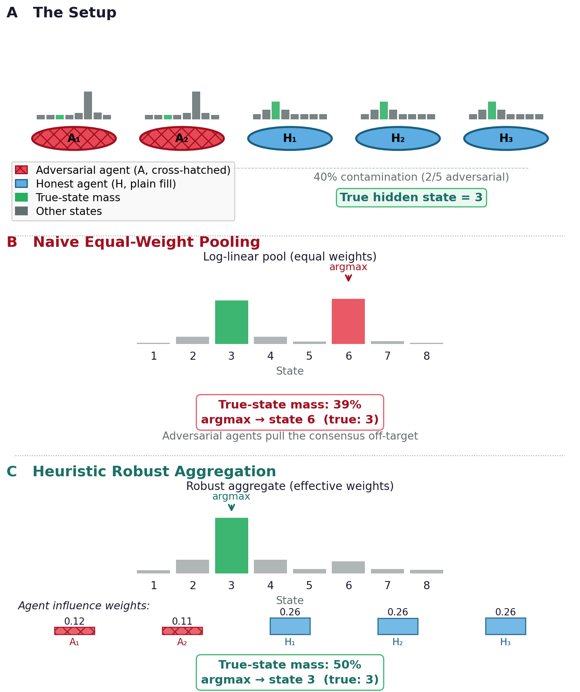
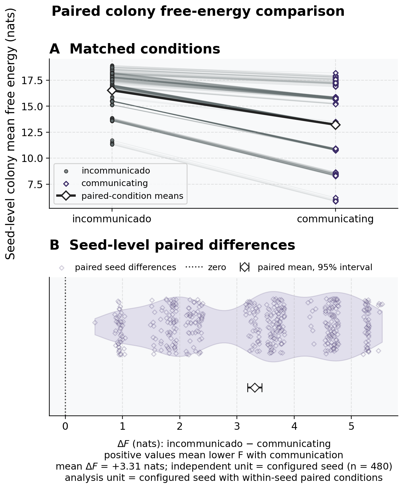
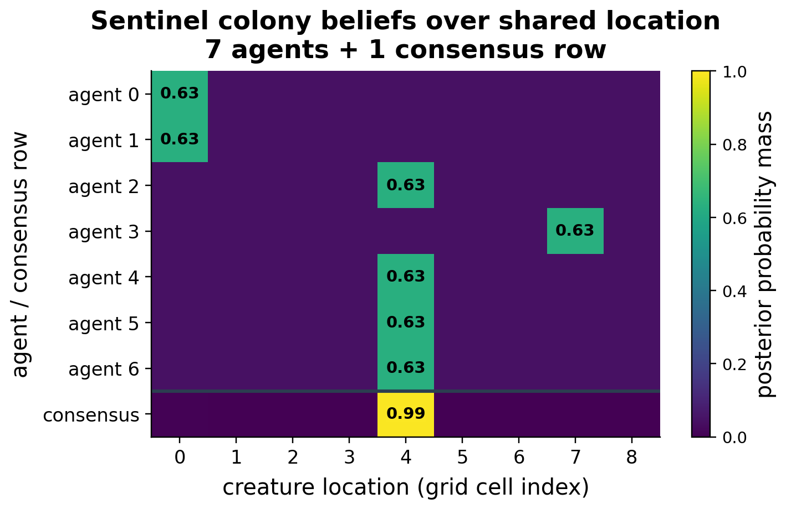
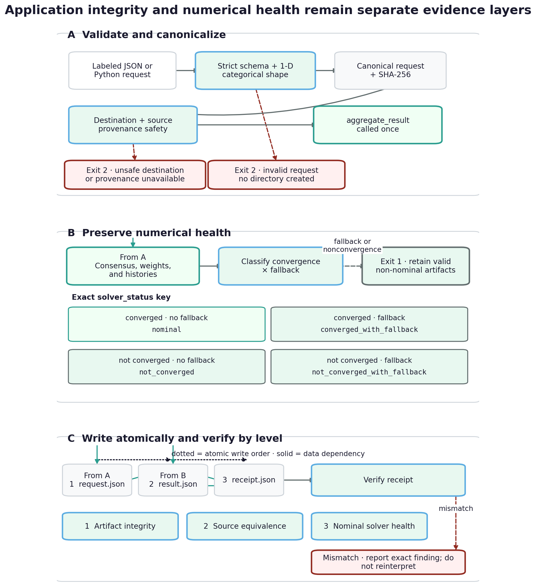
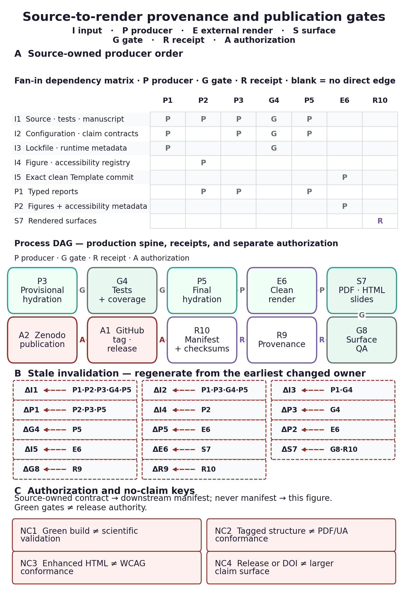
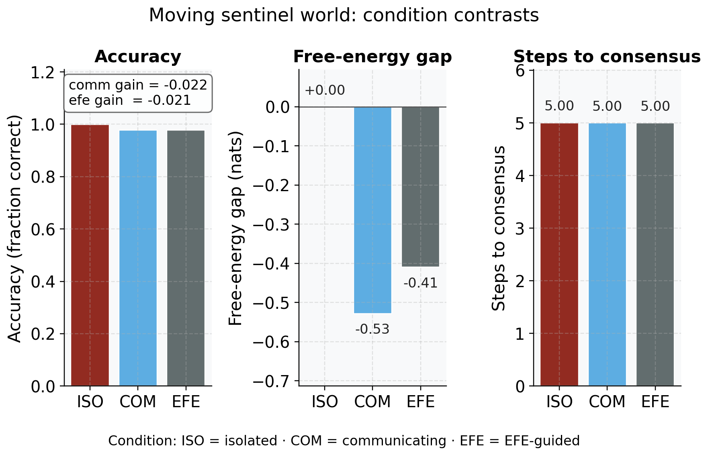
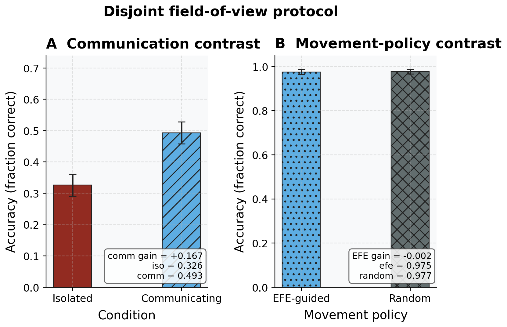
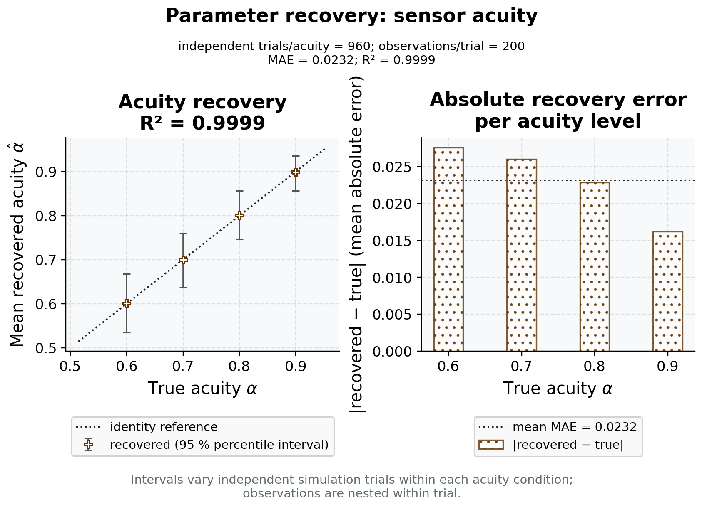
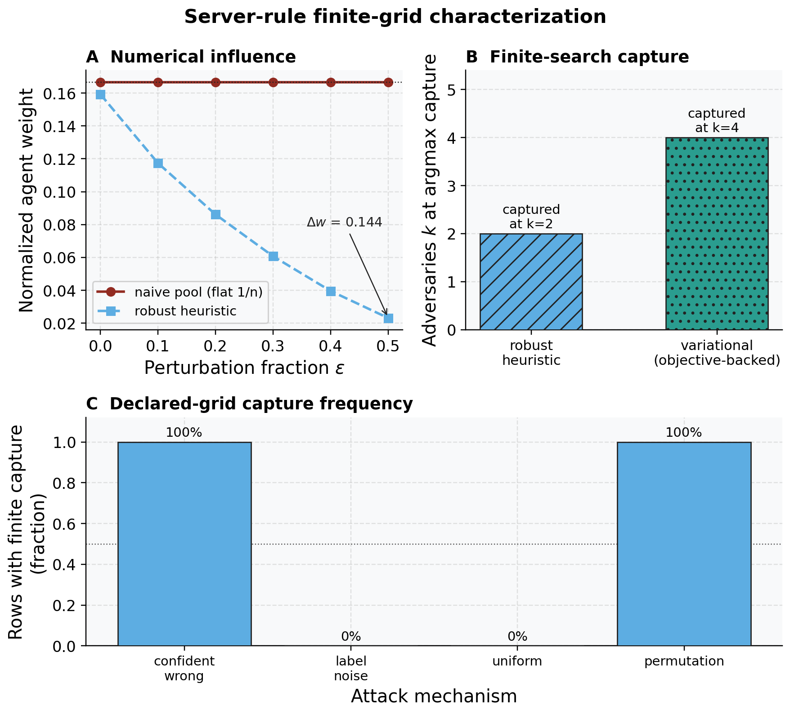

1 Abstract
Multi-agent active inference gives a natural account of belief sharing: agents hold local posteriors over a shared latent state, communicate those beliefs, and pool them into a colony-level consensus. The same mechanism is fragile when a member is miscalibrated, corrupted, or strategically wrong.
Because the standard pool multiplies the reports together, a single confident-but-wrong broadcast that puts near-zero mass on the true state can pull the whole consensus off it, outweighing many honest members. The colony therefore needs a way to preserve the useful structure of belief sharing while limiting the influence of contaminated beliefs.
This paper presents Active Fedference, a discrete-categorical framework that connects robust federated generalized variational inference with active inference belief sharing. The main bridge is structural: standard belief sharing appears as the non-robust corner of a broader generalized-Bayes family, while robust losses, conservative server fusion, and explicit aggregation diagnostics describe how the system moves away from that corner under declared contamination mechanisms.
The result is not a replacement for belief sharing, but a containment result: ordinary belief sharing is recovered when robustness is turned off. Bounded-loss theory applies on the client axis, while the variational-server axis supplies an objective-backed redescending weight update.
Following the manuscript’s authoritative three-axis guarantee map, the paper keeps source-conditional client updates, a recovery-only heuristic server rule, and an objective-backed variational server rule as separate claim owners, with no robustness guarantee transferred between them.
The study suite then exercises the framework as an end-to-end research system: recovery checks anchor the standard-Bayes limit, belief-sharing studies verify the communication baseline, contamination experiments test robust consensus, and extension studies probe moving agents, hierarchical latent structure, sensitivity to acuity and colony size, parameter recovery, and single-host socket-backed federation traces.
All reported quantities are generated from deterministic analysis artifacts and injected into the manuscript by token, so the paper, figures, release package, and validation reports remain tied to the same execution record.
The open-source repository is ActiveInferenceInstitute/Active_Fedference. This final-release manuscript uses assigned version DOI 10.5281/zenodo.22149133; the bound deposited PDF and repository release are controlled by separate publication gates.
Keywords: active inference, federated learning, generalised variational inference, belief sharing, robustness, FedGVI
The complete system schematic is shown in fig. 1.

robust_aggregate(c=0) ≡ log_linear_pool is stated
separately from the categorical specialization of the Eq. 7
message-combination term, which requires shared support, admitted
posterior-log potentials, and fixed weights. Under 40% configured
contamination, the deterministic cards report 39% versus 50% true-state
mass from the beliefs shown. Units are probability mass, agent count, or
conceptual route; one configured explanatory colony supplies no
replication unit, CI, error band, or significance test. The client
theorem, heuristic server evidence, and variational effective-weight
property are non-transferable, and the schematic does not reconstruct
the complete source protocol or establish universal
robustness.Detailed description of figure graphical abstract
Follow the numbered panels from private categorical beliefs to the fusion server and then to bounded outputs. Honest agents contain white mini posterior bars and use solid inbound arrows, whereas adversarial agents contain white crosses and use dashed inbound arrows, so role remains visible without colour. The outcome cards directly label both fusion rules and their displayed true-state masses. The central server separates the exact project identity robust_aggregate(c=0) equivalent to log_linear_pool from the qualified relation to the categorical Eq. 7 message-combination term. The final panel keeps three claim owners distinct: generalized-Bayes client updates under stated source assumptions, a divergence-reweighted server heuristic with conditional finite evidence, and an objective-backed variational server rule with an effective-weight property.
This deterministic formal/mechanistic schematic displays configured true-state-mass summaries for one explanatory colony but has no sampled quantitative axis, uncertainty interval, or independent replication unit. Numbering, inner glyphs, line patterns, keylines, and direct labels repeat every semantic colour. The identity is project-local, and the Friston relation requires shared support, admitted posterior-log potentials, and fixed weights. The diagram does not reconstruct the complete source protocol and does not transfer client theorems to either server rule.
2 Introduction: from belief sharing to robust generalized Bayes
A colony of active-inference agents that shares beliefs inherits both the power and the fragility of the pool it uses: the same multiplication of reports that sharpens an honest consensus lets a single confident, wrong member capture it. Two research communities each hold part of the remedy but do not, on their own, close the gap.
The active-inference community gives agents generative models, action selection, and colony-level belief sharing. The robust- and federated-Bayes community gives generalized objectives and aggregation methods for inference under misspecification or contamination.
The cited literatures do not, however, provide a single tested treatment of robust categorical belief fusion for active-inference agents. This introduction states the problem and its evidence boundary; sec. 3 scopes the reviewed gap, and sec. 4 lists the contributions together with what each result does not establish.
2.1 Active inference supplies generative agents and shared beliefs
Active inference casts perception, learning, and action as the minimization of variational free energy under a generative model, a program that grew out of the free-energy principle (Friston 2010) and its process-theory implementation (Friston et al. 2017).
In the discrete state-space setting the formalism is now standardized. An agent carries the categorical tensors \(A\) (likelihood), \(B\) (transitions), \(C\) (preferences), and \(D_0\) (initial priors), and infers hidden states by minimizing variational free energy. It selects actions by minimizing expected free energy — the sum of a risk term and an ambiguity term that together trade off goal-seeking against uncertainty-resolving behavior (Da Costa et al. 2020).
This synthesis is the substrate we build on. Mature toolboxes make it executable at scale: pymdp provides discrete-state active inference in Python (Heins et al. 2022), and RxInfer delivers reactive message passing for exact Bayesian inference (Bagaev et al. 2023).
The community has also moved from single agents to collectives. Surprise-minimizing ensembles reproduce collective animal behavior such as schooling and flocking (Heins et al. 2024); epistemic communities form when agents share a generative model and exchange evidence (Albarracin et al. 2022); and collective intelligence has been framed directly in active-inference terms (Kaufmann et al. 2021).
The narrow bridge studied here starts from posterior broadcasts over one shared categorical factor — a predator’s location, say — and forms a project log-linear pool (eq. 9). Under the explicit finite-shared-support, posterior-log-potential, and fixed-weight assumptions of sec. 5.8, that weighted geometric pool is a specialization of Friston et al.’s Eq. 7 message-combination term (Friston et al. 2024).
It is not a reconstruction of the source message construction, scheduling, cavity policy, generative factors, or complete protocol. That representation connects the qualified categorical bridge to the classical logarithmic-pooling literature (Genest and Zidek 1986; Genest et al. 1986), to modern Bayesian treatments of log-pool weights (Carvalho et al. 2023), to product-of-experts geometry in machine learning (Hinton 2002), and to distributed Bayesian estimators (Tresp 2000). In the reproduced baseline, communication lowers mean free energy relative to the matched incommunicado condition (sec. 7.2).
Friston et al. (2024) crystallized the colony mechanism into three worked simulations — communicating-colony free-energy convergence, Dirichlet language acquisition, and Bayesian model reduction structure emergence — whose mechanisms motivate three reduced categorical analogues in this repository (sec. 7.1). They are not numerical or exact protocol replications; a source-parity reconstruction remains future work before evaluating source-level equivalence.
Alongside fusion, the community has tools for growing the model itself: active inference connects naturally to Bayesian optimal experimental design and model selection (Smith et al. 2022), and post-hoc Bayesian model reduction prunes redundant structure by comparing free-energy bounds (Friston and Penny 2011) — the algebra used by our configured BMR sign control (sec. 7.4).
The reviewed active-inference belief-sharing work does not systematically characterize fusion under explicit contamination or intentionally wrong belief broadcasts.
The log-linear pool assumes reports are compatible with the shared generative model, while the opinion-pooling literature makes the assumptions about independence, weights, and external Bayesian coherence explicit (Genest and Zidek 1986; Genest et al. 1986). Fully Bayesian aggregation sharpens the point: geometric pooling is normatively compelling under dynamic-Bayesian rationality assumptions, not an assumption-free robustness procedure (Dietrich 2021).
The same product geometry can be brittle: if a report assigns zero or near-zero mass to the true state, the product can assign near-zero mass there too. That is the failure mode tested here, not a claim that every federation or every product pool behaves identically.
2.2 Robust and federated Bayes supplies bounded-influence updating
A separate literature studies bounded-influence updating outside active inference. Federated learning aggregates models trained on decentralized data without pooling the data itself, the canonical algorithm being FedAvg (McMahan et al. 2017).
Cast probabilistically, federated and continual learning unify under partitioned variational inference, in which each client owns a factor of a global approximate posterior and the server combines factors in natural-parameter space (Bui et al. 2018; Ashman et al. 2022). This is a closely related factor algebra expressed in a different vocabulary; the implementation tests the correspondence in the categorical recovery limit rather than assuming that the two settings are interchangeable.
The robustness this paper needs comes from generalized Bayesian inference, which replaces the likelihood with a loss and the KL regularizer with a general divergence, so that the posterior minimizes a generalized objective rather than applying Bayes’ rule literally (Bissiri et al. 2016; Jewson et al. 2018; Knoblauch et al. 2022).
This includes Gibbs-posterior updates (Jiang and Tanner 2008), coarsened or tempered posteriors that condition on neighborhoods rather than exact data (Miller and Dunson 2018), and learning-rate/temperature choices designed for safe updating under misspecification (Grünwald 2012; Kleijn and Vaart 2012). Choosing a loss or divergence with a bounded-influence property — for example, the density-power \(\beta\)-loss (Basu et al. 1998; Fujisawa and Eguchi 2008; Ghosh and Basu 2015) or generalized cross-entropy (Zhang and Sabuncu 2018) — can cap the influence of a contaminated observation under the corresponding assumptions.
FedGVI (Mildner, Hamelijnck, et al. 2025) federates this idea: each client runs a robust generalized-Bayes update against a cavity (the global posterior with the client’s own factor removed), and the server aggregates the refreshed factors under a chosen server divergence. The result is federated inference with divergence- and loss-specific robustness guarantees, demonstrated on Bayesian neural networks under label contamination.
Crucially, standard Bayes is a corner of this generalized family — the case where the loss is the negative log-likelihood and the divergence is KL. Friston et al. do not claim FedGVI, generalized Bayes, \(\beta\)-divergence, or robustness; this manuscript supplies the recasting.
Robust generalized Bayes therefore does not replace exact-Bayes belief fusion; it contains the standard pool as a tested zero-robustness recovery limit. That containment is the hinge this paper tests, and the recovery limits are stated formally as numbered results in sec. 6 and the central identity in sec. 5.8.
The historical framing is deliberately modest. The manuscript uses early probability, inverse-probability, utility, and collective-judgment sources as a conceptual genealogy for belief, evidence, expectation, and aggregation (Pascal and Fermat 1654; Huygens 1657; Bernoulli 1713; Moivre 1718; Bayes 1763; Laplace 1774; Bernoulli 1738; Condorcet 1785). These sources do not anticipate KL divergence, product-of-experts learning, variational Bayes, or federated optimization; the modern correspondence to FedGVI is the formal construction proved and tested here.
Beyond this core, we evaluate a tempered objective family, a deterministic MLP aggregation transfer, and disjoint-field-of-view communication. These are boundary tests: the first probes the accuracy/weight-control trade-off, the second tests API portability in one additional model class, and the third separates a binary-complement null result from a larger-state-space case where communication materially improves consensus.
2.3 Questions, design, and evidence boundary
The paper answers four scoped questions. First, does turning robustness off recover the standard log-linear pool and closed-form Bayes update? Second, under the declared confident-wrong broadcast mechanism, how does the server heuristic change consensus accuracy across contamination rates? Third, what does the objective-backed variational server rule guarantee, and what accuracy does it trade away? Fourth, how do communication, hierarchy, sensitivity, and parameter recovery behave in the accompanying categorical extensions?
The first question is answered algebraically and by machine-precision checks; the others are conditional simulation results. The independent unit, resampling scheme, and fixed hidden-state/attack-target estimand are specified in sec. 5.22 and sec. 5.27.
2.3.1 How to read the visual architecture
The manuscript uses two complementary visual layers. The formal schematics adapt the generative-model and posterior-sharing perspective of Friston et al. (2024) to the categorical implementation: fig. 4 shows the private sensory report and \(A/B/C/D\) substrate, fig. 3 shows how three local posterior messages become server inputs, and fig. 5 shows the hidden-state, agent, and active-control context. These diagrams are explanatory maps, not additional empirical observations.
The data-bearing figures then report the executed recovery checks, conditional contamination sweep, and objective/descent diagnostics; their captions identify the relevant uncertainty and resampling unit. The graphical abstract in fig. 1 compresses the same logic into a recovery anchor, a federation pathway, and three explicitly non-transferable robustness axes.
fig. 2 illustrates one configured failure-and-repair case: a partially contaminated colony broadcasts beliefs (Panel A), the equal-weight log-linear pool is pulled toward the attack target (Panel B), and the server-side heuristic reweights the broadcasts (Panel C). It is a deterministic schematic, not a universal robustness claim; the three axes and their distinct guarantees are defined in sec. 3 and sec. 3.3.

robust_aggregate
heuristic reweighting. The x-axis is hidden-state index 1–8 in Panels B
and C; the y-axis is posterior probability mass, while the influence
bars report normalized server weight. Cross-hatched A₁/A₂ roles with
adversarial keylines and plain-filled H₁–H₃ roles with honest keylines
distinguish agents without color; numbered states, true-state text,
argmax arrows, per-agent weight labels, and direct percentages identify
every outcome. The true hidden state is 3. Under 40% configured
contamination, the equal-weight pool assigns 39% mass to the true state
and its argmax lands on the adversarial state, whereas the heuristic
assigns 50% and recovers the displayed true-state argmax. Units are
probability mass and normalized weight. This single deterministic colony
has no independent replication unit, resampling interval, error bar, or
CI; its failure and repair do not establish calibrated uncertainty,
universal heuristic robustness, or the variational server’s
objective-backed weight-control result.3 Research gap and claim boundary
The two communities of sec. 2 provide substantial pieces of the problem, but the cited threads do not answer the same question. The gap is not a claim that either field is incomplete; it is the untested intersection between active-inference belief sharing and robust generalized Bayes. This section describes that intersection thread by thread, states the scoped bridge evaluated here, and records the evidence boundary that travels with it.
3.1 Five reviewed threads and their open intersection
Five threads in the reviewed literature run toward the gap but do not, in the sources cited here, cross it — three from active inference and two from robust Bayes.
Thread 1 — Generative modeling and action (active inference). Discrete active inference is a mature, synthesized formalism with standardized tensors and an expected-free-energy action rule (Friston 2010; Da Costa et al. 2020), and it is executable at scale through pymdp (Heins et al. 2022) and RxInfer (Bagaev et al. 2023). Boundary: these sources do not by themselves equip the active-inference inference step with the contamination mechanism evaluated here.
Thread 2 — Collective belief coordination (active inference). Colonies coordinate by sharing beliefs and minimizing collective surprise, reproducing flocking (Heins et al. 2024), epistemic-community formation (Albarracin et al. 2022), and collective intelligence (Kaufmann et al. 2021). Boundary: the cited collective-belief studies treat the broadcast posteriors as trusted and do not evaluate the robustness of fusion to misspecified or intentionally wrong members.
Thread 3 — Belief sharing and structure growth (active inference). Federated belief sharing fuses posteriors into a hive-mind consensus (Friston et al. 2024), and post-hoc Bayesian model reduction (Friston and Penny 2011) together with optimal-design-flavored model selection (Smith et al. 2022) grow and prune the generative model. Boundary: in the cited belief-sharing line, fusion is exact-Bayes and trusting; its connection to the robustness theory developed for federated learning is not evaluated.
Thread 4 — Federated and partitioned inference (robust Bayes). Federated learning aggregates decentralized models (McMahan et al. 2017), and partitioned variational inference gives the factor-algebra framework that unifies federated and continual learning (Bui et al. 2018; Ashman et al. 2022). Boundary: the cited examples target parameter or predictive-model factors rather than the generative-model-bearing, action-selecting POMDP belief consensus used here.
Thread 5 — Generalized and robust Bayes (robust Bayes). Generalized Bayesian updating replaces the likelihood–KL pair with a loss–divergence pair (Bissiri et al. 2016; Knoblauch et al. 2022); bounded losses — the density-power \(\beta\)-divergence (Basu et al. 1998) and generalized cross-entropy (Zhang and Sabuncu 2018) — deliver bounded influence; and FedGVI (Mildner, Hamelijnck, et al. 2025) federates the robust objective with provable guarantees.
Boundary: the cited robust-Bayes apparatus does not evaluate active-inference POMDP belief consensus. Its behavior in the discrete categorical regime of the worked belief-sharing example (Friston et al. 2024) is the scoped setting evaluated here.
3.2 The belief-fusion bridge evaluated here
Across these reviewed threads, the missing intersection is specific. The cited active-inference sources provide belief fusion but not the contamination analysis used here. The cited robust-Bayes sources provide robust inference but not this acting-agent categorical consensus. We evaluate a bridge comprising three distinct robustness axes and one recovery anchor.
The client axis is a FedGVI-faithful generalized-Bayes update using the \(\beta\)- and rcce-losses (eq. 7, eq. 8). The heuristic server axis reweights each agent by divergence from the current consensus (eq. 10). The objective-backed server axis is a conservative variational rule with a stated aggregation free energy and raw effective-weight bound (eq. 12).
The shared anchor recovers the standard-Bayes client limit and project log-linear-pool server identity (sec. 6.1). Under the qualified bridge of sec. 5.8, the latter specializes Friston et al.’s Eq. 7 message-combination term (Friston et al. 2024), not the complete source protocol. The algebra and executable residuals identify a recovery boundary, not an equivalence of literatures.
Declared comparisons use paired Wilcoxon statistics (Wilcoxon 1945), Benjamini–Hochberg FDR (Benjamini and Hochberg 1995), percentile-bootstrap intervals (Efron and Tibshirani 1993), and observed-effect design-power planning. Source-bound reports make those analyses reproducible (Peng 2011); they do not promote a conditional simulation into a theorem.
3.3 Guarantee map: three robustness axes
A red-team review surfaced the paper’s authoritative robustness taxonomy. Robustness enters in three places, with different claim owners, evidence classes, and permitted interpretations.
3.3.1 Client-side: source-theorem-backed
The per-agent generalized-Bayes update uses a bounded loss inside
generalized_posterior (eq. 7,
eq. 8). It is derived from eq. 2 and limits to NLL/Bayes as the loss parameter
approaches zero (Corollary Corollary 6; Proposition 4).
FedGVI’s bounded-influence result transfers only under the source
theorem’s loss, model, and contamination assumptions (Mildner, Hamelijnck,
et al. 2025).
3.3.2 Server-side: heuristic
robust_aggregate discounts an agent by \(\exp(-c\,\mathrm{KL}(q_n \,\|\, q))\). Its
proved positive property is the recovery limit: at \(c=0\), it equals the standard log-linear
pool (eq. 10, Theorem 5). It is
not a closed-form FedGVI-objective minimizer and does not inherit the
client-side bounded-influence result.
3.3.3 Server-side: objective-backed and conservative
variational_aggregate applies exact block updates that
do not increase the stated free energy eq. 12. It recovers the log-linear pool in
the trusting limit and bounds each raw effective weight by its base
weight. Its declared tradeoff is a conservative consensus; the
objective-backed property does not imply peak-accuracy dominance.
The robustness results (sec. 7.5) apply this map, and sec. 8.15 states the complete boundary. Effect sizes, intervals, and planning quantities characterize the server heuristic’s conditional behavior; they do not transfer the client theorem or variational objective to that heuristic. Later sections refer back to this taxonomy rather than redefine it.
4 Contributions and evidence boundaries
We make ten contributions, each paired with a theorem, figure, table, or generated token and with an explicit boundary on what the evidence establishes.
They fall into four groups: the first two build the core and its recovery contract; the next two report and statistically qualify the contaminated-consensus result; the fifth and sixth make the robustness axes explicit and add the objective-backed server rule; and the remaining four are scoped extensions — parameter recovery, the tempered aggregation family, an aggregation-API transfer, and a disjoint-observation communication test.
4.1 1. A discrete-categorical FedGVI core
A typed, deterministic, pure-NumPy/SciPy reimplementation of the FedGVI (Mildner, Hamelijnck, et al. 2025) generalized-Bayes primitives — divergences, bounded robust losses, the generalized posterior, the cavity/factor algebra, and robust aggregation — in the discrete-categorical setting that active inference (Da Costa et al. 2020) uses.
The objective (eq. 2) and its closed-form tempered-softmax solution are stated in Definition 1 and tested by the recovery-limit probes. The whole core is zero-mock and reproducible (Peng 2011).
4.2 2. A recovery-tested connection between categorical pooling and robust Bayes
A recovery certificate shows that the client KL/negative-log-likelihood loss limits recover Bayes and the server’s zero-robustness branch recovers the project log-linear pool.
Under the explicit shared-support, posterior-log-potential, and fixed-weight assumptions in sec. 5.8, that pool specializes Friston et al.’s Eq. 7 message-combination term (Friston et al. 2024), not the complete source protocol.
Three recovery limits are pinned to bit-level residuals. The bounded losses recover NLL/Bayes (Corollary Corollary 6 + Proposition 4; \(\le 0\) and \(\le 0\) maximum residual, eq. 11).
The Rényi divergence recovers KL (Lemma 3; \(\le 0\) residual, eq. 6). The server-side reweighting pool recovers the naive pool in its trusting limit (Theorem 5; \(\le 0\) residual, eq. 10).
Robustness is thereby a tested recovery-limit extension, not a replacement.
4.3 3. End-to-end evaluation of robust federated active inference
Three worked categorical source-mechanism analogues cover communicating colonies reaching lower free energy (sec. 7.2), Dirichlet language acquisition (sec. 7.3), and a configured Bayesian-model- reduction pruning sign control (Friston and Penny 2011) (sec. 7.4).
A contaminated-sentinel robustness sweep (sec. 7.5) shows the naive pool degrading while at least one server-side robust member clears the configured threshold at the most severe swept rate.
4.4 4. A statistically qualified server-side contrast
The “robust beats naive” conclusion for the declared contamination rate is produced only by a matched-pairs Wilcoxon signed-rank test (Wilcoxon 1945). Its multiplicity correction uses Benjamini–Hochberg FDR (Benjamini and Hochberg 1995) across the divergence family. We report the contrast with bootstrap confidence intervals (Efron and Tibshirani 1993) and observed-effect design-power planning.
Across 960 paired trials, the headline display method (RKL; tied set: RKL, AR, beta, rcce) reaches accuracy 0.9829 against the naive pool’s 0.9021 at the verdict rate.
At that rate, \(q = 1.11 \times 10^{-158}\), and the rank-biserial-derived \(d\)-equivalent is saturated (r=+1). The predeclared selection rule is largest positive rank-biserial effect_size; stable method order tie-break; the method with the largest paired mean difference is AR. Every headline number is a generated token.
4.5 5. An explicit accounting of the robustness axes
The map in sec. 3.3 separates the client-side per-agent update, which inherits FedGVI’s bounded-influence result under its stated source assumptions, from both server rules.
The sharp server-side reweighting heuristic has a recovery limit as its positive formal property and a scoped no-go result for its declared separable objective class.
The conservative variational server rule is objective-backed and has a redescending effective-weight update, but is not the accuracy-maximizer. Downstream users are told exactly which result is theoretically backed and which is a labeled heuristic.
4.6 6. An objective-backed server aggregator with redescending weights
We derive an aggregation free energy eq. 12 whose exact block updates define the
variational_aggregate rule (sec. 5.8.2, sec. 12).
Each exact block update monotonically decreases a stated objective, and a converged fixed point is coordinatewise stationary. The implementation keeps the lowest observed objective among converged configured starts, or reports the best unfinished trace as non-converged.
The rule recovers the standard log-linear pool in the trusting limit (eq. 10) and — unlike the sharp heuristic — carries a proven raw effective-weight bound (fig. 16, fig. 17).
The honest cost is conservatism: it is a maximum-entropy-biased consensus and trades peak point-accuracy for that control, so it complements rather than replaces the sharp heuristic of contribution 5.
4.7 7. Executed finite-grid acuity-recovery experiment
At each value in the 0.60, 0.70, 0.80, 0.90 acuity grid, the study generates 200 synthetic observations in each of 960 trials. It selects acuity by marginal-likelihood grid search over the declared finite grid.
The observed mean absolute error is 0.0232 with \(R^2 = 0.9999\) (fig. 31). Acuity-by-colony-size behavior belongs to the separate sensitivity study; it is not a parameter-recovery result.
4.8 8. The tempered aggregation family
A one-parameter \(\lambda>0\) generalization of the variational aggregate (sec. 12.5) is the objective
\[ \begin{aligned} F_\lambda(q,a) &= \sum_n a_n\,\mathrm{CE}(q,q_n)-\lambda H(q)\\ &\quad +\frac{1}{c}\,\mathrm{KL}_{\mathrm{gen}}(a\Vert w). \end{aligned} \qquad{(1)}\]
In eq. 1, at \(\lambda = 1.0\), the temperature is unity
and the objective reduces to the standard variational aggregate
bit-for-bit. Lower \(\lambda\) sharpens
the variational \(q\)-block toward a
maximizing state; it does not algebraically recover
robust_aggregate.
The raw effective-weight update and its bound are preserved for all \(\lambda\). The full derivation is in sec. 12.5.
4.9 9. An aggregation-API transfer demonstration
The same robust_aggregate API that governs the POMDP
studies is exercised unchanged with one deterministic MLP trained with
the density-power \(\beta\)-loss (16
hidden units, \(\beta=0.5\);
generalized variational inference with a point-mass variational family)
as the per-client model.
This supports portability of the server API to one additional model
class (sec. 7.6) when the optional
torch extra is installed (sec. 5.26). Without it, the MLP run is
skipped and its tokens render accordingly.
4.10 10. Communication contrast under disjoint observations
A multi-agent extension (sec. 14.7.1) in which 3 agents each observe a 2-slot disjoint window shows that belief sharing materially improves over isolated-agent accuracy in the declared configuration. Isolated agents clear the 0.167 chance baseline but stay far below the communicating consensus, which itself remains well short of full accuracy.
Across 128 seeds, isolated accuracy is 0.326 versus communicating 0.493, a reproducible margin under the declared matched-seed comparison (Wilcoxon \(p = 9.35 \times 10^{-23}\)). This is evidence for the configured disjoint-observation protocol, not a universal communication theorem.
The remainder of the paper proceeds as follows. sec. 5 develops the FedGVI core and the recovery limits; sec. 6 states the numbered recovery theorems and the expected-free-energy identity; sec. 5.22 fixes the configuration; sec. 7 reports the 9 studies, beginning with the recovery checks (sec. 7.1).
sec. 8 and sec. 9 synthesize; and sec. 10 and sec. 8.15 document determinism, scope, limitations, and the standing of each robustness axis.
5 Methods: the federated active-inference stack
This section develops the federated generalized variational inference (FedGVI) core in the discrete-categorical setting and defines its primitives. Their recovery limits are stated as numbered theorems in sec. 6. Every belief here is a categorical pmf — a non-negative vector summing to one — so the generalized-variational-inference machinery reduces to closed forms that are exactly testable.
All mathematics lives in src/fedference/; the prose
names the module and the identity that pins each claim.
The active-inference community has built a rich apparatus for federated belief sharing: discrete-state-space agents that broadcast posteriors and fuse them into a consensus (Da Costa et al. 2020; Friston et al. 2024), message-passing toolboxes that make exact-Bayes inference scalable (Heins et al. 2022; Bagaev et al. 2023), and collective and multi-agent formulations in which ensembles coordinate by sharing observations and beliefs (Heins et al. 2024; Albarracin et al. 2022; Kaufmann et al. 2021).
We accept that apparatus and extend it. Among the active-inference sources reviewed here, the consensus rules are exact-Bayes and trusting, without an account of an ensemble member that is misspecified or adversarial.
Outside active inference, the federated-learning and robust-Bayes literatures address important parts of that question — decentralized aggregation (McMahan et al. 2017), partitioned and federated variational inference (Ashman et al. 2022; Bui et al. 2018), and generalized, robustness-bearing Bayesian updating (Bissiri et al. 2016; Knoblauch et al. 2022; Basu et al. 1998; Zhang and Sabuncu 2018). Among the sources reviewed here, that apparatus has not been carried into the generative-model-bearing, action-selecting POMDP setting. The methodology below is the bridge.
It federates the FedGVI objective (Mildner, Hamelijnck, et al. 2025) per agent inside an active-inference ensemble, proves the standard-Bayes client limits, and tests the project-local zero-robustness log-linear-pool identity. Under the qualified categorical bridge of sec. 5.8, that pool specializes Eq. 7’s message-combination term rather than the complete source protocol. fig. 2 illustrates the three-axis architecture and the recovery hierarchy.
5.1 Federation protocol: local update, server fusion, broadcast
A colony of \(N\) agents shares a single latent factor \(s \in \{1,\dots,n_s\}\) (in the sentinel scenario, the location of a creature on a grid of \(n_s\) cells). Each round proceeds in three steps:
5.1.1 1. Local inference
Agent \(n\) observes \(o_n\) and forms a local posterior \(q_n(s)\) over the shared factor by a generalized-Bayes update against its own cavity, the colony belief with agent \(n\)’s previous contribution removed.
This is where robustness enters per agent: the update minimizes a loss-plus-divergence objective, and the FedGVI choice of a bounded loss carries the source theorem’s bounded-influence result under its matching assumptions.
5.1.2 2. Broadcast
Agent \(n\) broadcasts \(q_n(s)\), optionally with a scalar base weight \(w_n \ge 0\).
5.1.3 3. Aggregation
The server, or equivalently each agent acting as its own server, fuses the broadcast beliefs into a consensus. Following sensory attenuation — “agents do not hear themselves” — an agent’s heard consensus excludes its own message.
The protocol has two distinct places where robustness can live, and we keep them separate throughout. The per-agent generalized-Bayes update in step 1 is FedGVI-faithful at the stated primitive level: its formal bounded-influence claim is conditional on the source theorem’s assumptions.
The server-side aggregation rule in step 3 admits an optional divergence-reweighting heuristic that down-weights agents far from the emerging consensus; this heuristic is a complementary device whose positive formal property is recovery of the naive consensus in its trusting limit, while a scoped proposition rejects one declared separable objective class.
sec. 3.3 holds this boundary; no figure, table, or sentence in this work grants the server-side heuristic the per-agent FedGVI guarantee.
5.2 Notation for beliefs, losses, and divergences
The authoritative symbol and API contract is sec. 14. In the main text, \(q_n(s)\) denotes agent \(n\)’s local posterior, \(q(s)\) the global consensus, and \(q_{-n}(s)\) the cavity after removing the site factor \(t_n(s)\).
The prior is \(\pi_0(s)\), while \(\boldsymbol{\pi}\) is a policy. The POMDP tensors are \(A[o,s]\), \(B[s',s,u]\), \(C[o]\), and \(D_0[s]\).
The aggregation weights are \(w_n\) (raw/base), \(a_n\) (raw variational effective), and \(\widetilde a_n\) (normalized influence). The server robustness coefficient is \(c\), the variational entropy weight is \(\lambda\), the Rényi order is \(\alpha\), the density-power parameter is \(\beta\), and the robust cross-entropy parameter is \(q_{\text{loss}}\). The notation supplement also defines the seed/trial nesting and all statistical quantities used below.
The study is run over a fixed ensemble of 7 agents sharing a factor of 9 locations, with all randomness seeded at 0; the full per-study configuration is tabulated in tbl. 2. As an independent generative-model-free baseline, we also implement FedGVI in a deterministic MLP complement trained with the density-power \(\beta\)-loss — generalized variational inference with a point-mass variational family (sec. 7.6).
The remaining methodology subsections develop each primitive in turn: the generalized-Bayes update and its recovery to standard Bayes (sec. 5.3), the divergence family and its KL limit (sec. 5.6) and the robust loss family and its NLL limit (sec. 5.7), the aggregation identity (sec. 5.8), the lift to a belief-sharing round (sec. 5.9), and the paired statistics that earn every “robust beats naive” verdict (sec. 5.27).
5.3 Generalized Bayes: the route back to standard Bayes
The inference engine FedGVI federates is the generalized (Gibbs) posterior (Bissiri et al. 2016; Jiang and Tanner 2008; Jewson et al. 2018; Knoblauch et al. 2022), which trades the likelihood for a loss \(L\) and the KL regularizer for a general divergence \(\mathcal D\):
\[ \begin{aligned} q_n^\ast(s) &= \arg\min_{q_n} \left\{ \begin{aligned} &\mathbb{E}_{q_n}\!\Big[\textstyle\sum_i L(s; o_i)\Big]\\ &\quad + \tfrac{1}{\tau}\,\mathcal D\!\big(q_n \,\|\, \pi_0\big) \end{aligned} \right\}. \end{aligned} \qquad{(2)}\]
with prior \(\pi_0\), learning rate \(\tau\), and regularizing divergence \(\mathcal D\). The learning rate is part of the inferential specification, not a cosmetic constant; coarsened-posterior and safe-Bayes work show why calibration of that temperature matters under misspecification (Miller and Dunson 2018; Grünwald 2012), where ordinary Bayes concentrates around a KL pseudo-truth rather than literal truth when the model family is wrong (Kleijn and Vaart 2012). We name the object eq. 2 defines.
Definition 1 (Generalized-(Gibbs)-Bayes posterior). Given loss \(L\), prior \(\pi_0\), learning rate \(\tau>0\), and divergence \(\mathcal D\), the generalized-Bayes posterior \(q_n^\ast\) minimizes (Eq. (2)). When \(\mathcal D=\mathrm{KL}\), its exact categorical minimizer is the tempered softmax in (Eq. (3)).
\[ q_n^\ast(s) \;\propto\; \pi_0(s)\,\exp\!\big(-\tau \textstyle\sum_i L(s; o_i)\big), \qquad{(3)}\]
The implementation surface is the generalized_posterior
function in the generalized_bayes module.
The tempered softmax of eq. 3, stated in the definition above, is not an approximation: it is the exact closed-form minimizer of eq. 2 when the regularizer is the KL divergence, because the categorical support is finite and the objective is strictly convex in \(q\). The recovery to standard Bayes follows by choosing the loss.
With \(L=\mathrm{NLL}\), \(\mathrm{NLL}(p, o) = -\log p(o)\), the exponential in that tempered softmax becomes a product of likelihoods and the minimizer is exactly standard Bayes; eq. 11 in sec. 5.8 states that corner, and Corollary Corollary 6 there pins it to the closed-form prior-times-likelihood product.
The largest observed discrepancy between
generalized_posterior in this regime and the analytic Bayes
posterior is 5.55e-17, reported in sec. 7.1 — exact to machine precision (a
maximum deviation of about one ULP), not merely close.
FedGVI computes each client update against a cavity rather than the full posterior, so a contributing agent does not double-count its own previous message. We name that operation.
Definition 2 (Cavity / PVI factor update). The cavity is the normalized removal of agent \(n\)’s site factor from the colony posterior in natural-parameter space, as in (Eq. (4)). PVI replaces the site factor and recombines it with that cavity according to (Eq. (5)).
\[ \begin{aligned} q_{-n}(s) &= \frac{q(s)/t_n(s)}{\sum_{s'} q(s')/t_n(s')} \\ &= \operatorname{softmax}\!\big(\log q(s)-\log t_n(s)\big), \end{aligned} \qquad{(4)}\]
The final expression makes normalization explicit. Taking a cavity and re-multiplying the original site factor restores the global posterior:
\[ q(s)=\frac{q_{-n}(s)t_n(s)}{\sum_{s'}q_{-n}(s')t_n(s')}, \qquad{(5)}\]
This is the recombination identity satisfied by
generalized_bayes.cavity and
generalized_bayes.update_factor.
The numbered recombination identity is eq. 5.
The cavity of eq. 4 is the discrete analogue of the expectation- propagation / partitioned-VI cavity used outside active inference (Ashman et al. 2022; Bui et al. 2018), imported here so that the per-agent generalized-Bayes update of eq. 2 is computed against the colony belief with the agent’s own contribution removed — exactly the sensory-attenuation discipline the belief-sharing round of sec. 5.9 requires.
What remains unspecified in eq. 2 are its two ingredients — the divergence \(\mathcal D\) and the loss \(L\) — whose robust members and standard-Bayes limits sec. 5.6 develops next; the aggregation identity (sec. 5.8) then federates the resulting per-agent posteriors.
The authoritative notation supplement makes the same normalization and recombination contract explicit in eq. 36 and eq. 37; those equations govern the symbols used by the implementation and all later supplements.
5.4 Conjugate likelihood learning for the shared model
Active-inference agents learn the parameters of their generative model, not just plan with them (Smith et al. 2022; Friston et al. 2024).
The likelihood matrix \(A\) carries a Dirichlet prior with concentration \(a\) over each column, updated conjugately by accumulating observation-state co-occurrence counts (eq. 18), giving the column-normalized expected likelihood. The update of eq. 18 is driven by the expected sufficient statistics under the data-generating model, so as the concentrations accumulate \(\mathbb{E}[A]\) converges to the true likelihood.
Convergence is measured by the per-column KL divergence summed over hidden states, which decreases monotonically toward the standard-Bayes fixed point; sec. 7.3 reports the learning curve, where the KL falls from 3.4231 to 0.0027 across 24 count batches.
A forgetting hyperprior optionally decays the running mass toward an
asymptote so the agent does not become infinitely confident; with the
hyperprior disabled the classical unbounded accumulation of eq. 18 is recovered. The implementation is
learn_likelihood in the dirichlet_learning
module.
5.5 Bayesian model reduction for structure comparison
Structure learning in the active-inference frame proceeds by Bayesian
model reduction (BMR): given a full model with Dirichlet posterior
post under prior prior, the change in negative
variational free energy from swapping in a reduced prior — for
example one that prunes a redundant column toward zero — is available in
closed form without re-running inference (Friston and Penny
2011; Smith et
al. 2022).
Because the likelihood is shared, the reduced posterior is
post + reduced_prior - prior, and the free-energy
difference is a difference of log multivariate Beta functions (eq. 20), where \(\ln
B(a) = \sum_k \ln\Gamma(a_k) - \ln\Gamma(\sum_k a_k)\) is the log
Dirichlet normalizer.
A positive \(\Delta F\) in eq. 20 means the reduced model has more evidence — the pruned structure was redundant and should be adopted; a negative \(\Delta F\) means the reduction destroyed something the data support. When the reduced prior equals the prior the score is identically zero, the no-reduction fixed point.
sec. 7.4 reports \(\Delta F = 3.68\) for a redundant reduction
(accepted) against \(\Delta F =
-27.67\) for a supported one (rejected). The implementation is
bayesian_model_reduction.reduce.
5.6 Divergences: robust objectives and the KL limit
The generalized-Bayes objective eq. 2 has exactly two tunable ingredients: the divergence \(D\) that regularizes the update toward the prior or cavity, and the loss \(L\) that measures data fidelity. This section develops both — the divergence family first, the robust loss family in sec. 5.7 — and shows that each carries a limit in which it collapses to its standard counterpart, KL for the divergence and NLL for the loss.
Those client-side limits establish recovery to standard Bayes. The distinct categorical server bridge in sec. 5.8 then identifies a qualified log-linear message-combination specialization; it does not recover the complete source belief-sharing protocol.
The regularizing divergence \(D\)
decides how far a client’s updated belief may move from its cavity, so
choosing \(D\) is a modeling decision
rather than a numerical detail. The family lives in
divergences.py. We implement the forward KL (the
standard-Bayes case), the reverse KL (FedGVI’s RKL client
divergence), the standard \(\alpha\)-Rényi diagnostic, FedGVI’s
Alpha-Rényi normalization (AR), and total variation (a bounded distance
in \([0,1]\)).
The single most important recovery property is that the robust members recover the KL divergence in a limit:
\[ D_\alpha(q \,\|\, p) \;\xrightarrow[\alpha\to 1]{}\; \mathrm{KL}(q \,\|\, p). \qquad{(6)}\]
Lemma 3 (KL is the \(\alpha\to1\) limit of the Rényi family).
For finite-support categorical pmfs \(q,
p\), \(D_\alpha(q\,\|\,p) =
(\alpha-1)^{-1}\log\sum_k q_k^\alpha p_k^{1-\alpha}\) tends to
\(\mathrm{KL}(q\,\|\,p)\) as \(\alpha\to1\), the limit (Eq. (6)). Near \(\alpha=1\), divergences.py
returns the KL closed form, making equality exact there rather than
asymptotic.
KL is the divergence that makes generalized Bayes collapse to standard Bayes. When local posteriors are then combined by the separately specified categorical message-combination specialization in sec. 5.8, the project recovers its log-linear-pool corner; neither step reconstructs the complete belief-sharing protocol of Friston et al. (Friston et al. 2024).
Everything robust is a controlled departure from that fixed point; Lemma 3 is the formal hinge, and the largest observed Rényi-versus-KL discrepancy in the recovery band is 0 (reported in sec. 7.1).
The standard Rényi diagnostic is renyi_divergence;
FedGVI’s AR regularizer is
alpha_renyi_divergence, equal to the standard form divided
by \(\alpha\). For the finite
categorical support, generalized_posterior solves the named
Alpha-Rényi objective through its scalar normalization condition rather
than using a generic power-softmax shortcut.
This distinction keeps the reported limit and the implemented
objective aligned. The AR regularizer is not merely a
diagnostic: it is exercised as a client divergence in the categorical
FedGVI baseline of sec. 7.6, where
it pairs with the rcce loss of sec. 5.7
to constitute the genuine per-client robustness axis.
5.7 Robust losses: bounded influence at the Bayes corner
The data-fidelity term of eq. 2 lives in
losses.py. Standard Bayes uses the negative log-likelihood,
\(\mathrm{NLL}(p, o) = -\log p(o)\),
which is unbounded: a single contaminated observation with
\(p(o)\to 0\) dominates the
posterior.
This is precisely the fragility the robust-Bayes literature was built to remove (Basu et al. 1998; Fujisawa and Eguchi 2008; Ghosh and Basu 2015; Zhang and Sabuncu 2018), extended into robust-divergence variational inference (Futami et al. 2018), and the property FedGVI imports into federated inference (Mildner, Hamelijnck, et al. 2025). The robust-statistics vocabulary here is the usual influence-function one (Huber and Ronchetti 2009): bounded losses reduce the leverage of extreme observations, while NLL does not.
We implement two categorical robust losses, each of which recovers NLL in a limit.
The density-power (\(\beta\)) loss (Basu et al. 1998; Fujisawa and Eguchi 2008; Ghosh and Basu 2015; Futami et al. 2018) is recentered so that the scalar limit is exact:
\[ \begin{aligned} L_\beta(p, o) &= -\frac{p(o)^\beta - 1}{\beta} + \frac{\sum_k p_k^{\,\beta+1} - 1}{\beta+1},\\ L_\beta &\xrightarrow[\beta\to 0]{} \mathrm{NLL}. \end{aligned} \qquad{(7)}\]
The robust categorical cross-entropy (generalized cross-entropy) (Zhang and Sabuncu 2018) is
\[ \begin{aligned} L_{q_{\text{loss}}}(p, o) &= \frac{1 - p(o)^{q_{\text{loss}}}}{q_{\text{loss}}},\\ L_{q_{\text{loss}}} &\xrightarrow[q_{\text{loss}}\to 0]{} \mathrm{NLL}. \end{aligned} \qquad{(8)}\]
which by l’Hôpital recovers NLL as \(q_{\text{loss}}\to 0\) and at \(q_{\text{loss}}=1\) is the bounded mean-absolute-error loss \(1 - p(o)\), finite exactly where NLL diverges.
Proposition 4 (\(\beta\)-loss and rcce recover NLL). The losses in (Eq. (7)) and (Eq. (8)) recover NLL as their respective loss parameters tend to zero. Both limits are exact in the implementation. At their bounded endpoints, both losses remain finite where NLL diverges.
The largest observed discrepancies are 0 and 0, respectively (sec. 7.1). sec. 7.5 validates the bounded-loss robustness.
Taking the loss-parameter limits (\(\beta\to0\) or \(q_{\text{loss}}\to0\)) reproduces standard Bayes. Combining those local posteriors through the qualified categorical specialization in sec. 5.8 is a separate server step, not a recovery claim for the complete belief-sharing protocol of Friston et al. (2024).
This is the per-agent rigorous robustness axis: it is derived from eq. 2 and provably limits to Bayes through Proposition 4 and Lemma 3, and it is the axis that carries FedGVI’s bounded-influence guarantee under the cited matching assumptions.
The complementary server-side divergence-reweighting heuristic of sec. 5.8 is a distinct device and is never granted this guarantee (sec. 3.3).
5.8 Aggregation and message passing: standard pool, heuristic, and variational server
The server step lives in aggregation.py, where a
categorical specialization of the active-inference belief-sharing
relation (Friston et al.
2024) and the FedGVI objective (Mildner, Hamelijnck, et al. 2025) meet.
Each agent \(n\) broadcasts a
categorical local posterior \(q_n(s)\)
over the shared latent factor, optionally with a scalar base weight
\(w_n\).
Two fusion rules act directly on these broadcasts, and a third — the
objective-backed variational_aggregate of sec. 5.8.2 — refines the second into
descent on a stated objective.
The first is the log-linear pool, a project-local product-of-experts consensus. In the terminology of opinion pooling it is the logarithmic pool, a weighted geometric aggregation rule whose Bayesian-coherence assumptions have been studied independently of active inference (Genest and Zidek 1986; Genest et al. 1986; Carvalho et al. 2023); in machine-learning terms it is the product-of-experts normalization of local posteriors (Hinton 2002):
\[ \begin{aligned} &\operatorname{log\_linear\_pool}(\{q_n\})\\ &\qquad = \mathrm{softmax}\!\Big(\textstyle\sum_n w_n \log q_n\Big). \end{aligned} \qquad{(9)}\]
In the floating-point implementation, \(q_n\) denotes the admitted posterior after input validation, lower flooring of masses, and row normalization. The floor acts before normalization and applies to small positive masses as well as exact zeros. The pooling formula uses those admitted posteriors; rescaling sufficiently small raw masses can change them.
For the source bridge, fix one finite shared support \(\mathcal S\) with \(q_n(s)>0\) for every agent and state.
Suppose the inputs to Eq. 7’s softmax message-combination term can be represented as posterior log potentials \(m_n(s)=\log q_n(s)+\kappa_n\), where \(\kappa_n\) is constant in \(s\), and use declared fixed weights \(w_n\) that do not depend on the emerging consensus (the unweighted case sets each \(w_n=1\)). Additive constants then cancel under softmax, giving exactly eq. 9.
This is a categorical posterior-log-potential specialization of the source equation’s message-combination term, not a reconstruction of source message construction, self-exclusion/cavity policy, scheduling, generative factors, or the complete protocol.
The code alias friston_belief_share names this qualified
specialization only.
The second rule is robust_aggregate, an
iteratively-reweighted pool that discounts each agent by \(\exp(-c\,\mathrm{KL}(q_n \,\|\, q))\)
against the emerging consensus \(q\). A
confidently-wrong (contaminated) agent sits far from the consensus, can
earn a small effective weight and be suppressed in the declared
diagnostic regimes.
This independently motivated rule does not transfer FedGVI’s client theorem to the server side: it is the heuristic robustness axis of sec. 3.3, distinct from the per-agent rigorous axis of sec. 5.7.
It is also only an analogy to robust federated aggregation methods such as divergence-weighted gamma-mean aggregation, geometric-median robust aggregation, or Byzantine-tolerant gradient aggregation (Li et al. 2022; Pillutla et al. 2022; Blanchard et al. 2017). Those methods motivate the risk surface, but they do not supply this rule’s guarantee.
The defining identity is bit-level: at zero robustness the reweighted pool is the log-linear pool unchanged.
\[ \operatorname{robust\_aggregate}(0) \;\equiv\; \operatorname{log\_linear\_pool}. \qquad{(10)}\]
This is an exact project-local code identity. Under the stated posterior-log-potential assumptions, its right-hand side specializes the message-combination term of Eq. 7; the identity itself neither recovers nor certifies the complete source protocol (Friston et al. 2024).
5.8.1 Protocol map: local updates, broadcast, and server fusion
The visual map in fig. 3 makes the protocol boundary explicit: each client updates and broadcasts a categorical posterior; the server chooses the standard pool, heuristic, or variational route. This is a mechanistic schematic, not an additional benchmark: client-side FedGVI is source- conditional, server-heuristic accuracy is conditional on declared contamination, and the variational route owns objective/descent/raw-weight properties.

robust_aggregate heuristic, or objective-backed
variational_aggregate; distinct boxes, dashed arrows, and
claim-owner badges identify each route without relying on color. Stage 4
returns a recipient-specific, cavity-excluded posterior, so an agent
does not hear its own message. The standard route combines the client
KL/NLL/\(\beta=0\) recovery with only
the qualified categorical Eq. 7 message-combination specialization,
while the heuristic retains recovery-limit status and conditional
evidence only; no client guarantee migrates to either server rule. This
deterministic formal schematic has no empirical curve, interval, sample
size, or replication unit and does not reconstruct the complete source
protocol.Detailed description of figure message passing
Read the vertically ordered bands from client update to transport, fusion, and recipient return. The client band separates NLL/KLD recovery and generalized-Bayes client losses from all server operations. The transport band carries only categorical posteriors in the unchanged protocol-v1 envelope. Three parallel fusion routes use distinct shapes and dash patterns for the log-linear pool, divergence-reweighted robust_aggregate heuristic, and objective-backed variational_aggregate rule. Claim-owner badges identify a source theorem under assumptions, conditional heuristic evidence, an effective-weight property, and a qualified Eq. 7 specialization. The return band sends a cavity-excluded posterior to each recipient.
The figure maps categorical messages and ownership, not a measured effect; it therefore has no interval or replication unit. Posterior-only broadcast and self-exclusion are implementation properties. The source relation is limited to the categorical message-combination term under shared-support, posterior-log-potential, and fixed-weight assumptions. It is not a complete Friston-protocol reconstruction, a physical multi-host demonstration, or a theorem transfer from robust client losses to server fusion.
Theorem 5 (Categorical combination and recovery). For finite \(\mathcal S\) and \(q_n(s)>0\), take Eq. 7 inputs \(m_n(s)=\log q_n(s)+\kappa_n\), with state-constant \(\kappa_n\) and fixed \(w_n\). \(\operatorname{softmax}(\sum_n w_n m_n)\) equals (Eq. (9)). At \(c=0\), the server returns it by (Eq. (10)). This identifies categorical combination and recovery only, not the protocol or \(c>0\) behavior.
At \(c=0\), every reweighting multiplier is \(\exp(0)=1\), the iteration is skipped, and the same pool code path returns.
Corollary 6 (Closed-form Bayes recovery). With
KL/NLL, the posterior of (Eq. (2)) is the
prior-times-likelihood product in (Eq. (11)). Thus
generalized_posterior(KLD, NLL) reproduces Bayes. Under
Theorem 5,
pooling those posteriors specializes Eq. 7’s categorical combination
term, not its complete protocol.
\[ q^\ast(s) \;\propto\; \pi_0(s)\,\textstyle\prod_i p(o_i\mid s), \qquad{(11)}\]
Pooling gives the project log-linear pool of eq. 9.
The largest observed discrepancy between
robust_aggregate(robustness=0) and
log_linear_pool is 0 — bit-identical, since the
zero-robustness branch runs the same code path — and between
generalized_posterior(KLD, NLL) and the analytic Bayes
posterior is 5.55e-17, exact to machine precision (about one ULP); both
are reported in sec. 7.1, so eq. 10 and eq. 11 are verified identities rather than
approximations.
The honesty contract binds at exactly this point. The recovery
theorem and its corollary cover only the recovery identity and the
per-agent rigorous axis of sec. 5.7; no
statement about robust_aggregate transfers a
bounded-influence guarantee to that divergence-reweighting, whose
positive property is the \(\texttt{robustness}=0\) limit of eq. 10.
A scoped no-go rejects a declared separable objective class without supplying a broader objective certificate. The per-agent influence weights that the heuristic produces under contamination are illustrated, not guaranteed, in fig. 15. The separate fig. 18 is an exploratory generalized-Bayes point-estimate logistic-regression baseline comparing joint NLL/L2 and RCCE/L2 configurations. Because both loss and shrinkage differ, it does not isolate an RCCE-only effect or test the genuine per-client FedGVI property, which remains source-conditional in sec. 5.7.
The next subsection closes this exact gap on the server side with a different, objective-backed aggregator.
5.8.2 Variational aggregation with objective-backed weight control
The related server construction becomes a genuinely variational rule by replacing the heuristic’s reverse-KL weight update with a forward cross-entropy update. For \(c>0\) and \(\lambda>0\), treat the consensus \(q\) and a vector of effective weights \(a = (a_n)\) as joint variational parameters and define the aggregation free energy
\[ \begin{aligned} F_\lambda(q, a) &= \sum_n a_n\,\mathrm{CE}(q, q_n) - \lambda H(q)\\ &\quad + \tfrac{1}{c}\,\mathrm{KL_{gen}}(a \,\|\, w). \end{aligned} \qquad{(12)}\]
where \(\mathrm{CE}(q, q_n) = -\sum_i q_i
\log q_{n,i}\) is the cross-entropy of the consensus relative to
agent \(n\), \(H(q)\) is the consensus entropy, \(c\) is the robustness, and \(\lambda>0\) is the
entropy_weight coefficient (default \(\lambda=1.0\)); \(\mathrm{KL_{gen}}(a \,\|\, w) = \sum_n [a_n
\log(a_n/w_n) - a_n + w_n]\) is the generalized KL between the
effective and base weights.
Each block of \(F_\lambda\) has a closed-form minimizer, so alternating
\[ \begin{aligned} q &\leftarrow \mathrm{softmax}\!\Big( \tfrac{1}{\lambda}\textstyle\sum_n a_n \log q_n\Big),\\ a_n &\leftarrow w_n\,\exp\!\big(-c\,\mathrm{CE}(q, q_n)\big). \end{aligned} \qquad{(13)}\]
is exact block-coordinate descent on eq. 12 (variational_aggregate)
for \(c>0\) and \(\lambda>0\).
The implementation defines the \(\lambda\downarrow0\) endpoint separately as a deterministic tied-argmax rule; \(\lambda=0\) is not substituted into the objective or its \(q\)-update.
This substitution changes both orientation and scale: \(\mathrm{CE}(q,q_n)=\mathrm{KL}(q\|q_n)+H(q)\), and its common \(H(q)\) term scales all raw weights, which changes the entropy of the subsequent unnormalized weighted log pool.
The paired \(q\)- and \(a\)-updates in eq. 13 are exact block minimizers of the stated objective; that fact does not derive the reverse-KL heuristic.
Because \(F\) is biconvex, we run
the descent multi-start (pool, uniform, and
arithmetic-mean seeds, lowest observed \(F\) among converged starts; otherwise the
lowest unfinished trace is returned with converged=False)
so a near-one-hot adversary is not left at the product-of-experts seed
in the tested contamination regimes — the detail that supports the
effective-weight diagnostic (sec. 12).
The full derivation, the formal statement (block descent, \(c\to0\) recovery, and the raw effective-weight bound), and the numerical witnesses are in sec. 12; the empirical descent and influence collapse are shown in fig. 16 and fig. 17 and reported in sec. 7.5.3.
The authoritative notation supplement records the complete objective contract in eq. 34.
This upgrades the server side from an untracked heuristic to a derived generalized-Bayes aggregation with an explicit redescending raw-weight property: a single confidently-wrong agent earns raw weight \(a_n = w_n\exp(-c\,\mathrm{CE}(q,q_n)) \le w_n\) that vanishes as it diverges, whereas the naive pool grants every agent the fixed weight \(w_n\) however wrong it is.
The trade is conservatism — the \(-H(q)\) term makes the stationary point a
maximum-entropy-biased consensus consistent with the weighted
cross-entropies, so variational_aggregate is deliberately
flatter than the product-of-experts and does not maximize peak
point-accuracy. The two server-side rules therefore play complementary,
never-conflated roles, both reported: the sharp
robust_aggregate heuristic for accuracy under contamination
(sec. 7.5.2) and the conservative
variational_aggregate for a server-side objective with
stated weight control (sec. 7.5.3).
A temperature parameter \(\lambda>0\) (controlled by
entropy_weight, default \(\lambda
= 1.0\)) generalizes the objective to \(F_\lambda\); lower \(\lambda\) sharpens the variational \(q\)-block toward a maximizing state for its
current weighted log pool.
The tempered family (sec. 12.5;
objective eq. 30) recovers the
full-entropy variational aggregator at \(\lambda = 1.0\) and has a separately
implemented deterministic tied-argmax endpoint as \(\lambda\downarrow0\); neither endpoint is
guaranteed accurate and neither is an algebraic recovery of
robust_aggregate.
The effective-weight \(a\)-update is unchanged for every \(\lambda>0\), so the raw-weight bound holds over the objective-defined family.
5.9 Belief sharing: the standard aggregation corner
belief_sharing.share_round lifts the aggregation rule of
sec. 5.8 to a colony of
categorical sentinel agents.
Each agent has a private sensory outcome and a local posterior over the same shared latent location; it broadcasts the posterior, not its raw observation. Following the sensory attenuation that the active-inference formulation of belief sharing imposes (Friston et al. 2024) — “agents do not hear themselves” — an agent’s heard consensus excludes its own message:
\[ q_{-n} \;=\; \mathrm{normalize}\!\left(q/t_n\right), \qquad{(14)}\]
so the round in eq. 14 implements the declared categorical colony-hive-mind mechanism. With the naive fusion rule of eq. 9, eq. 14 is the project’s standard log-linear-pool consensus.
Under the explicit shared-support, posterior-log-potential, and fixed-weight assumptions of sec. 5.8, it specializes Eq. 7’s message-combination term; it does not reconstruct the complete source protocol.
With the server-side robust rule it yields a hive-mind that can down-weight a contaminated sentinel — an effect the contamination sweep of sec. 7.5 measures rather than assumes, and one that carries no guarantee beyond the recovery limit.
The per-round diagnostics — the post-sharing belief matrix, the
global consensus, and the mean surprise and accuracy against a known
ground-truth state — are returned by share_round and drive
Studies 1 and 4.
fig. 3 makes this concrete: three sentinel cards begin with different private categorical views of the nine-cell world, convert those views into local posteriors, and send only those posteriors to a fusion route. The return path is a cavity message, so the consensus heard by agent \(n\) excludes the local posterior \(q_n\).
The figure remains a protocol map rather than a new result; the empirical belief matrix and free-energy comparison remain the evidence surfaces in fig. 10 and fig. 9.
Because eq. 14 calls the aggregation
rule of eq. 9 or its robust
generalization, the recovery identity of eq. 10 propagates upward: a colony running
share_round at zero server robustness is bit-identical to a
colony running the project’s standard log-linear-pool round.
Under the qualified categorical bridge, the pool realizes only the source message-combination specialization; the robust round is a project extension, not a reconstruction of the active-inference ensemble literature (Friston et al. 2024; Heins et al. 2024).
sec. 7.2 reports that communicating colonies reach a mean variational free energy of 13.2190 nats against 16.5298 nats for incommunicado colonies across 480 seeds, with the per-agent belief matrix before and after a round shown in fig. 10 and the colony comparison in fig. 9.
The honesty boundary of sec. 3.3 carries through the lift unchanged. The robustness that eq. 14 inherits when the colony fuses with the server-side heuristic is the divergence-reweighting device of sec. 5.8, whose positive property is the naive-recovery limit and whose declared separable objective class has a scoped no-go result.
The per-agent FedGVI bounded-influence result enters the colony only through the rcce/AR client losses of sec. 5.7, under the source theorem’s matching assumptions, applied inside each agent’s local generalized-Bayes update.
The robustness sweep in sec. 7.5 and the variational supplement in sec. 12 keep the three axes distinct. The federation transport (sec. 13.4) realizes this sharing over queue-backed worker channels; by Proposition 12, the federation bit-identity result, the consensus is bit-identical to the in-process call, so the channel adds no precision loss while leaving multi-machine network transport as future work.
5.10 Generative model: categorical states, observations, actions, and hierarchy
The 9 studies — including the contaminated-sentinel robustness sweep (Study 4) — run on one shared sentinel world (Studies 5–7 use its moving and hierarchical variants): a discrete sentinel partially-observable Markov decision process (POMDP) using the categorical world structure illustrated by Friston et al. (2024), Figures 1 and 4.
We adopt the discrete-state active-inference formulation that the
community has standardized around — the categorical \(A/B/C/D_0\) generative model of da Costa et
al. (2020), the
same object the pymdp (Heins et al. 2022) and RxInfer (Bagaev et al.
2023) toolboxes operate on.
We reimplement it in pure NumPy in pomdp.py so the
colony, its sensors, and its dynamics are exactly the ones the analysis
executes.
A colony of sentinels watches a single hidden creature whose location is the shared latent factor they federate beliefs about.
The structural map in fig. 4 follows the same generative-model vocabulary while making the implementation boundary visible: Panel A shows what one agent actually sees — one noisy categorical report over the 9 possible locations — while Panel B identifies the \(A/B/C/D_0\) factors that turn that report into a local posterior.
Temporal depth then describes state, observation, posterior, and control order; hierarchical depth describes conditioned priors. It is a formal schematic, not an assertion that every displayed dependency is simultaneously estimated in every study.

Detailed description of figure generative model schema
Read panels A through D. Panel A relates a private observation to the local categorical hidden state. Panel B shows A, B, C, and initial-state D factors feeding the local posterior. Panel C orders hidden state, observation, posterior update, action, and transition through time. Panel D adds an optional higher-level context that modulates the lower categorical process while retaining local observations. Solid arrows encode the implemented categorical dependencies used by the applicable studies; the dashed top-level context edge identifies a qualified optional extension. Every node and factor is directly labeled.
This is a conceptual source-inspired schema with categorical states, outcomes, factors, and messages as its units. It contains no estimated quantity, resampling interval, or independent replication unit. The diagram identifies the implemented factorization and optional hierarchy; it does not claim that every source-model component, continuous state, learning rule, or multi-agent protocol has been reconstructed.
5.11 State space: one shared latent factor
The world holds one hidden factor: the creature’s location on a
square grid of side \(L\), giving \(n_s = L^2\) location states. Our sentinel
world uses the \(3\times 3\)
cardinality illustrated in Friston et al. (2024), Fig. 1, so \(n_s = 9\) — the cardinality
pomdp.N_LOCATIONS exposes and
experiment_config carries as n_locations.
This single location factor is precisely the latent the colony gossips about: it is the shared argument of the log-linear pool (eq. 9) and of every belief-sharing round (eq. 14). Fixing one hidden factor keeps the recovery limits of sec. 6 closed-form and exactly testable, rather than approximated.
5.12 Four categorical tensors: likelihood, transitions, preferences, priors
The generative model is the tuple \((A, B, C, D_0)\) in the discrete active-inference convention: a categorical probability mass function is a non-negative vector summing to one, and a likelihood matrix is shape \((n_o, n_s)\) whose columns (indexed by hidden state) are categorical.
Observation likelihood \(A =
P(o\mid s)\). Each sentinel observes the creature’s cell
through a noisy sensor. With probability acuity the sensor
reports the true cell; the residual mass \(1-\text{acuity}\) spreads uniformly over
the other \(n_s-1\) cells. With outcome
cardinality \(n_o = n_s\), the single
location modality is one \((n_s, n_s)\)
matrix:
\[ \begin{aligned} A_{o s} &= \text{acuity} && \text{if }o=s,\\ A_{o s} &= \frac{1-\text{acuity}}{n_s-1} && \text{if }o\neq s,\\ \sum_o A_{o s} &= 1. \end{aligned} \qquad{(15)}\]
The acuity in eq. 15 tunes how peaked the sensor is: high acuity gives a near-diagonal \(A\) that pins the creature; the belief-sharing study deliberately runs the colony at the low acuity \(\text{acuity} = 0.55\), where no single sentinel can resolve the location alone and the colony must pool evidence to do so.
When a seeded generator is supplied, each sentinel’s acuity is jittered by a small non-negative perturbation, so a colony carries slightly heterogeneous likelihoods while every column remains a proper pmf.
Transition tensor \(B =
P(s'\mid s, u)\). The creature moves on the grid
under three control paths — still, left,
right — so \(B\) has shape
\((n_s, n_s, n_u)\) with \(n_u = 3\). still is the
deterministic self-loop; left and right
decrement and increment the grid column, saturating at the walls (a
wall-adjacent move in the wall’s direction is a self-loop).
All three controls act on the column index alone, so the creature’s row is preserved and its motion is confined to the horizontal axis of the grid — a deliberate one-dimensional control over the two-dimensional location factor. Every slice \(B_{\cdot\,\cdot\,u}\) is column-normalized by construction, so the transition is a valid categorical for each action.
Log-preference \(C\). The sentinel prefers to see the creature near the den (the center cell), encoded as a log-preference vector of shape \((n_o, 1)\) with a positive bump on the center outcome and zero elsewhere. The preferred-outcome distribution that the expected-free-energy decomposition of sec. 5.15 uses is \(p_C(o) = \mathrm{softmax}(C)[o]\).
Initial prior \(D_0\). The creature is believed to start at the grid center, so \(D_0\) of shape \((n_s, 1)\) places unit mass on the center cell. \(D_0\) enters state inference as the log-prior of the one-step variational update (eq. 16 below).
The columns-are-pmfs invariant is not assumed — it is pinned by ISC-15, which checks that every column of \(A\) and of each \(B_{\cdot\,\cdot\,u}\) sums to one.
5.13 One-step variational state inference in the grid world
Given an observation \(o\), a sentinel forms a posterior over the creature’s location by a single softmax step (Friston et al. (2024), Eq. 4): the log-prior plus the additive log-likelihood message, summed over any conditionally independent modalities \(m\),
\[ q(s) = \mathrm{softmax}\!\left( \begin{aligned} &\ln D_0(s)\\ &\quad + \textstyle\sum_m \ln A_m[o_m, s] \end{aligned} \right). \qquad{(16)}\]
The message \(\ln A_m[o_m, \cdot]\) is the row of \(A_m\) that the observed outcome selects; summing messages over modalities makes each modality an additive evidence term — the categorical product-of-experts. The companion variational free energy, the scalar eq. 16 minimizes, is
\[ \begin{aligned} F[q] &= \mathbb{E}_q\!\left[ \begin{aligned} &\ln q(s) - \ln D_0(s)\\ &\quad - \textstyle\sum_m \ln A_m[o_m, s] \end{aligned} \right]\\ &= \mathrm{KL}\big(q \,\|\, D_0\big) - \mathbb{E}_q\!\big[\textstyle\sum_m \ln A_m[o_m, s]\big]. \end{aligned} \qquad{(17)}\]
reported in nats. The one-step posterior of eq. 16 is its unique minimizer, where \(F\) equals the negative log model evidence.
Both live in belief_updating.infer_states and
belief_updating.vfe, and the free energy of eq. 17 is the quantity the
communicating-versus-incommunicado colony comparison of sec. 5.22 scores.
This inference step is not a separate mechanism bolted onto the colony: it is the \(L=\mathrm{NLL}\), learning-rate-1 special case of the generalized-Bayes posterior eq. 2, reusing the same locked softmax.
That client identity recovers the stated categorical Bayes substrate at its trusting limits. The separate server identity in sec. 5.8 then yields the project log-linear pool under its qualified Eq. 7 message-combination bridge; together these do not recover the complete Friston protocol (sec. 6).
5.14 Hidden-state to action loop: the POMDP substrate
The categorical POMDP loop in fig. 5 separates the common latent-state substrate from the federation transport. In the sentinel interpretation, an agent is a location-sensitive observer: the hidden state is one of 9 cells, the private outcome is a noisy categorical report of that location, and the agent sends its posterior over the location rather than the report itself.
The flat belief-sharing studies use the observation, posterior, and communication subset; the moving-world extension also executes transition and EFE-guided action paths.
The diagram therefore gives readers the active-inference context without turning a conceptual loop into a claim that every study estimates every latent or policy quantity.

Detailed description of figure pomdp loop
Read the panels from shared world to one federation round and then through time. The first panel places agents around a shared categorical hidden world while keeping observations private. The second panel sends local posteriors to fusion and returns one cavity-excluded posterior per recipient; solid arrows and direct labels distinguish posterior broadcast and return, while the dashed recipient connector marks the cavity-exclusion qualification. The third panel orders hidden state, observation, posterior, policy or action, and transition, with the federation step inserted at the posterior boundary. Solid arrows trace the implemented inference, exchange, action, and transition sequence; dashed sensing connectors preserve the distinction between a shared hidden world and private observations.
The units are conceptual categorical states, outcomes, messages, actions, and ordered steps. There is no uncertainty interval or replication unit. The schematic describes the project POMDP and moving-world extension; it does not demonstrate a complete source protocol, physical multi-host network, Byzantine tolerance, privacy mechanism, or universally beneficial communication policy.
5.15 Learning stack: EFE, Dirichlet updates, and BMR
Active-inference agents do more than infer states under a fixed model: they learn the parameters of the model, score policies by expected free energy, and revise model structure. The active-inference community has standardized all three operations (Da Costa et al. 2020; Smith et al. 2022), and Friston et al. (2024) place them at the heart of the federated belief-sharing scenario.
We reimplement each in closed form so the language-acquisition, expected-free-energy, and emergence studies of sec. 5.22 rest on machine-checkable quantities rather than fitted curves.
5.16 Conjugate Dirichlet learning from co-occurrence counts
A sentinel learns its observation model \(A\) by placing a Dirichlet prior with concentration \(a\) on each column and updating it conjugately from observation-state co-occurrence counts (Friston et al. (2024), their equations 9–12). One learning step adds the expected sufficient statistics for that step and reads off the column-normalized posterior mean,
\[ a \;\leftarrow\; a + \text{counts}, \qquad \mathbb{E}[A]_{o s} \;=\; \frac{a_{o s}}{\sum_{o'} a_{o' s}}, \qquad{(18)}\]
implemented by learn_likelihood in the
dirichlet_learning module. Intuitively, each concentration
vector is a running tally of how often each outcome was seen while the
creature occupied a given state: the prior seeds that tally with
pseudo-counts, every step adds the co-occurrences it witnessed, and the
posterior mean is simply the tally renormalized into a categorical.
Likelihood learning is therefore bookkeeping — accumulate counts, then normalize — with no iterative optimization loop.
We drive eq. 18 with the expected sufficient statistics under the true model — a fixed count batch \(\text{count\_scale}\cdot A^{\star}\) per step, optionally jittered by a seeded generator. As the concentrations accumulate, the expected likelihood \(\mathbb{E}[A]\) converges to the data-generating \(A^{\star}\); convergence is measured by the per-column KL divergence summed over hidden states,
\[ \begin{aligned} \mathrm{KL}\big(A^{\star}\|\mathbb{E}[A]\big) &= \sum_s\sum_o A^{\star}_{os}\\ &\quad\cdot\ln\frac{A^{\star}_{os}}{\mathbb{E}[A]_{os}}. \end{aligned} \qquad{(19)}\]
which decreases monotonically toward zero — the standard-Bayes / KL fixed point. The learned likelihood always has full support (the Dirichlet prior is strictly positive), so eq. 19 is finite throughout. ISC-17 pins the monotone-decreasing KL trajectory, and the language-acquisition study of sec. 5.22 reports the descent of eq. 19 across 24 steps.
The implementation also carries the \(\eta\) forgetting hyperprior of Friston et al. (2024), their equation 12: before each conjugate addition the running concentration is decayed so the total concentration mass saturates at \(\eta\) rather than growing without bound, modeling an agent that stays adaptable instead of becoming infinitely confident. With \(\eta\) unset the classical unbounded accumulation of eq. 18 is recovered.
5.17 Expected free energy as the action-selection objective
A sentinel scores a candidate policy \(\boldsymbol{\pi}\) by its expected free energy \(G(\boldsymbol{\pi})\), which the active-inference formulation decomposes two equivalent ways (Friston et al. (2024), their equation 2): a cost view of risk plus ambiguity, and a value view of pragmatic plus epistemic value.
The two views are the same scalar rearranged, stated as eq. 22 and pinned to a zero residual by the algebraic identity eq. 23 in sec. 6.
We compute every term in closed form from the categorical model \((A, B, C, D_0)\) in
expected_free_energy.decompose:
5.17.1 Risk
Risk is \(\mathrm{KL}\big(q(o\mid\boldsymbol{\pi})\,\|\,p_C(o)\big)\), the deviation of the policy-predicted outcomes from the preferred-outcome pmf \(p_C(o)=\mathrm{softmax}(C)[o]\). Write \(q_{\boldsymbol{\pi}}(o):=q(o\mid\boldsymbol{\pi})\) for this scored-policy outcome predictive, used in the remaining terms.
5.17.2 Ambiguity
Ambiguity is the expected likelihood entropy \(\mathbb{E}_{q(s)}\!\big[H[p(o\mid s)]\big]\), the outcome uncertainty given the state.
5.17.3 Pragmatic value
Pragmatic value is the expected log-preference \(\mathbb{E}_{q_{\boldsymbol{\pi}}(o)}[\ln p_C(o)]\) — the utility, exploitation term.
5.17.4 Epistemic value
Epistemic value is the state-outcome mutual information \(H[q_{\boldsymbol{\pi}}(o)] - \mathbb{E}_{q(s)}[H[p(o\mid s)]]\) — the expected information gain that drives exploration.
Because there is no sampling, the identity of eq. 23 holds to floating-point tolerance; ISC-19
(expected_free_energy) pins the residual of the
decomposition to zero and pins each term’s semantics independently
(deterministic likelihoods give zero ambiguity; uninformative
likelihoods give zero epistemic value; preference-matched predictions
lower risk).
fig. 8 visualizes the additive cost view and the signed pragmatic/epistemic waterfall terminating at \(G(\boldsymbol{\pi})\) — a deterministic identity (Proposition 7), not a fitted result.
5.18 Bayesian model reduction for the configured pruning sign control
Sentinels also revise model structure. Bayesian model reduction (BMR) scores whether a reduced model — for example one that prunes a redundant location column by shrinking its concentration toward zero — has more evidence than the full model, without re-running inference (Friston & Penny via the post-hoc model optimization lineage (Friston and Penny 2011); the same Beta-function identity is their equation 13 (Friston et al. (2024))).
Because the likelihood is shared, the reduced posterior is available in closed form, \(\text{reduced\_post} = \text{post} + \text{reduced\_prior} - \text{prior}\), and the change in (negative) variational free energy is a difference of log multivariate Beta functions,
\[ \begin{aligned} \Delta F &\;=\; \ln B(\text{prior}) - \ln B(\text{post})\\ &\qquad + \ln B(\text{reduced\_post})\\ &\qquad - \ln B(\text{reduced\_prior}),\\ \ln B(a) &\;=\; \textstyle\sum_k \ln\Gamma(a_k) - \ln\Gamma\!\big(\sum_k a_k\big). \end{aligned} \qquad{(20)}\]
computed in bayesian_model_reduction.reduce. A positive
\(\Delta F\) in eq. 20 means the reduced model carries more
evidence — the pruned structure was redundant and should be adopted; a
negative \(\Delta F\) means the
reduction destroyed support the data require.
When the reduced prior equals the prior the score is identically zero in exact algebra, a zero point the suite pins to machine precision (ISC-20).
The configured BMR sign-control study of sec. 5.22 uses this operation over \(n = 4\) candidate states. It contrasts a redundant reduction (\(\Delta F = 3.68\) nats; adopt) with a supported one (\(\Delta F = -27.67\) nats; reject) in fig. 12. This fixed-candidate algebraic comparison is deterministic, so it has no resampled sample or bootstrap interval and does not establish structure discovery or universal emergence.
5.19 Contamination models: declared failure modes for belief fusion
Robust belief fusion only earns its keep when some agents are wrong. The active-inference community has built ensembles that coordinate by sharing beliefs and observations (Friston et al. 2024; Heins et al. 2024; Albarracin et al. 2022; Kaufmann et al. 2021), but it has assumed those beliefs are trustworthy in the cited modeled protocols: fusion is treated as exact-Bayes pooling of well-calibrated reports.
The robust-Bayes and federated-learning literatures (McMahan et al. 2017; Ashman et al. 2022; Mildner, Hamelijnck, et al. 2025) have, in turn, studied robustness to corrupted clients under their declared settings, but outside the generative-model-bearing POMDP setting.
This section defines the corruption process that lets us test fusion robustness inside the active-inference colony — the experimental complement of the robust aggregation rule of sec. 5.8.
5.20 Corruption process for adversarial belief broadcasts
In the sentinel world a healthy sentinel reports a well-calibrated
categorical over the creature’s location; a contaminated one reports
something corrupted. contamination.contaminate manufactures
the corrupted reports. Every corruption is a convex mixture of the
agent’s belief \(b\) with a corruption
target \(t\), governed by a single rate
\(r \in [0, 1]\),
\[ \tilde b \;=\; (1 - r)\, b \;+\; r\, t, \qquad{(21)}\]
so the experiments sweep exactly one knob. The convex form of eq. 21 gives a clean limit and is the anchor of the suite (ISC-26): at \(r = 0\) every corruption kind returns the input belief unchanged, so contamination is a strict, continuous departure from the uncorrupted Friston belief-share — never a discontinuity.
This section defines the three core corruption targets \(t\), each capturing a distinct failure of a
federated agent. Geometrically the three are three landmarks of the
probability simplex — a wrong vertex (confident_wrong), the
flat centroid (uniform), and a random interior point
(label_noise) — so the mixture of eq. 21 drags an honest belief toward a
qualitatively different destination in each case.
Two further mechanisms (byzantine and
drift) extend the same convex-mix contract and are
introduced in the extended-methods supplement (sec. 13.2).
confident_wrong — the adversarial
sentinel. This is the lookout that points to one wrong cell and
insists on it with total certainty. The target is a one-hot spike on a
wrong state, \(t =
\mathrm{onehot}(s_{\text{wrong}})\), so \(\tilde b\) is mixed toward a confident,
mistaken delta.
Callers choose \(s_{\text{wrong}}\) explicitly; the verdict sweep of sec. 5.22 fixes it once per colony as the state diametrically opposite the true state on the location grid, held constant across the entire rate sweep, rather than deriving it from the agent’s current belief.
At \(r = 1\) this is a pure delta on the wrong cell. This is the saboteur that is sure and mistaken: exactly the agent that robust aggregation must reject.
label_noise — the miscalibrated
sentinel. This is the lookout with a scrambled sensor: it is
not lying toward any particular cell, only diluting every honest report
with the same fixed sprinkle of noise. The target is a fixed noisy
categorical drawn once from a \(\mathrm{Dirichlet}(1)\) (a random but valid
pmf), modeling a sentinel whose report is partly random rather than
adversarial.
Because the noisy target is drawn once and then held fixed across the rate sweep, the corruption has no direction to exploit and no single cell to veto — the robust pool meets diffuse degradation, not a targeted attack.
uniform — the apathetic sentinel. This
is the lookout that shrugs: it has lost track of the creature and calls
every cell equally likely. The target is the maximum-entropy uniform pmf
\(t = (1/n_s)\mathbf{1}\), modeling a
saturated sentinel that has lost all information. At \(r = 1\) it reports uniform, contributing no
evidence to the pool rather than actively pulling it toward a wrong
cell.
All three share the contract of eq. 21 and require an explicit seeded
generator — label_noise uses it to draw the noisy target —
so every contaminated report is reproducible. The grid of rates the
sweep uses, \(\{0, 0.225, 0.45, 0.675,
0.9\}\), deliberately stops below the pure-veto limit \(r = 1\), where a fully-confident wrong
delta forces every pooling rule’s accuracy to zero and the
robust-versus-naive contrast vanishes.
5.21 How contamination meets the three robustness axes
The authoritative guarantee taxonomy is sec. 3.3; this section only records where the declared corruption enters each route.
5.21.1 Client bounded-loss route
A corrupted local observation enters the per-agent generalized-Bayes update of sec. 5.7. FedGVI’s bounded-influence result applies only under the source theorem’s matching loss, divergence, model, and regularity assumptions (Mildner, Hamelijnck, et al. 2025).
The logistic-regression comparison in fig. 18 is a narrower exploratory proxy: it
compares RCCE and NLL point-estimate gradients under two L2
coefficients. Its legacy AR argument selects the larger
coefficient; it does not evaluate Alpha-Rényi divergence or inherit the
source theorem from the observed curve.
5.21.2 Heuristic server route
A corrupted posterior broadcast enters robust_aggregate
at fusion. Divergence reweighting can assign a smaller effective weight
to a report far from the current consensus, as the finite diagnostics
figs. 13, 15 illustrate.
The rule’s positive formal property is the exact \(c=0\) recovery limit eq. 10, not a client-loss bound, Byzantine guarantee, or universal robustness theorem.
5.21.3 Objective-backed variational server route
The same corrupted posterior can instead enter
variational_aggregate, whose declared free energy,
block-descent property, and effective-weight bound are given in sec. 5.8.2. Those properties belong to
that forward-oriented objective and do not certify
robust_aggregate or the source client’s bounded-loss
theorem.
Contamination is therefore a common stressor, not a license to transfer a guarantee or empirical result between client, heuristic-server, and variational-server lanes.
5.22 Experimental design: studies, estimands, determinism, and power
The generative model of sec. 5.10, the learning operators of sec. 5.15, and the corruption process of sec. 5.19 are exercised by 9 studies, including the contaminated-sentinel robustness sweep (Study 4).
The shared configuration (seed budget, colony size, contamination
rates, divergences, trial counts, and the statistics settings) is read
from experiment: in manuscript
rendering configuration; the remaining per-study parameters are
tested code defaults in src/fedference/experiments/.
No value is hard-coded in the manuscript, and each token below resolves to the same configuration the code executed.
5.23 Determinism through fixed seeds and generated variables
All stochastic steps draw from explicitly seeded generators
(np.random.default_rng); the global np.random
state is never touched. The single-run studies use the first configured
seed (0), and the across-seed studies enumerate the deterministic seed
list \(0,\ldots,n_{\text{seeds}}-1\).
Re-running with the same seed reproduces every number in the results bit-for-bit, so the bootstrap confidence intervals and paired-test p-values of sec. 5.27 are themselves deterministic functions of the seed.
The figure layer follows the same provenance rule. Captions are written to be self-contained, with axes, resampling units, deterministic runs, truncated axes, and error-band status disclosed in the caption rather than left to inference (Rougier et al. 2014; Midway 2020). This is why several results figures state “single deterministic run” or “no error band” even when the inferential evidence appears in an adjacent table.
5.24 Study suite and contamination sweep
Studies 1–3 implement reduced categorical protocols that are source-mechanism analogues of the belief-sharing, language-acquisition, and model-reduction mechanisms discussed by Friston et al. (2024) on the sentinel POMDP; they are not exact source-protocol figure replications. The sweep adds the FedGVI robustness contribution (Mildner, Hamelijnck, et al. 2025).
Unless a study specifies otherwise, the global defaults are \(n_{\text{seeds}} = 480\) independent seeds and \(n_{\text{trials}} = 960\) matched trials per condition.
The inventories in tbls. 1, 2 separate each study’s declared measure from its compact execution parameters so neither meaning is compressed at presentation scale.
| Study | Declared measure |
|---|---|
| 1 — Belief sharing | Communicating versus incommunicado colony free energy |
| 2 — Language acquisition | Dirichlet-learning KL descent (eq. 19) |
| 3 — Emergence / BMR | Reduced-versus-full model evidence (eq. 20) |
| 4 — Robustness sweep | Robust versus naive consensus under contamination |
| 5 — Disjoint-FOV world | Communication necessity with non-overlapping fields of view |
| Study | Key parameters |
|---|---|
| 1 — Belief sharing | n_agents = 7; acuity = 0.55 |
| 2 — Language acquisition | num_steps = 24 |
| 3 — Emergence / BMR | candidate states n = 4 |
| 4 — Robustness sweep | n_agents = 7; n_contaminated = 2 |
| 5 — Disjoint-FOV world | n_agents = 3; fov_width = 2 |
Study 1 — belief sharing. A colony of 7 sentinels at the deliberately low acuity 0.55 each infer the creature location (eq. 16) and share beliefs through the log-linear pool (eq. 9). We compare a communicating colony against an incommunicado one of the same size and seed, scoring each by the mean variational free energy of eq. 17.
Two protocol details: state inference in this study substitutes a flat (uniform) prior for \(D\), and each belief’s free energy is scored against the pooled evidence of all agents’ observations (the disclosure carried in sec. 7.2). The across-seed sample is \(n = 480\) seeds, one colony-mean free energy per seed (fig. 9, fig. 10).
Study 2 — language acquisition. Each configured seed runs one sentinel trajectory using the conjugate Dirichlet update (eq. 18) over 24 steps. We record the KL descent of eq. 19 at each ordered step, giving 25 points per trajectory and \(n = 480\) independent seed trajectories for the pointwise interval in fig. 11.
Study 3 — configured BMR sign control. A redundant model reduction and a supported one are scored by the BMR free energy of eq. 20 over \(n = 4\) candidate states (fig. 12). This fixed-posterior comparison tests the expected signs for two declared prunings; it is not a structure-discovery experiment.
Study 4 — robustness sweep. The sweep varies two
factors on a colony of 7 sentinels of which 2 are saboteurs
(confident_wrong, sec. 5.20):
5.24.1 Contamination rate
The contamination rate spans \(\{0, 0.225, 0.45, 0.675, 0.9\}\) and is the convex-mix weight of eq. 21 toward the confident-wrong delta.
5.24.2 Server robustness setting
The server robustness setting is named with FedGVI client-loss/divergence vocabulary for cross-reference only: \(\{KLD, RKL, AR, beta, rcce\}\).
KLD is the non-robust Friston / standard-Bayes baseline
(server robustness 0, eq. 10) and
serves as the design’s negative control. The recovery identity
guarantees that it reproduces the naive log-linear pool exactly, so
every contrast uses the proved un-robustified server rather than a
separately tuned competitor.
The remaining labels \(\{RKL, AR, beta,
rcce\}\) each select a fixed robust_aggregate
down-weighting constant. The executed mapping is KLD (c=0.00), RKL
(c=1.50), AR (c=1.30), beta (c=1.70), rcce (c=1.60), defined in
fedference.experiments._common.
None of these labels invoke the client-side
generalized_posterior update of sec. 5.3 or the divergence family of sec. 5.6. This sweep exercises only the
server-side heuristic axis of sec. 3.3 (robust_aggregate),
never the client-side source-conditional theorem lane.
The executed per-divergence down-weighting strengths are fixed
constants defined in fedference.experiments._common and
recorded in the run reports.
The headline verdict pairs 960 independent trials at the fixed contamination rate 0.800 — heavy contamination that degrades the naive pool while staying below the pure-veto cliff (fig. 13, fig. 15). Each trial contributes one matched (naive, robust) accuracy pair, so the replication unit is the trial and the estimand is the within-trial accuracy difference at that single rate.
A complementary exploratory point-estimate logistic-regression proxy compares joint NLL/L2 and RCCE/L2 configurations under flipped-label contamination (fig. 18). Because both loss and shrinkage change, this is a composite loss-and-L2 contrast rather than an RCCE-only effect; it represents no weight-space posterior and does not implement a FedGVI generalized-posterior objective.
Study 5 — disjoint-FOV moving world. This extension (sec. 14.7) places 3 agents on a 2-slot disjoint-FOV track to test the necessity of communication when agents cannot observe the same positions. Isolated agents are compared against EFE-guided communicating agents on accuracy across the moving sentinel’s trajectory.
Five structural extension studies (Studies 5–9, Supplementary sections) build on the same POMDP substrate and are described there: the moving disjoint-FOV sentinel (sec. 14.7), the 2-level hierarchical POMDP (sec. 14.9), the \(N\)-level extension (sec. 14.11), the 2-D sensitivity sweep (sec. 14.13), and parameter recovery (sec. 15).
5.25 Sample size and prospective statistical power
The verdict design answers a deliberate question: pair many trials at one high contamination rate rather than spread few trials across the rate curve.
A matched-pairs Wilcoxon test gains power from the number of matched pairs, so concentrating \(n = 960\) paired trials at the single rate 0.800 gives the test the resolution to detect the robustness effect; scattering the same budget across 5 rates would dilute every contrast.
The across-seed studies are powered separately, with \(n = 480\) seeds for belief sharing and \(n = 480\) independent seed trajectories for language acquisition.
The 25 ordered learning points are repeated measures within each seed, not additional independent replicates, so the language interval does not count time points as samples.
The structural-extension and cross-study summary tier uses \(n = 128\) independent seeds and \(n = 40\) matched trials per contamination rate for its robustness row. Trials and clients are nested within a seed and are reduced before across-seed inference; they are not additional independent replicates.
The bounded red-team review grid is a separate source-bound analysis profile. It uses 160 deterministic seed replicates, with 24 trials nested within each seed and scenario/rate cell, and retains the registered rates 0, 0.2, 0.4, 0.5, 0.6, 0.7, 0.8, 0.9 across the finite attack union clean, confident wrong, permutation, byzantine, drift, label noise, uniform.
Its independent unit is the configured seed within a declared cell; cells that share design structure are not treated as independent worlds. Robust operating points, method settings, and rate profiles are fixed before the review run.
The grid reports selection-free contrasts and keeps clean, uniform, label-noise, permutation, confident-wrong, Byzantine, and drift controls visible. Completion of this finite review does not close server-heuristic characterization, leakage-free calibration, external-data, or protocol-reconstruction phases.
We do not merely assert adequacy — we compute the design power implied by the observed effect.
For the headline robust method (RKL) the observed-effect design power
of the paired Wilcoxon at the run’s \(n =
960\), computed at \(\alpha =
0.05\) against the directional alternative greater
(robust accuracy exceeds naive), is 1.0000.
The power approximation uses the deterministic noncentral-normal approximation of sec. 5.27, deflated by the Wilcoxon’s Pitman asymptotic relative efficiency, so it is approximately calibrated for the signed-rank test actually run (exact under a normal-shift alternative; the power computation is one-sided while the reported p-values are two-sided).
To bound a confirmatory replication, the prospective sample size needed to reach the target power 0.80 at the observed effect is \(n = 5\) matched trials — the explicit sample-size budget a follow-up study should adopt.
These power quantities characterize the server-side aggregation contrast; per the honesty contract of sec. 3.3 they do not certify the per-client \(\beta\)/rcce guarantees, which are pinned by the locked core (sec. 6) rather than by these aggregation-level statistics.
5.26 Software environment and configuration fingerprint
The FedGVI core, the POMDP studies, and the logistic-regression
baseline are pure NumPy / SciPy — no GPU and no network. The
deterministic-MLP neural complement (sec. 7.6) additionally uses PyTorch (CPU);
the analysis pipeline executes it and emits its numbers as tokens
exactly like every other result when the torch optional
extra is installed, and otherwise records a skipped status with
unavailable-value sentinels instead of silently fabricating neural
results.
Versions and platform — including the PyTorch version used for the MLP complement — are recorded automatically in sec. 10.
5.27 Statistical protocol: matched comparisons, intervals, and bounded claims
No “robust beats naive” claim is written before a statistical test produces it (Algorithm Gate I). Among the active-inference sources reviewed here, belief-fusion outcomes are typically reported as single illustrative runs; we treat every headline contrast as a paired hypothesis test with effect-size estimation, multiple-testing deflation, confidence intervals, and an observed-effect design-power calculation — the reporting discipline expected by robust statistics and applied inference (Huber and Ronchetti 2009; Efron and Tibshirani 1993; Koehler et al. 2009; Morris et al. 2019; Loy and Korobova 2021; Nakagawa and Cuthill 2007; Benjamini and Hochberg 1995; Wasserstein and Lazar 2016).
The protocol lives in statistics.py, sits at the
analysis tier above the locked FedGVI core, and emits every number the
results sections report; nothing is hard-coded (ISC-30).
5.28 Paired comparison and standardized effect size
The headline claim is paired: across matched scenarios — same seed, same contamination — does the robust aggregator raise consensus accuracy over the naive log-linear pool? For the expanded review grid, the inferential unit is the seed: trials are nested within a seed/cell and are averaged before seed-level contrasts.
The primary robustness sweep also retains a trial-level paired diagnostic, but its matched trial replicates are nested within one fixed seeded world and are not independent worlds. The seed-level review-grid estimand is therefore the robust-minus-naive accuracy difference after the declared trial reduction, not a contrast of two independently drawn group means.
Each configured robust method is retained in every review-grid rate panel and has its own seed-level contrast, interval, and test; no pooled-selected curve or pooled-selected inferential member enters that grid.
The naive comparator is the project’s log-linear pool eq. 9. Under the shared-support, posterior-log-potential, and fixed-weight assumptions of sec. 5.8, it specializes the message-combination term of Friston et al.’s Eq. 7 (2024), rather than reconstructing the complete source protocol.
We test it with the matched-pairs Wilcoxon signed-rank test (Wilcoxon
1945) (statistics.paired_test, ISC-28),
interpreted under the usual signed-rank conditions: seed-level paired
differences are independent across the declared seed schedule, while the
primary sweep’s trial-level diagnostic remains conditional on its fixed
world; the differences are ranked after zero differences are removed,
and the null is a symmetric distribution of paired differences around
zero rather than an equality-of-means claim (Fay and Proschan 2010).
This is the right comparison for bounded, often non-Gaussian accuracy deltas, but it is not assumption-free. The test reports the primary matched-pairs rank-biserial effect \(r_{\rm rb} = (T^{+} - T^{-})/(T^{+} + T^{-})\). We retain the monotone secondary transform \(d_{\rm eq}=2r_{\rm rb}/\sqrt{1-r_{\rm rb}^2}\), labeled a rank-biserial-derived d-equivalent, never raw Cohen’s \(d\) and never a replacement for the mean contrast.
When \(r_{\rm rb}\) saturates at \(\pm1\), the transform diverges; tables print a signed saturation marker rather than a finite million-scale value. The primary-sweep headline display method RKL has rank-biserial effect 1.0000, d-equivalent saturated (r=+1) (large), with the paired mean difference and bootstrap interval reported alongside it.
5.29 Bootstrap interval estimates
Every inferential mean — colony free energy, learning-curve KL,
per-method accuracy, and the robust-minus-naive accuracy difference —
carries a 95% percentile-bootstrap confidence interval (Efron and Tibshirani
1993) from statistics.bootstrap_ci, resampled
from the declared unit. For the review grid, the unit is the seed after
the nested trials have been reduced; for the primary fixed-world sweep,
the interval is explicitly trial-level and conditional; for single-seed
diagnostics, it is descriptive or trial-level.
The single-colony mechanistic rate table is \(n=1\) per cell and is descriptive, not an inferential mean; its companion profile uses the declared nested design. This separation follows simulation-reporting guidance to declare the estimand and the independent Monte Carlo unit (Morris et al. 2019).
The interval quantifies variation over the declared resampling unit (seed, recorded step, or matched trial) and is conditional on this simulation design, not on unmodeled real-world deployment uncertainty or alternative contamination models. The headline mean robust-minus-naive accuracy difference is 0.0809 with 95% CI \([0.0783, 0.0834]\).
At the verdict rate, the naive pool has mean accuracy 0.9021 (95% CI \([0.8993, 0.9049]\)).
The headline display method RKL has mean accuracy 0.9829 (95% CI \([0.9827, 0.9832]\)).
For every multi-seed summary we also report the Monte Carlo standard error (\(\mathrm{MCSE} = s/\sqrt{n_{\rm seed}}\)) and an approximate two-sided minimum detectable effect (MDE) at the configured target power. These are precision diagnostics over independent seeds, not claims about sampling a real population.
The MDE uses a normal approximation conditional on the observed seed-level standard deviation (Koehler et al. 2009); it is reported alongside the non-parametric interval rather than used to replace the paired test.
5.30 Multiple-testing deflation by BH-FDR
The sweep compares each robust divergence against the naive pool, so
an uncorrected \(p < 0.05\) across
the family would manufacture false discoveries. We control the
false-discovery rate with the Benjamini-Hochberg step-up procedure (Benjamini and
Hochberg 1995) (statistics.bh_fdr, ISC-29) at
\(\alpha = 0.05\).
The verdict family owns one robust-versus-naive contrast per robust method at the predeclared verdict rate; each rate table owns its own within-method rate family. Families are not pooled across figures or across the review-grid cells.
The review-grid families retain all configured method contrasts and do not derive a selected member by pooled mean.
The procedure returns both the rejection mask and the monotone BH q-values.
BH controls expected false discovery proportion within the stated family, not the family-wise probability of any false positive; the manuscript therefore states the family each table uses. The positive-contrast rule is strict and conjunctive: a method is a BH-rejected positive contrast iff BH rejects its null and its rank-biserial effect is positive. This is a statistical decision for the named family, not a unique scientific winner.
The primary-sweep headline display method has raw \(p = 1.11 \times 10^{-158}\), deflating to BH \(q = 1.11 \times 10^{-158}\).
5.31 Prospective power analysis for the verdict rate
We report not only that the verdict rejected the null but the observed-effect planning power implied by the run and the number of pairs a confirmatory run could budget.
The observed-effect design power of the headline paired Wilcoxon at
the primary sweep’s matched-trial unit, \(n_{\rm trial} = 960\), \(\alpha = 0.05\), alternative
greater, is 1.0000; the prospective sample size for the
target power 0.80 at the observed effect is \(n_{\rm trial} = 5\).
The estimator is the deterministic noncentral-normal approximation to the matched-pairs \(t\)-test, deflated by the Wilcoxon’s Pitman asymptotic relative efficiency \(3/\pi\), so the reported power is approximately calibrated for the signed-rank test the harness runs (the deflation is exact under a normal-shift alternative); note the power computation is directional for planning, while the reported p-values are two-sided.
This is an observed-effect planning approximation conditional on the observed effect size, not independent evidence for the result and not a confirmatory power guarantee.
5.32 Reporting tables and the honesty boundary
The results sections render six statistics tables straight from these tokens: the per-rate accuracy sweep (tbl. 3), the robust-versus-naive verdict (tbl. 6), the standardized-effect estimates (tbl. 7), their paired inference and observed-effect planning diagnostics (tbl. 8), the per-method accuracy with bootstrap CIs at the verdict rate (tbl. 9), and the effect and inference projections of the per-contamination-rate paired tests (tbls. 4, 5).
Every cell is a generated token, never hand-typed.
The honesty contract binds at exactly this tier. The effect-size, CI,
and power enrichment above decorates the server-side
robust_aggregate divergence-reweighting contrasts only.
It does not certify the per-client \(\beta\)/rcce generalized-Bayes (FedGVI) guarantees, which are pinned by the locked core (Proposition 4 of sec. 6) rather than by these aggregation-level statistics — the three robustness axes of sec. 3.3 kept distinct.
5.33 Evidence classes and replication hierarchy
The reporting map in fig. 6 makes the reporting rule explicit. Read each numbered row across its six fields: result and class, estimand and unit, independent unit, nesting, permitted support, and prohibited support. A formal identity, conditional server contrast, protocol check, and application receipt therefore cannot silently exchange evidentiary standing.
The top nesting strip supplies a shared reading grammar. A seed is independent only where its report declares it so; matched trials, agents, contamination roles, ordered steps, and posterior states otherwise remain nested. The three no-transfer boxes keep these ownership boundaries explicit. The external source-dataset lane stays open until a frozen design and source-bound confirmatory report exists. Fourteen rows cover the headline result families and public software boundaries; exact estimates and intervals remain in their typed reports and the native-unit cross-study summary (fig. 30).

Detailed description of figure evidence replication map
Read the full-width ledger from row 1 through row 14 and across its six labeled columns. Every row aligns one headline result family or public boundary with its evidence-class code, estimand and unit, independent unit, nested structure, permitted support, and prohibited support. The compact class key distinguishes formal or executable, source-conditional, conditional empirical, scoped implementation, and open evidence by symbols and keylines as well as color. Separate rows retain the project identity, client theorem, paired free energy, likelihood learning, BMR control, exploratory client baseline, heuristic and variational server rules, moving/disjoint-field worlds, hierarchical/sensitivity studies, acuity recovery, protocol, application provenance, and external confirmation. The top strip supplies a generic nesting grammar from configured study or run through seed when present, matched trial or condition, agent or contamination role, and ordered step or posterior state. Each level applies only where the corresponding lane's report declares it. Three numbered no-transfer boxes close the ledger.
The estimand and units differ by lane; the independent unit is therefore read from the same row, not inferred from the number of agents, trials, or time steps. Intervals, where present in the underlying result, resample the declared seed or matched-trial unit with lower levels nested. The no-transfer boxes state that guarantees cannot migrate between client, server, transport, and application evidence, and formal or software evidence does not imply independent external confirmation. Exact numerical estimates and intervals remain in their typed reports and the native-unit cross-study summary.
5.34 Computational complexity and scaling diagnostic
The release now reports computational complexity from the implementation itself. Let \(N\) be the number of agents, \(S\) the number of categorical states, \(I\) the solver-iteration budget, \(B\) the number of variational starts, and \(M\) the number of conditionally independent observation modalities.
The dominant dense work and the storage actually retained by the
current NumPy paths are summarized separately so neither quantity is
compressed at presentation scale. Here LOO means
self-excluding leave-one-out sharing, and server round
excludes queue and network wait.
Time, aggregation. The log, robust, and variational pools have orders \(\Theta(N S)\), \(\Theta(I N S)\), and \(\Theta(B I N S)\), respectively.
Time, sharing and inference. Naive LOO, robust LOO, state inference, and a server round have orders \(\Theta(N^2 S)\), \(\Theta(I N^2 S)\), \(\Theta(M S)\), and \(\Theta(N log N + I N S)\), respectively.
Storage, aggregation. The log, robust, and variational pools retain or peak at \(\Theta(N S)\), \(\Theta(N S + I S)\), and \(\Theta(N S + I S + B S)\), respectively.
Storage, sharing and inference. Naive LOO, robust LOO, state inference, and a server round retain or peak at \(\Theta(N S)\), \(\Theta(N S + I S)\), \(\Theta(S)\), and \(\Theta(N S)\), respectively.
These are dominant interaction counts, not hardware-independent FLOP totals. The \(N^2\) sharing term is material: with sensory attenuation enabled, one round computes one global pool and one leave-one-out pool per agent.
The iterative server rules additionally retain their returned per-iteration histories, which is why their storage rows include \(I S\). The server row includes worker-ID sorting and dense aggregation; incoming serialized belief volume is linear in \(N S\), while queue and network latency are deliberately outside this local-compute accounting.
The local path serializes one consensus-plus-weight result; if physical broadcast bytes are counted per recipient, that outgoing volume additionally has an \(N^2\) term because each result carries the \(N\) agent weights.
The accompanying seeded benchmark measures the real public call paths on the declared grids \(N \in \{4, 8, 16, 32, 64\}\), \(S \in \{256, 512, 1024, 2048, 4096\}\), self-excluding sharing \(N \in \{4, 8, 16, 32\}\), and \(M \in \{1, 2, 4, 8\}\).
The fixed dimensions are \(N=256\), \(S=64\) for aggregation, and \(S=16384\) for state inference; direct aggregation and server timings use \(I=6\), while the public robust self-excluding sharing path uses its solver budget \(I=32\); the default variational path uses \(B=3\).
Each grid point is warmed up \(1\) time(s) and measured \(5\) time(s), with median time plotted and the observed repeat range shown as a min–max bar.
The fixed input seed is \(20260728\) on the \(arm64\) machine using Python \(3.13.11\) and NumPy \(2.4.2\).
The measured log–log slopes are descriptive checks of the expected orders, not performance guarantees: agent-axis slopes are 0.93 (log-linear), 0.94 (iterative robust), 0.79 (variational), 1.62 (naive self-excluding sharing), and 1.89 (robust self-excluding sharing); state-axis slopes are 0.97, 0.95, and 0.94; the modality-axis inference slope is 0.66.
The slope fit is a timing diagnostic on this machine, not an inferential test and not evidence that the same constants hold under another BLAS, accelerator, process topology, or distributed network.
A finite grid can also yield a sublinear fitted slope when validation, allocation, cache, and interpreter overheads are material; the implementation-derived order is the governing claim, not equality between a finite-grid slope and its exponent.
The timing plot in fig. 7 visualizes the implementation-derived orders and the corresponding finite-grid timing diagnostic.

Detailed description of figure complexity scaling
Read the four panels in order. The first three log-log panels vary agents, categorical states, and modalities for aggregation, self-excluding sharing, and local state inference. Circle, square, triangle, dash, and direct endpoint labels identify operations independently of colour. Vertical spans show the recorded minimum and maximum wall-clock times around the median; dark dotted rules are normalized analytic-order guides rather than fitted confidence bands. The final panel aligns measured log-log slopes with the implementation-derived order expected for each operation.
The estimands are median elapsed seconds and dimensionless log-log scaling slopes over the fixed benchmark grid. The repetition unit is a timing repeat inside one locked software and hardware environment; min-max spans are not confidence intervals and do not quantify machine-to-machine variation. Exact plotted values are available in the registered fallback table. The figure supports implementation scaling within the measured range, not an asymptotic lower bound, distributed-throughput claim, or universal hardware benchmark.
Open exact values for figure complexity scaling (fig-values:complexity-scaling)
6 Formalism: recovery limits, EFE, and tempered aggregation
The primitives of sec. 5 are governed by a compact set of machine-checkable identities.
Their counter is monotone across the methods and this section. Definition 1 and Definition 2 cover the posterior and cavity / PVI update (sec. 5.3). Lemma 3 gives the Rényi KL limit (sec. 5.6).
Proposition 4 gives the \(\beta\)-loss and rcce NLL limits (sec. 5.7). Theorem 5 and Corollary Corollary 6 give belief-sharing and Bayes recovery (sec. 5.8). Proposition 7 below gives the expected-free-energy identity.
Each carries a tested residual. None grants a bounded-influence
guarantee to the server-side robust_aggregate heuristic;
that boundary is stated in sec. 3.3.
6.1 Recovery limits as the proof surface
The recovery limits separate client and server claims. The divergence
and loss limits recover the standard-Bayes client update; the
independently tested identity equates robust_aggregate with
log_linear_pool when robustness=0, recovering
the project’s standard server pool. Under the explicit shared-support,
posterior-log-potential, and fixed-weight assumptions in sec. 5.8, that pool is a categorical
specialization of Eq. 7’s message-combination term, not recovery of the
complete source protocol (Friston et al. 2024).
We collect the five residuals that pin those limited claims, each emitted by the test-suite and reported in sec. 7.1, never hardcoded.
Read each row of the table below as a triple: the robust primitive, the trusting knob value at which it must collapse onto its standard-Bayes or project-local counterpart, and the tested residual measuring whatever gap survives at that value. The rows differ in what kind of check they are.
The divergence and loss rows evaluate inside the implementation’s closed-form switch band, so their zeros are exact branch identities — guaranteed by construction, not measurements that could have come out otherwise.
Their genuine falsifiers are the off-switch convergence residuals, evaluated just outside the band (at \(\alpha = 1.00001\), \(\beta = 1.00 \times 10^{-6}\), \(q_{\text{loss}} = 1.00 \times 10^{-6}\)) where the general formulas run and a nonzero gap is possible: those residuals are \(1.66 \times 10^{-5}\), \(1.24 \times 10^{-5}\), and \(1.12 \times 10^{-5}\) respectively, and any failure of those quantities to shrink toward the limit would falsify the containment claim.
The posterior row is a measured identity on the general code path, so its near-zero residual is itself the falsification surface. The aggregate row’s zero at exactly \(c=0\) is likewise branch-exact; the identity is additionally exercised on the iterative code path at near-zero robustness, where the consensus must still land on the log-linear pool to tight tolerance.
| Identity (owner statement) | Trusting limit | Tested residual |
|---|---|---|
| Rényi \(\to\) KL (Lemma 3, eq. 6) | \(\alpha \to 1\) | 0 |
| rcce \(\to\) NLL (Proposition 4, eq. 8) | \(q_{\text{loss}} \to 0\) | 0 |
| \(\beta\)-loss \(\to\) NLL (Proposition 4, eq. 7) | \(\beta \to 0\) | 0 |
| generalized posterior \(\to\) Bayes (Corollary Corollary 6, eq. 11) | KL, NLL | 5.55e-17 |
robust_aggregate \(\to\) log-linear pool (Theorem 5, eq. 10) |
\(c = 0\) | 0 |
The central project identity is the aggregation collapse of eq. 10:
robust_aggregate(robustness=0) equals the log-linear pool
eq. 9. Its source bridge is
deliberately narrow.
Take the admitted posteriors defined in sec. 5.8, on a finite common support with \(q_n(s)>0\), and represent each Eq. 7 softmax input as a posterior log potential \(m_n(s)=\log q_n(s)+\kappa_n\), with \(\kappa_n\) constant in \(s\) and fixed declared weights \(w_n\) independent of the emerging consensus. Softmax then cancels the additive constants and yields the project pool.
This identifies only the source equation’s message-combination term; it does not identify source message construction, cavity/exclusion policy, scheduling, generative factors, or the complete protocol. Theorem 5 (sec. 5.8) states that specialization and the local \(c=0\) identity; the residual 0 above pins the latter.
Corollary Corollary 6 establishes
the separate client result: generalized_posterior(KLD, NLL)
reproduces the closed-form prior-times-likelihood Bayes posterior of
eq. 11 to residual 5.55e-17. Pooling
such local posteriors has the stated categorical specialization only
under the theorem’s assumptions.
The honesty contract binds here: the theorem and corollary cover only the recovery identity and the per-agent rigorous axis (Proposition 4); no statement transfers the bounded-influence guarantee to the server-side divergence-reweighting heuristic, whose positive property is the \(\texttt{robustness}=0\) limit of eq. 10. A scoped no-go rejects a declared separable objective class without certifying another.
6.2 Expected-free-energy identity as an algebraic check
The active-inference substrate that drives the studies of sec. 7 is a categorical specialization of the expected-free-energy algebra discussed by Friston et al. (Friston et al. 2024). It decomposes the expected free energy of a policy \(\boldsymbol{\pi}\) into two equivalent two-term forms. The risk-plus-ambiguity (cost) view and the negated pragmatic-plus-epistemic (value) view are the same scalar \(G(\boldsymbol{\pi})\) rearranged (Da Costa et al. 2020; Friston et al. 2024):
\[ \begin{aligned} G(\boldsymbol{\pi}) &= \underbrace{\text{risk} + \text{ambiguity}}_{\text{cost view}}\\ &= -\underbrace{\big(\text{pragmatic} + \text{epistemic}\big)}_{\text{value view}}. \end{aligned} \qquad{(22)}\]
The two views are not approximations of one another; they are the same scalar rearranged. In the implementation the shared entropy term enters both sides of the rearrangement, so the identity residual is zero by construction — it is a definitional consistency check on the decomposition’s bookkeeping, not an independent measurement.
The scientific content lives in the per-term semantics, which are pinned independently of the identity (see the closing clause of the proposition below):
\[ \begin{aligned} &\big(\text{risk} + \text{ambiguity}\big)\\ &\quad + \big(\text{pragmatic} + \text{epistemic}\big) \equiv 0. \end{aligned} \qquad{(23)}\]
Proposition 7 (Expected-free-energy decomposition
identity). For the categorical model in
expected_free_energy.py, the cost and negated-value forms
of (Eq. (22))
give the same \(G(\boldsymbol{\pi})\);
hence (Eq. (23)) holds
to machine precision. Cross-entropy and entropy splits establish the
equality.
The residual is pinned to \(10^{-9}\). Independent checks require deterministic likelihoods to give zero ambiguity, uninformative likelihoods zero epistemic value, and preference-matched predictions lower risk.
Here risk is \(\mathrm{KL}(q(o\mid\boldsymbol{\pi})\,\|\,p_C(o))\), and ambiguity is expected likelihood entropy \(\mathbb{E}_{q(s)}[H[p(o\mid s)]]\).
Pragmatic value is expected log-preference \(\mathbb{E}_{q_{\boldsymbol{\pi}}(o)}[\ln p_C(o)]\). Epistemic value is the state-outcome mutual information \(H[q_{\boldsymbol{\pi}}(o)] - \mathbb{E}_{q(s)}[H[p(o\mid s)]]\).
The executed formal-specialization diagnostic of fig. 8 uses a uniform prior over the nine locations. This is intentional: the canonical sentinel-world \(D_0\) is a point mass at the den, and under that fully resolved prior the mutual-information term is zero because there is no state uncertainty for an observation to reduce.
The uncertainty-bearing diagnostic makes the epistemic term visible without changing the canonical \(D_0\) used by the inference and recovery studies. Thus a near-zero epistemic value is a meaningful null condition, not a missing term.
fig. 8 shows the additive risk-plus-ambiguity view beside a signed pragmatic/epistemic waterfall whose terminal endpoint is \(G(\boldsymbol{\pi})\), labels epistemic value as \(I(s;o\mid\boldsymbol{\pi})\), and annotates the identity residual; it visualizes Proposition 7, not a fitted result, so it carries no error bars.

The expected-free-energy identity of eq. 23 is the action-selection counterpart of the inference-side recovery limits collected above: both are exact, closed-form, machine-checkable identities over the same categorical generative model.
Together they establish that the FedGVI-federated active-inference colony of this work is built on verified algebra throughout — the per-agent generalized-Bayes update recovers standard Bayes, the aggregation recovers the project log-linear pool under its qualified categorical bridge, and the policy scoring decomposes exactly — so every robustness result in sec. 7 is a controlled departure from a known, tested fixed point rather than an unmoored claim.
6.3 Tempered aggregation free energy and the accuracy-guarantee trade
The recovery limits and the expected-free-energy identity fix the endpoints of the aggregation family; the remaining formal question is what a controlled departure from the unit-entropy server buys and what it costs. The objective-backed variational aggregator of sec. 12 holds its consensus-entropy term at unit weight.
Freeing that single coefficient produces a one-parameter family whose only moving part is the sharpness of the consensus, and whose raw effective-weight bound is provably untouched. The following proposition isolates exactly that separation — algebra that moves versus algebra that does not — before the interpretation subsections turn to the empirical accuracy question the algebra cannot settle on its own.
Proposition 8 (Tempered aggregation free energy). Let \(\lambda > 0\) and let \(F_\lambda\) be (Eq. (30)). At fixed \(a\), the \(q\)-minimizer is (Eq. (31)). At \(\lambda = 1.0\), \(F_\lambda\) and both updates equal the standard variational aggregate bit-for-bit. The \(a\)-update and bound \(a_n \le w_n\) omit \(\lambda\) and hold for every \(\lambda > 0\).
At that default, the endpoint-selection rule also reduces bit-for-bit to the standard variational aggregate (Definition 10; sec. 12).
The proposition is intentionally more specific than the phrase “temperature improves robustness.” It identifies exactly which part of the variational server changes when the entropy coefficient changes, and it separates that algebra from the empirical accuracy question.
The objective and its update rules are a generalized-Bayes construction in the sense of (Bissiri et al. 2016; Knoblauch et al. 2022), while the particular client/server decomposition is the one implemented and tested here.
6.3.1 What the entropy weight controls
For a fixed effective-weight vector \(a\) and \(\lambda>0\), the \(q\)-block in eq. 31 is a weighted geometric pool of the local posteriors with inverse temperature \(1/\lambda\). Lower \(\lambda\) concentrates more sharply on states that receive consistent log-belief support; larger \(\lambda\) spreads probability mass and retains more entropy.
As \(\lambda\downarrow0\), the positive-temperature expression approaches a winner-take-most consensus (subject to ties and finite numerical support), whereas large \(\lambda\) approaches a flatter distribution. The implementation exposes that endpoint as a separately defined deterministic tied-argmax rule; it does not substitute \(\lambda=0\) into the objective or coordinate update.
This is a controlled change in the consensus geometry, not an automatic outlier detector.
The coupling matters. Although the formula for the \(a\)-block does not contain \(\lambda\), the fixed point can still change because \(a_n\) is evaluated at the new \(q\).
The correct statement is therefore conditional: for any current consensus, the effective-weight update and the raw bound \(a_n\leq w_n\) are unchanged; after alternating updates, different temperatures can reach different coupled \((q,a)\) fixed points. This distinction prevents the temperature result from being read as a theorem that the normalized influence or accuracy is invariant in \(\lambda\).
6.3.2 Recovery at the qualified log-linear-pool corner
At the configured default \(\lambda=1.0\), the entropy coefficient is the unit coefficient used by the original variational aggregator. The implementation therefore recovers that aggregator bit-for-bit, including its block updates and its endpoint-selection rule.
Turning the robustness strength \(c\) to zero then sets every server weight to its base value and gives the tempered log-linear pool. At the default temperature this is the ordinary log-linear pool of eq. 9.
Under the shared-support, posterior-log-potential, and fixed-weight assumptions of sec. 5.8, that is the categorical specialization of Eq. 7’s message-combination term; it is not the complete belief-sharing protocol of (Friston et al. 2024). Away from that default, the result is a tempered generalization of the pool and should not be described as Friston’s Eq. 7 itself.
This nested limit is useful for interpretation. The \(c\to0\) limit identifies the aggregation family with a known consensus operator; the \(\lambda=1.0\) slice identifies the objective-backed implementation used in the main server comparison.
Neither limit grants the server-side robust_aggregate
heuristic a variational objective or a bounded-influence guarantee. The
FedGVI literature’s rate and robustness results remain attached to their
stated loss, divergence, and sampling assumptions (Mildner, Hamelijnck,
et al. 2025; Mildner, Giampouras, et al. 2025).
6.3.3 What the accuracy–guarantee trade can establish
The executed grid over \(\lambda\in\{0.1, 0.2, 0.3, 0.5, 0.7, 1\}\) is a finite sensitivity study, not a search over a continuous optimum. It asks whether any tested temperature narrows the point-accuracy gap to the sharp heuristic while retaining the same effective-weight update. The closest tested temperature is \(\lambda^{\ast}=0.3\), with observed gap \(0.0008\).
These tokens are computed from the executed contaminated-colony trials and are reported with the grid definition so a reader can reproduce the selection rule.
The result has two distinct readings. If a lower temperature improves the paired point-accuracy comparison, it provides design evidence that entropy regularization can be tuned rather than accepted as a fixed conservatism penalty.
If no tested temperature closes the gap, that negative result is still informative: within this objective family, the same entropy mechanism that keeps consensus diffuse can limit exact point recovery under confident contamination.
In either case, the grid does not identify a universally best temperature, establish minimax robustness, or transfer the variational raw weight bound to a different estimator. Generalized-Bayes calibration and robust-loss theory motivate the family, but only the executed categorical design supports the present finite-grid statement (Bissiri et al. 2016; Knoblauch et al. 2022; Mildner, Hamelijnck, et al. 2025).
6.3.4 Publication-facing interpretation
The practical contract is consequently three-part. Use the default temperature when exact compatibility with the tested variational server is the priority.
Explore the declared grid when the application can trade concentration against the same raw effective-weight control.
Treat any selected temperature as a configuration-specific empirical choice until it is tested under a new contamination mechanism, colony size, sensor model, or loss. This is the appropriate bridge between the formal objective and the active-inference setting: it exposes a tunable consensus geometry while keeping recovery, guarantee, and accuracy claims on separate evidence tracks.
7 Results: recovery checks and study suite
Every quantitative assertion in this and the following results
sections is a generated token, hydrated by the manuscript-variable
generator from analysis outputs produced by
src/analysis/workflow.py and
src/fedference/experiments/ — no number is transcribed by
hand.
The studies implement categorical source-mechanism analogues of the colony belief-sharing scenario (Friston et al. 2024) and add the contaminated-sentinel robustness sweep and the federated neural-network baseline that are this paper’s robust-federated-learning contribution. All runs are deterministic under seed 0.
We lead with the recovery limits, not with a study, because they are what makes the studies a single coherent system rather than a collection of unrelated experiments. The generalized-Bayes machinery of sec. 5 contains the standard-Bayes client corner, while the server has the exact project-local zero-robustness log-linear-pool identity.
Under the explicit bridge in sec. 5.8, that pool is a categorical specialization of Eq. 7’s message-combination term rather than the complete source protocol. We verify those limited identities to machine precision before reporting anything built on top of them.
7.1 Recovery limits: standard-Bayes and project-pool corners are exact to machine precision
The identities that anchor every result are the client recovery of standard Bayes at the KL/NLL/\(\beta\to0\) and \(q_{\text{loss}}\to0\) limits plus the project-local server recovery to the log-linear pool at \(c=0\) — the scoped claims of sec. 6 (Corollary Corollary 6, Lemma 3, Theorem 5).
These are not figures but exact equalities, pinned by the locked core test suite.
Under the theorem’s shared-support, posterior-log-potential, and fixed-weight assumptions, the server pool specializes Eq. 7’s message-combination term; it does not reproduce the source construction in full. Robustness is a tested extension that vanishes at the stated recovery limits.
The five residuals below are the maximum absolute deviations between each generalized-Bayes object and the standard object it must reproduce in the trusting limit.
Each is a deterministic constant of the mathematics, not a per-run sample: it is reported as the maximum absolute deviation over the recovery band, which is exactly \(0\) where the implementation evaluates the closed form at the limit (the Rényi/loss switch) and otherwise a tiny floating-point residual:
Server recovery. The server-side aggregator at zero robustness equals the log-linear pool (eq. 10, Theorem 5): maximum absolute deviation 0. This is the naive-recovery limit of the server-side heuristic — the only property proven for that axis (see sec. 3.3).
Posterior recovery. The generalized posterior under the KL divergence and the NLL loss equals the closed-form prior\(\times\)likelihood Bayes posterior (eq. 11, Corollary Corollary 6): maximum absolute deviation 5.55e-17.
Divergence recovery. The Rényi divergence recovers KL as \(\alpha\to1\) (eq. 6, Lemma 3): residual 0.
Loss recoveries. The \(\beta\)-loss recovers the NLL as \(\beta\to 0\) (eq. 7, Proposition 4): residual 0. The robust categorical cross-entropy recovers the NLL as \(q_{\text{loss}}\to 0\) (eq. 8, Proposition 4): residual 0.
Because the Rényi divergence and the two categorical losses switch to their exact closed form inside narrow numerical-stability bands around the limit point (the Rényi switch band for \(\alpha\) and the categorical-loss switch band for \(q_{\text{loss}}\) and \(\beta\)), the three zero residuals above confirm that branch equals the standard object — not, by themselves, that the general formula converges there.
As a genuine (non-branch) convergence witness, evaluating each general formula strictly outside its switch band — \(q_{\text{loss}} = \beta = 1.00 \times 10^{-6}\) for the categorical losses and \(\alpha = 1.00001\) for the Rényi divergence — gives residuals 1.12e-05 (rcce), 1.24e-05 (\(\beta\)-loss), and 1.66e-05 (Rényi).
These residuals are nonzero—a small multiple of the input offset
itself, as the first-order Taylor behavior near the limit predicts—yet
remain several orders of magnitude below the \(O(1)\) scale of the loss/divergence values
being compared, and shrinking monotonically as the offset shrinks toward
the switch band. The verification is in
test_core_identities.py under
tests/fedference/.
This is evidence that the general formula itself converges to the standard-Bayes limit, not merely that the implementation switches to it exactly at the corner.
The first residual is the naive-aggregate limit of the server-side heuristic (Theorem 5); the latter four are the per-agent generalized-Bayes recoveries (Corollary Corollary 6 + Proposition 4) and the divergence-family recovery in the Rényi limit (Lemma 3, eq. 6) that define the theorem-bearing FedGVI axis under matching assumptions.
Keeping the three axes distinct at the level of the recovery limits is what lets the robustness claims of sec. 7.5 and sec. 7.6 rest on the per-agent axis without leaning on the heuristic.
266 of 268 acceptance criteria are verified. The pure-NumPy/SciPy
core carries project test coverage of 90.58% (gate \(\ge 90\%\)), with every stochastic step
threaded through a single seeded np.random.default_rng(0).
sec. 10 records the full environment
fingerprint, and the expected-free-energy identity that underwrites the
active-inference substrate is proven and visualized in sec. 6.2 (fig. 8).
7.2 Belief sharing lowers free energy at the project-pool corner
With the standard-Bayes client limit and project-pool recovery identity pinned exactly (sec. 7.1), the study suite opens one step away from them. Its estimand is the paired, seed-level difference in colony-mean variational free energy between incommunicado and communicating conditions. The design is a categorical source-mechanism analogue of the colony belief-sharing result (Friston et al. 2024).
A colony of 7 sentinels observes one hidden location through
independent noisy sensors of acuity 0.55. Each agent forms a one-step
posterior. The communicating condition applies one standard
log-linear-pool round at the robustness=0 recovery corner
(eq. 10, eq. 14); the incommunicado condition retains the
paired private posteriors.
Under shared support, posterior-log-potential admission, and fixed weights, the pool specializes Eq. 7’s message-combination term. It does not reproduce the complete source protocol. The paired comparison gives the following declared quantities:
Communicating mean. \(\bar F_{\text{share}} = 13.2190\) (across-seed 95% bootstrap CI \([12.9656, 13.4685]\) over \(n = 480\) seeds). The single illustrative seed-0 run has its own colony mean \(15.8115\).
Its per-agent 95% bootstrap CI is \([15.6177, 16.0647]\) over its \(n = 7\) agents. That interval characterizes the displayed run’s per-agent spread, not the across-seed mean.
Incommunicado mean. \(\bar F_{\text{solo}} = 16.5298\).
Paired reduction from sharing. \(\Delta \bar F = \bar F_{\text{solo}} - \bar F_{\text{share}} = 3.3109\); positive values mean lower free energy under communication.
Each seed supplies one matched pair of colony means. Seeds are the independent unit; agents are nested within each seed and are not additional independent replicates. Across the declared seeds, the communicating condition also has higher mean true-state accuracy (0.7302) and lower mean surprise (0.3775). These are conditional results for the reduced protocol.

fig. 9 reports the headline gap; fig. 10 shows the per-agent mechanism behind it.

7.2.1 Three robustness axes remain distinct in the results
The authoritative three-axis guarantee map is sec. 3.3. The contaminated studies keep its
source-conditional client update, heuristic server reweighting, and
objective-backed variational server rule visually and inferentially
separate. In particular, no result below transfers the client’s
bounded-influence theorem or the variational rule’s raw-weight bound to
robust_aggregate.
7.3 Conjugate Dirichlet likelihood-learning trajectory
Where the first study fused fixed beliefs in a single round, the second records the KL trajectory produced when a single agent updates the likelihood of its shared world. The design is a categorical source-mechanism analogue of the language-acquisition mechanism discussed by Friston et al. (Friston et al. 2024).
Each configured seed runs an agent that learns the likelihood of its shared world by conjugate Dirichlet updates over 24 count batches, the count update eq. 18. The recorded trajectory is \(\mathrm{KL}(\text{true } A \,\|\, \text{learned } A)\) before each batch — it starts at the flat-prior value and declines monotonically toward zero as the configured conjugate counts accumulate.
The KL here is the same divergence whose \(\alpha\to1\) Rényi limit is established by Lemma 3 (eq. 6), so the learning curve and the recovery limits measure the same object.
The endpoint summary is: initial KL (flat prior), 3.4231; final KL after 24 batches, 0.0027; and total KL reduction, 3.4204.
The trajectory contains 25 ordered learning steps per seed. Pointwise 95% intervals resample the \(n = 480\) independent seeds, and the computed monotone-decreasing indicator is Yes.
The observed decline to a final KL of 0.0027 is the bounded result: under the tested count schedule, the learned likelihood moves toward the true generative likelihood as conjugate counts accumulate. This finite trajectory characterizes the configured update and is not a convergence-rate result for arbitrary data-generating processes.

fig. 11 plots the full learning curve and its CI band.
7.4 Configured BMR sign control passed
The first two studies fixed the model structure. This third study instead checks the sign of a configured Bayesian-model-reduction comparison. Its estimand is the BMR free-energy difference for two candidate likelihood-column prunings. The categorical diagnostic is related to the model-reduction mechanism discussed by Friston et al. (Friston et al. 2024) and the post-hoc BMR lineage (Friston and Penny 2011). It is not a discovery claim about structure emergence.
The fixed posterior ranges over \(n = 4\) candidate states. One likelihood column is unsupported by the configured evidence; another is a supported control. BMR substitutes a reduced prior for each candidate and computes \(\Delta F\) eq. 20. This is one deterministic closed-form comparison, so no resampled sample, confidence interval, or paired test applies (Smith et al. 2022).
\(\Delta F\) is positive for the declared redundant-column pruning, so the reduced candidate is favored for this fixed posterior. Redundant-column result: \(\Delta F=3.68\); the configured reduction is accepted.
It is negative for the declared supported-column control. Supported-column control: \(\Delta F=-27.67\); that reduction is rejected.
Configured sign-control disposition: redundant accepted and supported rejected, recorded as Yes.
The observed sign pattern \(\Delta F_{\text{redundant}} > 0 > \Delta F_{\text{supported}}\) passes the configured control: this fixed posterior favors pruning the declared redundant column and rejects pruning the declared supported column. It does not show that arbitrary data or model families will discover, prune, or retain the correct structure.

fig. 12 contrasts the two configured prunings and reports the sign control.
Studies 1–3 all ran in a trusting world, where every broadcast belief is honest. The contamination sweep that follows removes that assumption, and it is the point at which the three robustness axes of sec. 7.2.1 begin to diverge.
7.5 Contamination sweep: regime-dependent server behavior under declared attacks
This experiment compares server presets in one active-inference
colony. Its legacy labels borrow FedGVI client-divergence vocabulary
(Mildner, Hamelijnck,
et al. 2025), but the presets are not client losses or
divergence theorems. KLD denotes the standard log-linear
pool; every other label denotes a robust_aggregate
heuristic constant in KLD (c=0.00), RKL (c=1.50), AR (c=1.30), beta
(c=1.70), rcce (c=1.60). The estimand is consensus mass \(q(\text{true state})\) under the declared
contamination mechanism.
The colony contains 7 sentinels, of which 2 mix their broadcasts toward a confident-wrong delta at each contamination rate. The comparisons remain conditional on this fixed world, attack target, and preset grid.
The evidence map in fig. 6 locates these comparisons in the conditional heuristic-server lane. It keeps the fixed-world matched trials distinct from the seed-level review below and prevents either result from inheriting client-loss or variational-server guarantees.
As the contamination rate rises across \(\{0, 0.225, 0.45, 0.675, 0.9\}\), the
standard (KLD) consensus accuracy degrades
monotonically:
| Contamination rate | KLD | RKL | AR | beta | rcce |
|---|---|---|---|---|---|
| 0 | 1.000 | 0.997 | 0.998 | 0.996 | 0.996 |
| 0.225 | 0.999 | 0.993 | 0.995 | 0.990 | 0.992 |
| 0.45 | 0.995 | 0.987 | 0.990 | 0.984 | 0.986 |
| 0.675 | 0.975 | 0.985 | 0.989 | 0.981 | 0.983 |
| 0.9 | 0.693 | 0.984 | 0.988 | 0.980 | 0.982 |
As the saboteurs capture more belief mass, KLD falls
monotonically while at least one non-reference preset remains above the
stated accuracy threshold. Reference trend: standard
accuracy degrades monotonically with rate, recorded as Yes.
Worst-rate display check: at rate 0.900, at least one non-reference preset remains at or above 0.50, recorded as Yes. Standard accuracy is 0.6928; the highest robust consensus mass in this single-world mechanistic sweep is 0.9880, attained by AR.
The rate trend above is one deterministic sweep per cell. The paired profile reruns each rate over \(n_{\rm trial} = 960\) matched trials nested within the fixed seeded world. Each non-reference preset is compared with the standard pool, and p-values are BH-adjusted within method (Benjamini and Hochberg 1995). This is a finite, rate-resolved diagnostic, not a continuous-family result.
| Server preset | Rate | Rank-biserial-derived \(d\)-equivalent | Label |
|---|---|---|---|
| RKL | 0 | saturated (r=-1) | large |
| RKL | 0.225 | saturated (r=-1) | large |
| RKL | 0.45 | saturated (r=-1) | large |
| RKL | 0.675 | 13.79 | large |
| RKL | 0.9 | -0.37 | small |
| AR | 0 | saturated (r=-1) | large |
| AR | 0.225 | saturated (r=-1) | large |
| AR | 0.45 | -303.73 | large |
| AR | 0.675 | 160.07 | large |
| AR | 0.9 | -1.57 | large |
| beta | 0 | saturated (r=-1) | large |
| beta | 0.225 | saturated (r=-1) | large |
| beta | 0.45 | saturated (r=-1) | large |
| beta | 0.675 | 2.81 | large |
| beta | 0.9 | 0.61 | medium |
| rcce | 0 | saturated (r=-1) | large |
| rcce | 0.225 | saturated (r=-1) | large |
| rcce | 0.45 | saturated (r=-1) | large |
| rcce | 0.675 | 5.67 | large |
| rcce | 0.9 | 0.14 | negligible |
| Server preset | Rate | Raw p | q | Reject |
|---|---|---|---|---|
| RKL | 0 | 1.11e-158 | 1.85e-158 | Yes |
| RKL | 0.225 | 1.11e-158 | 1.85e-158 | Yes |
| RKL | 0.45 | 1.11e-158 | 1.85e-158 | Yes |
| RKL | 0.675 | 1.88e-155 | 2.35e-155 | Yes |
| RKL | 0.9 | 1.06e-06 | 1.06e-06 | Yes |
| AR | 0 | 1.11e-158 | 1.47e-158 | Yes |
| AR | 0.225 | 1.11e-158 | 1.47e-158 | Yes |
| AR | 0.45 | 1.13e-158 | 1.47e-158 | Yes |
| AR | 0.675 | 1.17e-158 | 1.47e-158 | Yes |
| AR | 0.9 | 1.62e-61 | 1.62e-61 | Yes |
| beta | 0 | 1.11e-158 | 1.85e-158 | Yes |
| beta | 0.225 | 1.11e-158 | 1.85e-158 | Yes |
| beta | 0.45 | 1.11e-158 | 1.85e-158 | Yes |
| beta | 0.675 | 6.29e-106 | 7.86e-106 | Yes |
| beta | 0.9 | 6.04e-15 | 6.04e-15 | Yes |
| rcce | 0 | 1.11e-158 | 1.85e-158 | Yes |
| rcce | 0.225 | 1.11e-158 | 1.85e-158 | Yes |
| rcce | 0.45 | 1.11e-158 | 1.85e-158 | Yes |
| rcce | 0.675 | 2.37e-141 | 2.96e-141 | Yes |
| rcce | 0.9 | 6.54e-02 | 6.54e-02 | No |
The KLD baseline is excluded from both projections
because it is the standard reference, not a self-contrast. The displayed
\(d\)-equivalent is a
rank-biserial-derived transform, not raw Cohen’s \(d\); the signed-saturation marker flags
contrasts where the rank-biserial correlation saturates at \(\pm1\). These contrasts decorate the
server-side robust_aggregate heuristic only.

KLD log-linear pool
with robust_aggregate server presets \(KLD (c=0.00), RKL (c=1.50), AR (c=1.30), beta
(c=1.70), rcce (c=1.60)\) for \(7\) agents, including \(2\) saboteurs; they are not named client
losses. Distinct markers, dashes, direct labels, and the dark dotted
threshold at 0.50 duplicate color. The independent replication unit is a
matched synthetic trial within the fixed seeded true state and attack
target, with 960 trials per rate. Curves show trial means with 95%
percentile-bootstrap confidence intervals. At the largest rate, the
standard pool reaches 0.6697 and the within-sweep highest pooled robust
mean reaches 0.7857. That operating point is a disclosed display
selection: low-rate robust means can match or trail the standard pool,
and individual presets can fall below the threshold. The truncated
linear y-axis enlarges the declared threshold region. This fixed-world
sweep does not establish a universal method ranking, alternate-world
generalization, a client-loss theorem, bounded influence, or Byzantine
tolerance; the selection-free seed-level review is reported
separately.7.5.1 Selection-free all-method robustness review
The comparison in fig. 14 is the principal comparative robustness surface. It joins the conditional-world cells to the directional rate profiles while retaining every configured non-reference server preset. It uses 160 deterministic seed replicates and 24 trials nested within each seed and cell.
Read the portrait surface from top to bottom: Panel A is the full-width conditional heatmap, and Panels B–D stack the three rate profiles. Their elbow leaders terminate in reserved right-side label lanes so curve identity remains separate from the plotted endpoints.
The finite attack union is clean, confident wrong, permutation, byzantine, drift, label noise, uniform. The rate-resolved directional mechanisms are confident wrong, byzantine, drift, with entropy controls uniform, label noise and registered rates \(\{0, 0.2, 0.4, 0.5, 0.6, 0.7, 0.8, 0.9\}\). The independent unit is seed within a declared scenario or rate cell; the nesting rule is n_trials nested within each seed/cell; no trial is promoted to an independent world.
The payload is selection-free source payload; every configured non-KLD method is reported at every directional rate and no winner is used for inference, and its statistics surface is selection-free. It retains seed-level contrasts, paired Wilcoxon/rank-biserial results, percentile-bootstrap intervals, MCSE, an observed-effect MDE, and BH-adjusted rate families. BH ownership is BH is applied within each attack-mechanism × method rate family; cells sharing design structure are not treated as independent families.
The precision plan targets maximum MCSE 0.0100; the observed maximum is 0.0066 across 96. No method is selected by seed, rate, or pooled mean. Mixed and reversed cells remain visible, and the grid does not close the open calibration, external-data, or server-theory questions.
The source-generated exact-value fallback calls the same finite grouping helper as Panel A. For every displayed attack-by-weight cell it records the printed grouped mean and the printed half min–max span, preventing the numeric fallback from drifting from the renderer.

Detailed description of figure robustness review grid
Read the portrait figure from top to bottom. Panel A is a full-width conditional-world heatmap; each cell prints a signed robust-minus-standard true-state-mass mean and, on its second line, half the finite-grid min-max span. Panels B, C, and D then stack confident-wrong, Byzantine, and drift rate profiles. Every predeclared server preset has a distinct marker and dash. Elbow leaders route curve endpoints into a reserved right-side label lane, while a dark dotted rule marks zero. The standard pool is the circle-solid reference; no result-dependent method selection is applied.
The estimand is the signed difference in true-state probability mass, measured in probability units. Rate-profile points are seed means with 95-percent percentile-bootstrap intervals over independent configured seeds; trials and agents remain nested within each declared cell. The conditional summary uses its declared finite-grid span. The exact-value fallback repeats every displayed grouped mean and half min-max span from the renderer's shared helper. Mixed signs are retained: the map does not establish a universal winner, bounded influence, Byzantine tolerance, or generalization beyond the reviewed grid.
Open exact values for figure robustness review grid (fig-values:robustness-review-grid)
7.5.2 Conditional matched-trial comparison at the declared rate
At contamination rate 0.800, each of 960 matched trials redraws the heterogeneous healthy colony while holding the seeded world’s true state and attack target fixed. Each non-reference server preset is compared with the standard pool using the paired Wilcoxon signed-rank test (Wilcoxon 1945). Benjamini–Hochberg FDR adjustment applies within the declared family (Benjamini and Hochberg 1995).
The generated Wins field is true only when the adjusted
null is rejected and the paired effect is positive. It is conditional
bookkeeping for this fixed world and rate, not a universal method
ranking.
| Server preset | Effect size | Raw p | q | Wins |
|---|---|---|---|---|
| AR | 1.0000 | 1.11e-158 | 1.11e-158 | Yes |
| RKL | 1.0000 | 1.11e-158 | 1.11e-158 | Yes |
| beta | 1.0000 | 1.11e-158 | 1.11e-158 | Yes |
| rcce | 1.0000 | 1.11e-158 | 1.11e-158 | Yes |
| Method | Derived \(d_{\rm eq}\) | Label | Mean \(\Delta\) accuracy | 95% CI |
|---|---|---|---|---|
| AR | saturated (r=+1) | large | 0.0846 | [0.0821, 0.0873] |
| RKL | saturated (r=+1) | large | 0.0809 | [0.0783, 0.0834] |
| beta | saturated (r=+1) | large | 0.0764 | [0.0738, 0.0790] |
| rcce | saturated (r=+1) | large | 0.0787 | [0.0761, 0.0814] |
| Method | Raw p | q | Power | Target \(n_{\rm trial}\) | Reject |
|---|---|---|---|---|---|
| AR | 1.11e-158 | 1.11e-158 | 1.0000 | 5 | Yes |
| RKL | 1.11e-158 | 1.11e-158 | 1.0000 | 5 | Yes |
| beta | 1.11e-158 | 1.11e-158 | 1.0000 | 5 | Yes |
| rcce | 1.11e-158 | 1.11e-158 | 1.0000 | 5 | Yes |
| Method | n | Mean acc. @ verdict rate | 95% CI |
|---|---|---|---|
| KLD | 960 | 0.9021 | [0.8993, 0.9049] |
| RKL | 960 | 0.9829 | [0.9827, 0.9832] |
| AR | 960 | 0.9867 | [0.9865, 0.9869] |
| beta | 960 | 0.9785 | [0.9782, 0.9787] |
| rcce | 960 | 0.9808 | [0.9806, 0.9810] |
Reference mean. Naive-pool mean accuracy at the verdict rate is 0.9021 (per-trial mean over 960 trials; the bootstrap CI is in tbl. 9).
Positive contrasts. At least one non-reference preset is a BH-rejected positive contrast: Yes.
Headline display. The method is RKL (tied set: RKL, AR, beta, rcce), with rank-biserial-derived \(d\)-equivalent saturated (r=+1) (large), mean accuracy difference 0.0809 (\([0.0783, 0.0834]\)), raw \(p = 1.11 \times 10^{-158}\), and \(q = 1.11 \times 10^{-158}\).
Its observed-effect design power is 1.0000. Prospective \(n\) for power 0.80 is 5.
Display rule. Under largest positive rank-biserial effect_size; stable method order tie-break (tie-break: first robust method in divergences order), observed-effect design power is 1.0000 at the run’s \(n_{\rm trial} = 960\). A confirmatory replication should budget \(n_{\rm trial} = 5\) for power 0.80 (prospective \(n = 7\)).
The standard pool degrades and some non-reference presets have positive conditional contrasts. The statistics module produces the paired tests, multiple-testing adjustment, bootstrap intervals, and planning analysis; the prose does not promote them beyond their matched-trial estimand.
The headline label is a deterministic display choice, not a unique scientific winner. The complete tied set is RKL, AR, beta, rcce, the largest paired mean-difference method is AR, and the worst-rate pooled display method is beta. These may differ because they answer different descriptive questions.
7.5.2.1 Server-side heuristic axis: conditional contrasts without theorem transfer
The comparison above belongs to the heuristic server axis defined in
sec. 3.3. fig. 15 visualizes the
robust_aggregate divergence-reweighting that down-weights
agents at pooling time. Its positive formal property is the
naive-recovery limit of Theorem 5 (eq. 10, the 0 residual of sec. 7.1), and it has a scoped no-go result
for a declared separable objective class, not an objective
certificate.
The heuristic carries no bounded-influence guarantee. The effect sizes, intervals, and planning quantities characterize its conditional contrasts; they do not certify the per-agent generalized-Bayes claim, which remains separately source-conditional in sec. 7.6.

robust_aggregate. Source relation: original
project server-side diagnostic; estimand: normalized pooling weight;
uncertainty: deterministic single-run display. Divergence-reweighting
weights for each of the \(7\) agents at
the verdict contamination rate \(0.800\) (the convex-mix strength applied to
each saboteur’s belief — distinct from the count of
contaminated agents, \(2\) of \(7\), reported in the in-figure box).
x-axis: agent index, zero-based (\(a0\)
upward), with each agent’s role (honest / adversary) shown beneath its
label; y-axis: normalized pooling weight, with weights summing to one
and the dotted reference marking the equal-weight pool (\(1/n\)). The \(2\) contaminated agents use cross-hatching
and direct role labels; downward arrows mark suppression below the
equal-weight reference. No resampling interval applies to this
deterministic run. This server-heuristic display establishes neither the
per-client bounded-influence theorem, Byzantine tolerance, nor a
universal influence bound.7.5.3 Variational aggregator: conservative objective-backed weight control
The heuristic has the higher point accuracy in the configured verdict cell. The variational aggregator of sec. 5.8.2, derived in sec. 12, is its objective-backed complement. Each exact block update does not increase the stated free energy eq. 12, and a converged fixed point is coordinatewise stationary. Two deterministic runs show its weight behavior at robustness 1.50.
First, the descent. On a contaminated colony the free energy falls monotonically from 3.2458 to 2.3780 (a drop of 0.8678 over 11 block-coordinate iterations, converged: Yes), with a largest single-step increase of 8.88e-16 — machine zero, the numerical witness of the descent theorem (sec. 12.3).

variational_aggregate fusion of a \(7\)-agent contaminated colony (robustness
\(1.50\)). The x-axis is
block-coordinate iteration number and the y-axis is \(F(q, a)\) in nats. Open triangles joined by
a dash-dot path identify the variational trajectory, a filled triangle
marks the terminal iterate, enlarged open triangles mark the endpoints
of the largest observed descent step, and a dark dotted horizontal rule
marks the final stationary level; these shapes and line patterns
duplicate color. The curve is monotone non-increasing across all
recorded iterations (largest single-step increase: \(8.88 \times 10^{-16}\) nats, at machine
precision), and the implementation reports converged status Yes at \(F=2.3780\) nats. Iterations are ordered
states of one deterministic run, not independent replicates, so no
resampling interval applies. This trace verifies descent only for the
executed path; it does not certify a global optimum, exhaustive basin
search, or the separate robust_aggregate
heuristic.Second, the effective-weight response. As one agent is drifted from healthy toward a confident-wrong delta, its normalized influence falls from 0.143 to below 0.001 — a factor of 267.1 below the fixed 0.143 the naive log-linear pool grants every agent regardless of how wrong it is. The gap between the falling variational curve and the flat naive line is the empirical redescending weight response, drawn.

variational_aggregate; the circle-solid horizontal
reference is the naive log-linear pool. Direct endpoint labels name both
rules and values, shaded separation shows their tested-path gap, and an
adversarial X with an arrow marks the first displayed point below
one-half of the naive weight. As drift becomes extreme, the variational
weight falls below \(0.001\), whereas
the naive pool remains fixed at \(1/n=0.143\). This deterministic seeded
sweep contains \(n=7\) agents in one
configured colony; drift points are ordered evaluations, not independent
replications, so no confidence interval or error band applies. The
pattern is redescending normalized weight along this path, while the
algebraic property bounds raw effective weight; the figure is not an
estimator-level B-robustness proof and does not transfer the property to
the sharper robust_aggregate heuristic.The honest trade is conservatism: because \(F\) carries the \(-H(q)\) entropy term, its consensus is the maximum-entropy distribution consistent with the weighted cross-entropies, deliberately flatter than the product-of-experts. The variational aggregator therefore does not win the peak-accuracy verdict of sec. 7.5.2 — that remains the sharp heuristic’s role — and the two are reported as complements, never conflated: rigor-with-conservatism on one side, accuracy-without-an-objective on the other.
7.6 Exploratory generalized-Bayes logistic-regression baseline
The sweep of sec. 7.5 characterizes the heuristic server axis. This exploratory baseline instead probes the client-side axis in a synthetic point-estimate logistic-regression setting. The cited robust-Bayes and federated- learning results provide the source context (McMahan et al. 2017; Ashman et al. 2022; Bui et al. 2018); this finite experiment does not reproduce their source protocol or inherit their conclusions unconditionally.
An exploratory federated logistic-regression point-estimate proxy is
trained under client label contamination. Standard clients use the NLL
gradient with L2 coefficient \(0.05\);
the comparison uses the RCCE gradient at \(q=1.00\) with L2 coefficient \(0.10\). The legacy
divergence="KLD" and divergence="AR" arguments
select those coefficients for compatibility; this module does not
evaluate KL or Alpha-Rényi divergence between weight distributions,
represent posterior covariance, or implement a FedGVI
generalized-posterior objective. The estimand is therefore a composite
contrast between two joint loss-and-shrinkage configurations, not an
isolated RCCE effect. RCCE’s \(q\to0\)
gradient limit recovers the NLL gradient, while the separate categorical
recovery identities remain in sec. 7.1.
The corresponding bounded-influence claim remains source-conditional on FedGVI’s assumptions (Mildner, Hamelijnck, et al. 2025); this finite curve does not test that theorem. The losses connect the density-power line (Basu et al. 1998), generalized cross-entropy (Zhang and Sabuncu 2018), and the generalized-Bayes objective (Bissiri et al. 2016; Knoblauch et al. 2022).
The displayed configuration uses \(q = 1.00\) and 200 points per class per client. Those are configured inputs, not parameters selected by this report. Only the peak-margin contamination level is selected within the displayed contamination sweep, by the maximum composite-configuration accuracy difference. The neighboring-\(q\) sensitivity check is descriptive stability evidence, not leakage-free calibration or confirmatory model selection.
As contamination rises, the two configuration curves remain close at lower rates and separate over part of the moderate-to-high range. The largest displayed composite-configuration mean difference occurs at 0.35 contamination, with margin 0.028. Neighboring tested loss parameters retain a thresholded separation at more than one contamination level, and the plotted bands are seed-level 95% bootstrap intervals.
At the highest swept rate, 0.40, both configurations decline and no reliable ordering remains. Retaining that endpoint is necessary for the finite-sweep interpretation. Together with the within-sweep peak-contamination selection, it makes this an exploratory conditional pattern rather than a precalibrated or confirmatory robustness result.
The separation in this small logistic-regression setting is modest. The recovery identities establish implementation compatibility at the named limit (sec. 7.1); the bounded-influence result comes from the cited FedGVI theorem under its assumptions (Mildner, Hamelijnck, et al. 2025), not from this curve’s gap. Source-dataset parity, leakage-free calibration, and posterior-uncertainty experiments remain open (sec. 8.19).

Open exact values for figure bnn robustness (fig-values:bnn-robustness)
fig. 18 is exploratory per-client proxy evidence. Its loss-limit check, finite synthetic contrast, and the separate source-conditional theorem have different roles; none comes from the server comparison of sec. 7.5.2. The authoritative three-axis boundary is sec. 3.3.
PyTorch deterministic-MLP complement (executed). The
optional pipeline also instantiates generalized variational inference
with a point-mass MLP family: Linear→ReLU→Linear→softmax with 16 hidden
units. Clients use the density-power \(\beta\)-loss at \(\beta = 0.5\) for 200 Adam steps, and
per-test-point predictions are fused with robust_aggregate
at robustness = 0.5 under PyTorch not installed.
The executed consensus is a valid probability simplex, with maximum unit-mass deviation N/A, and repeated seeded runs are bit-identical (N/A). At contamination N/A, held-out consensus accuracy is N/A (PyTorch not run) for the \(\beta\to 0\) client and N/A (PyTorch not run) for the \(\beta=0.5\) client.
This single-seed endpoint demonstrates API transfer and deterministic
execution, not posterior-uncertainty inference, model-class
universality, or a robust-loss advantage at neural-network scale. It is
separate from the 64-seed exploratory logistic-regression curve above
and from the source-conditional theorem. When PyTorch is absent, the
pipeline records unavailable-value sentinels; builds exercising this
optional lane install the torch extra (sec. 10).
8 Discussion: what the evidence supports
The 9 studies probe distinct parts of one categorical, factor-based framework rather than repeating a single benchmark. Their common result is narrow but useful: the client construction contains its standard-Bayes limit and the server has a named project log-linear-pool recovery corner, and behavior away from those limits can be measured under declared contamination, sampling, and model assumptions. The recovery identities are formal; the performance results are conditional simulation evidence.
8.1 The recovery limit is the formal anchor
The coherence of the framework rests on the KL/NLL client limits and the zero-robustness project-pool identity (eq. 10, eq. 11). This is an identity of the stated categorical implementation, not an asymptotic claim about every generalized Bayesian model or a reconstruction of the complete source protocol.
The server aggregator returns the log-linear pool (eq. 9) with maximum deviation 0; the generalized posterior returns the closed-form Bayes update with deviation 5.55e-17; and the Rényi divergence, \(\beta\)-loss, and robust cross-entropy recover their KL/NLL limits with residuals 0, 0, and 0.
Theorem 5, Corollary Corollary 6, Lemma 3, and Proposition 4 state the formal limits; the recovery checks in sec. 7.1 are the executable falsification harness.
8.2 What the study suite jointly shows
Read together, the suite separates into two kinds of result: identities that hold exactly at the standard corner, and performance contrasts that are explicitly conditional on the operating regime. The distinction is the point of the joint reading — it says which claims travel and which are tied to the declared world.
Studies 1–3 sit at the standard corner. In the reduced categorical analogue, the paired difference \(\Delta \bar F=\bar F_{\text{solo}}-\bar F_{\text{share}}\) is 3.3109 nats, so its positive sign indicates lower mean free energy with communication (sec. 7.2, fig. 9). Seeds are the independent unit; agents remain nested within seed.
Dirichlet learning reduces KL from 3.4231 to 0.0027 nats (sec. 7.3, fig. 11). The configured BMR sign control favors redundant-column pruning and rejects the supported-column reduction (sec. 7.4, fig. 12). These are bounded mechanistic checks, not exact source-protocol replications or general structure-discovery results.
Study 4 steps away from the corner by holding the hidden state and attack target fixed while redrawing matched contaminated colonies. The standard pool degrades across the declared rate grid.
The server-side heuristic is not uniformly better: its robust members are similar to or slightly below the standard pool at low contamination, then the selected pooled display member separates in its favor under severe contamination.
At the largest swept rate, AR reaches 0.9880 against 0.6928 for the standard pool (tbl. 3; the sweep plot in fig. 13 shows the separate matched-trial gallery colony, whose largest-rate separation is smaller).
This regime dependence is a result, not a nuisance to be hidden: robustness can cost efficiency when the attack is weak and pay off when the declared contamination is severe.
The structural extension studies (Studies 5–9) sharpen the conditional half of that split rather than adding further corner checks, and they are reported with their negative contrasts intact. Communication is not uniformly beneficial: the cross-study summary (fig. 30) reports each study’s federation headline signed contrast or estimand in its native units. Its intervals come from the separate harmonized seed-level rerun, including rows whose primary figure is a deterministic diagnostic; several rows are positive, while the moving-world EFE and two-level hierarchical rows are approximately zero.
Pooling helps when views are complementary and can be unnecessary or mildly costly when the agents already agree.
Adding hierarchical depth is held to the same standard — the two-level stack does not beat the flat baseline on location accuracy (the paired gap is a small, statistically reliable cost) (sec. 14.9), earning its place only by additionally resolving the context latent above chance.
The joint lesson is therefore not that federation or depth is always worth its cost, but that the suite measures the regimes in which each one is.
8.3 What this simulation identifies—and what it does not
The primary robustness estimand is the matched-trial mean difference in consensus accuracy conditional on the seeded true state and attack geometry. The 960 paired trials quantify Monte Carlo variation for that estimand; they do not average over hidden states, attack targets, adaptive adversaries, or real deployments.
The cross-study layer reduces its matched trials within seed before seed-level summaries, so clients and within-seed trials are not silently counted as independent replicates.
This follows simulation study guidance to declare the estimand and Monte Carlo unit explicitly (Morris et al. 2019; Koehler et al. 2009), and the bootstrap interval follows the declared resampling unit rather than treating nested observations as a flat sample (Loy and Korobova 2021).
The consequence is a more informative claim boundary. The sweep supports a conditional statement about this contamination mechanism and these categorical beliefs; it does not establish universal Byzantine tolerance, calibration, or truth recovery.
The result also does not identify a single universally best robustness parameter independent of the operating regime: the standard pool is preferable at the low-contamination cells in this run, while at least one robust member has a BH-rejected positive contrast in the declared high-contamination verdict; the tied display set and deterministic tie-break are reported separately.
Those are precisely the conditions a future adaptive or deployment study must vary.
8.4 The robustness comparison is conditional and statistically qualified
The headline comparison is computed by the statistics module (sec. 7.5.2), not typed into the prose. Across 960 matched trial replicates nested within the fixed seeded world at contamination rate 0.800, each robust server member is compared with the standard pool by a Wilcoxon signed-rank test (Wilcoxon 1945) and the declared family of p-values is adjusted by Benjamini–Hochberg FDR (Benjamini and Hochberg 1995).
A method wins only when the adjusted null is rejected and its effect is positive, here at \(q = 1.11 \times 10^{-158}\) with effect size 1.0000 (large). The observed-effect power and prospective sample-size calculation are planning quantities, not independent confirmation of the result.
The paired design is appropriate for the controlled comparison because each condition shares the seed, true state, and attack geometry. Its interpretation remains limited: the signed-rank test concerns the distribution of paired differences, not equality of raw means, and BH controls expected false-discovery proportion within the declared family rather than the probability of any false positive.
The confidence intervals are percentile bootstrap intervals over the matched-trial unit. Seed-level review-grid results are reported separately and do not treat the primary trial count as a population of independent worlds. These qualifications make the verdict narrower, but also make it reproducible and falsifiable.
8.5 Three robustness axes remain separate
The authoritative theorem–heuristic–objective taxonomy is sec. 3.3. The results preserve it: the client
theorem remains source-conditional (Mildner, Hamelijnck, et al. 2025),
robust_aggregate carries only its proved recovery identity
plus conditional empirical contrasts, and
variational_aggregate carries the stated objective and
raw-weight bound. No figure or statistic moves a guarantee between these
operators; sec. 8.13 records the complete
boundary.
The map in fig. 6 is the compact ledger for that separation. Its fourteen rows align headline result families and public boundaries with their estimands and independent units, while its nesting strip prevents seeds, trials, agents, and ordered states from being treated as interchangeable evidence. Exact estimates and intervals remain in their typed reports and the native-unit cross-study summary (fig. 30).
8.6 Accuracy and effective-weight control can be traded explicitly
The \(F_\lambda\) family (sec. 12.5) supplies empirical grid evidence that accuracy and effective-weight control need not be a fixed binary choice within the tested objective family. At \(\lambda = 1.0\) the implementation recovers the current variational objective bit-for-bit; lower explored temperatures sharpen the consensus toward the heuristic while preserving the stated raw-weight bound under its assumptions.
This is not a derivation of the heuristic from an objective. The open problem is to identify an objective whose minimizer is both competitive across contamination regimes and accompanied by a theorem that survives beyond the present categorical construction.
8.7 Why the boundary matters downstream
The practical lesson is not that every robust rule should replace belief sharing. It is that a multi-agent active-inference system can expose separate controls for client updating, server reweighting, and objective-backed consensus, while retaining a tested route back to the ordinary pool.
That separation tells a builder what can be promised: exact recovery at the named corner, conditional empirical behavior under the declared attack, and no silent transfer of a client-side or variational theorem to a different server heuristic. The result is a usable research contract for extending belief-sharing systems without confusing a simulation win with a general robustness guarantee.
8.8 Related work: active inference, federated Bayes, and the scoped bridge
This work sits at the boundary between two research communities with different objects of inference. Each cited thread contributes a real component; this paper extends the intersection without claiming that either literature is exhausted. The positioning is therefore against the reviewed sources and their assumptions, not against an absolute claim about everything the field has or has not done.
8.9 Pre-modern probability, inverse probability, and collective judgment
These historical sources provide conceptual lineage, not evidence that early authors anticipated KL minimization, active inference, or federation. Pascal and Fermat, Huygens, Montmort, Bernoulli, and de Moivre made expectation and uncertain evidence objects of calculation (Pascal and Fermat 1654; Huygens 1657; Montmort 1708; Bernoulli 1713; Moivre 1718).
Bayes and Price framed inference from observed events to an unknown chance, and Laplace generalized inference about causes (Bayes 1763; Laplace 1774). Their relevance here is vocabulary for generative-model inversion. The executable recovery identity is instead a modern, project-local result of sec. 5.8 and sec. 6.
Daniel Bernoulli’s expected-utility treatment and the aggregation work of Borda and Condorcet connect uncertain judgment to action and collective choice (Bernoulli 1738; Borda 1784; Condorcet 1785). They motivate questions about competence, independence, weights, and stakes. They do not formally support this paper’s log-pool, generalized-Bayes, or robustness claims; the full genealogy remains documented in the source audit.
8.10 Active inference: generative agents, EFE, and colonies
The free-energy principle (Friston 2010) and discrete state-space process theory (Friston et al. 2017) connect generative models, variational inference, and expected-free-energy action selection. The discrete synthesis (Da Costa et al. 2020), pymdp (Heins et al. 2022), and RxInfer (Bagaev et al. 2023) provide executable machinery. This project reimplements the categorical substrate and its risk–ambiguity decomposition (eq. 22, eq. 23, fig. 8), then evaluates explicit robustness controls at belief fusion.
The fusion operator itself is not new as a mathematical object. Under the explicit categorical posterior-log-potential and fixed-weight bridge of sec. 5.8, the message-combination term of Friston’s belief-sharing equation is represented by a logarithmic opinion pool (Genest and Zidek 1986; Genest et al. 1986) and a product-of-experts consensus (Hinton 2002).
That limited representation is not a statement that the complete source protocol is a log pool. Abbas’ KL view of linear and log-linear pools makes the same point in scoring-rule language: log-pooling can be justified as a KL aggregation rule for expert distributions, not as a contamination-robust estimator (Abbas 2009).
The Bayesian Committee Machine adds the distributed-learning analogue: independent estimators trained on data subsets can be combined by a product-style Bayesian rule, with assumptions about conditional independence and prior accounting made explicit (Tresp 2000).
Fully Bayesian aggregation gives the social-choice counterpart: geometric pooling of beliefs is singled out by dynamic Bayesian rationality conditions, not by robustness to contaminated reports (Dietrich 2021).
That classical literature is useful precisely because it names the hidden commitments — shared support, weight choice, prior accounting, and external-Bayes coherence — that are easy to overlook when the same operation appears as a colony update.
A parallel thread studies how active-inference agents coordinate as ensembles — collective behavior and surprise minimization across a colony (Heins et al. 2024), epistemic communities (Albarracin et al. 2022), and collective intelligence (Kaufmann et al. 2021).
The belief-sharing thread (Friston et al. 2024) is one member of this family. Agents fuse beliefs, and our colony scenario is a reduced categorical standard- Bayes-limit analogue of its worked example (eq. 14, sec. 7.2).
Structure learning completes the conceptual frame. Active inference with Bayesian optimal design selects and reduces models (Smith et al. 2022), while post-hoc BMR (Friston and Penny 2011) motivates our configured sign control (eq. 20, sec. 7.4).
Among the active-inference sources reviewed here, belief fusion is not systematically characterized under explicit contamination or intentionally wrong broadcasts, nor connected to the robustness theory used here. Fusion is treated as trusting in that scoped comparison.
Friston et al. (2024) present communicating-colony free-energy convergence, Dirichlet language acquisition, and Bayesian model reduction. We use reduced categorical standard-Bayes-limit analogues of those mechanisms (sec. 7.1) before the robust extension. The third is a configured sign control on a fixed posterior. None is an exact source-protocol or figure reproduction.
8.11 Robust and federated Bayes outside active inference
Federated learning aggregates models trained on decentralized data (McMahan et al. 2017), and the probabilistic-federation line recasts that aggregation as variational inference — partitioned variational inference (Ashman et al. 2022) and its federated predecessor (Bui et al. 2018). This is a different use of the word federated from Friston et al.’s federated inference: Friston federates hidden-state beliefs among agents sharing a world model, while machine-learning federated learning usually federates parameter or predictive-model updates over decentralized datasets.
The bridge claimed here is therefore algebraic and variational — a shared normalized product/log-pool operator at the KL/NLL recovery corner — not a claim that either source paper already solved the other’s problem.
Robustness, meanwhile, has a mature Bayesian theory: general Bayesian updating through a loss (Bissiri et al. 2016), Gibbs posterior inference (Jiang and Tanner 2008), safe learning-rate selection under misspecification (Grünwald 2012), coarsened posteriors for robustness to exact-data conditioning (Miller and Dunson 2018), divergence-criteria posterior updating (Jewson et al. 2018), Bayesian misspecification asymptotics (Kleijn and Vaart 2012).
The optimization-centric GVI view (Knoblauch et al. 2022) and recent closed-form characterizations (Nguyen and Westerhout 2026) connect objectives to approximating families. Bounded-influence approaches include density-power and gamma-divergence estimation (Basu et al. 1998; Fujisawa and Eguchi 2008; Ghosh and Basu 2015), robust-divergence variational inference (Futami et al. 2018), and generalized cross-entropy (Zhang and Sabuncu 2018). Huber and Ronchetti supply the robust-statistics vocabulary of influence and breakdown (Huber and Ronchetti 2009), used here for boundedness and empirical failure modes rather than theorem transfer. FedGVI (Mildner, Hamelijnck, et al. 2025) supplies the per-agent generalized-Bayes synthesis with client and server divergence choices.
This literature provides decentralized aggregation and theorem-backed results in its stated settings. Among the sources reviewed here, it does not evaluate active-inference POMDP belief consensus—the generative-model-bearing, action-selecting setting where beliefs drive behavior.
The 2025 preprint on convergence rates under prior misspecification (Mildner, Giampouras, et al. 2025) sharpens the current GVI context: bounded divergences can support concentration and rates under explicit assumptions, but the result does not transfer automatically to this repository’s finite categorical state space or to its server-side aggregation heuristic.
The federated-learning robustness literature also supplies important negative space for this paper. Byzantine-tolerant gradient aggregation (Blanchard et al. 2017), geometric-median robust aggregation (Pillutla et al. 2022), and divergence-weighted gamma-mean aggregation (Li et al. 2022) attack corrupted client updates directly. A recent Bayesian robust-aggregation preprint likewise models unknown client honesty for federated model updates (Karakulev et al. 2025).
Those are close comparators for adversarial federation, but the object being aggregated differs: they aggregate model-update vectors or posterior measures, while this paper attacks categorical belief fusion and generalized-Bayes client updates.
Robust subset-posterior combination is another nearby Bayesian route (Minsker et al. 2017), but it combines posterior measures across data shards rather than active-inference belief broadcasts with a shared latent state.
We use those sources to position the problem, not to import their
guarantees into robust_aggregate.
8.12 The specific bridge added here
The scoped bridge evaluated by this manuscript is generalized-Bayes belief fusion for active-inference ensembles. Concretely:
Per-agent bounded-loss updates. FedGVI-faithful \(\beta\)/rcce updates carry the cited bounded-influence result only under its source assumptions (eq. 7, eq. 8).
Server-side divergence reweighting. The complementary heuristic has a stated recovery limit (eq. 10). Its finite empirical behavior does not borrow theorems from robust federated aggregation.
Recovery of the standard-Bayes corner. The KL/NLL client limits recover Bayes, while the separate zero-robustness server identity returns the project log-linear pool (eq. 11, eq. 6, eq. 10). Under the categorical bridge, that pool specializes only the Eq. 7 message-combination term (Friston et al. 2024).
Additional executed studies. The source simulations motivate mechanism analogues, not protocol recovery checks. Added studies cover declared contamination (sec. 7.5), active movement (sec. 14.7), two- and three-level POMDPs (sec. 14.9, sec. 14.11), finite acuity-by-colony sensitivity, and finite-grid acuity recovery (sec. 14.13, sec. 15).
Declared paired analysis. The configured comparison uses matched-pairs Wilcoxon tests (Wilcoxon 1945; Fay and Proschan 2010), Benjamini–Hochberg FDR adjustment (Benjamini and Hochberg 1995), percentile-bootstrap intervals (Efron and Tibshirani 1993), rank/effect-size caveats (Nakagawa and Cuthill 2007), and an observed-effect planning approximation. These additions are project analyses, not claims about the source paper.
Objective-backed server control.
variational_aggregate descends its stated free energy
(eq. 12); a converged fixed point is
coordinatewise stationary. The rule has a raw effective-weight bound and
a finite redescending diagnostic (fig. 17). Whether an equally defensible
objective has the sharper reverse-KL heuristic as its minimizer remains
open.
The contribution is the bridge: an explicit connection between active-inference belief consensus and robust federated generalized Bayes, with the standard pool recovered exactly at the corner and the additional studies (the contamination sweep plus several structural extensions) showing how the bridge behaves beyond the Friston et al. baseline.
8.13 Limitations and claim boundaries
The boundaries here define the contribution. The central goal is to show — concretely and testably — that the categorical generalized-variational construction inspired by FedGVI (Mildner, Hamelijnck, et al. 2025) has standard-Bayes client limits and a project-local log-linear-pool server identity. Under the explicit bridge in sec. 5.8, the latter specializes Friston et al.’s Eq. 7 message-combination term (Friston et al. 2024), not the complete source protocol; behavior away from those limits is evaluated only under declared simulation conditions.
The exact identities are formal; performance and deployment claims remain conditional. Items beyond that boundary are named as future work.
8.14 Three robustness axes: theorem, heuristic, and objective
The authoritative definitions and claim owners are in sec. 3.3; this section records only what still cannot transfer. A source-conditional client theorem does not certify either server rule, a server recovery identity does not supply an objective or estimator-level influence bound, and objective descent plus raw-weight control does not imply truth recovery or peak-accuracy dominance. Likewise, conditional accuracy contrasts cannot confer a theorem on the heuristic. The evidence map in fig. 6 makes that no-transfer boundary and its nested replication units explicit.
The remaining methodological problem is a server objective that combines competitive conditional performance with an appropriate robustness guarantee. Related robust-federation work motivates the target (Blanchard et al. 2017; Li et al. 2022) but does not certify either project server rule. Any such result must also survive beyond the present categorical model, declared attack grid, and single-host execution setting; future work and extended methods remain separate (sec. 8.17, sec. 13).
8.15 Scope boundaries that the evidence does not cross
The bridge is a recasting, not an upstream claim. Friston et al. (Friston et al. 2024) supply a belief-sharing operator for agents with a shared world model; Mildner et al. (Mildner, Hamelijnck, et al. 2025) supply robust federated generalized variational inference. Neither paper claims the other. The contribution here is to recast the former as the tested KL/NLL zero-robustness recovery corner of the latter-inspired construction, then measure changes under robust losses and server reweighting.
Historical sources are conceptual, not formal
support. The pre-modern sources added in sec. 8.9 support a genealogy of
expectation, inverse inference, utility, and collective judgment (Huygens
1657; Bayes
1763; Laplace
1774; Bernoulli 1738; Condorcet
1785). They do not support claims about KL, NLL,
product-of-experts training, FedGVI, or
robust_aggregate.
Those claims rest only on the modern cited formalism and the tests reported in sec. 7.1.
Single-machine federation. Federation is validated with queue transport, a single-machine OS-process helper, and loopback TCP: agents serialize beliefs, the server aggregates, and consensus is broadcast back without changing the mathematics. The socket path exercises frame integrity and file-backed digest-verified replay validation; an optional SQLite round-ID guard survives local process restarts.
These controls do not substitute for cross-host deployment, identity-bound mTLS, a shared multi-host replay domain, discovery, long-running worker orchestration, or fault tolerance; those steps are scoped as future work (sec. 8.17).
Source-scale posterior FedGVI classification remains open. The displayed NumPy logistic-regression baseline is an exploratory point-estimate comparison, not the source paper’s posterior-uncertainty BNN experiment (Mildner, Hamelijnck, et al. 2025). Its operating point was selected within the evaluated synthetic sweep to expose a mid-contamination margin (fig. 18).
The curves lose reliable ordering at the highest rate. The source theorem, not this selected finite sweep, carries the source-conditional robustness claim.
Classification baselines are point estimates, not full posteriors. The NumPy logistic-regression baseline and the PyTorch MLP complement both use point-estimate weights; no posterior covariance is computed.
A genuine mean-field variational family over the
weights—diagonal-Gaussian \(q(w)\) with
a closed-form KL and a Monte-Carlo ELBO—is implemented by the tested
VariationalMLP primitive in the
bnn_variational_torch module. It recovers the
point-estimate net exactly as its posterior variance vanishes.
The source-comparable training and evaluation lane remains unexecuted: leakage-free calibration, source-dataset parity, posterior-family comparisons, and source-scale compute are still open.
Hierarchical depth does not by itself improve the base task. The two- and three-level stacks (sec. 14.9, sec. 14.11) run alternating L1/L2(/L3) inference end-to-end and resolve their added context latents above chance. On the shared location task they do not beat the flat baseline: the paired location-accuracy gap is a small, statistically reliable negative gap at the reported seed count (fig. 28).
Depth is therefore validated as executable and consensus-preserving, not as an accuracy improvement; whether a richer policy-and-horizon task family rewards hierarchy is future work (sec. 8.20).
Discrete POMDP only—continuous or hybrid state spaces are not addressed. This work is discrete-categorical only, matching the community’s worked POMDP example (Da Costa et al. 2020; Friston et al. 2024). The limit-as-proof contract is validated off the categorical case only for a one-dimensional Gaussian-mean conjugate slice; continuous-state active inference and Gaussian belief-sharing colonies remain untested.
Temperature and divergence calibration are fixed, not learned. Coarsened posterior and safe-Bayes theory make clear that the learning-rate/temperature is part of the inference rule under misspecification (Miller and Dunson 2018; Grünwald 2012; Kleijn and Vaart 2012). This manuscript validates the configured losses and divergences, but it does not learn an optimal coarsening radius, temperature, or divergence schedule across agents.
Real multi-machine federation, networking, and privacy cryptography. Federation here is mathematical (factor aggregation), not infrastructural— unlike communication-efficient or Byzantine-robust federated learning (McMahan et al. 2017; Blanchard et al. 2017).
New linguistic theory. The language-acquisition study (sec. 7.3) reproduces the Dirichlet count mechanism (eq. 18) mechanically; it does not extend the linguistics.
8.16 What the statistics can and cannot claim
The verdict is a paired comparison at a single high contamination rate (sec. 7.5.2, tbl. 6). The design concentrates power where the effect is largest. It therefore identifies where robustness pays off, but it does not characterize contamination as a continuous function. The per-rate effect and inference projections (tbls. 4, 5) describe the remaining sweep. Their inferential claims do not exceed the declared BH-FDR control (Benjamini and Hochberg 1995).
BH-FDR controls expected false discovery proportion within the declared family, not the chance of any false positive. The matched-pairs Wilcoxon tests are rank tests under paired-difference assumptions (Wilcoxon 1945; Fay and Proschan 2010), not assumption-free proofs about raw means.
Confidence intervals are percentile bootstrap (Efron and Tibshirani 1993), not analytic, and inherit that method’s small-sample caveats at the lowest trial counts.
The power values are observed-effect design approximations useful for confirmatory sample-size planning; they are not independent evidence for the verdict and do not cover model-specification uncertainty outside the seeded simulation harness (Wasserstein and Lazar 2016).
8.17 Future work: testing the open boundaries
The staged research program follows directly from the boundaries in sec. 8.13. It separates public-library reproducibility, server theory, portable source-protocol work, task generalization, and deployment validation so that success in one lane cannot silently certify another.
The order is deliberate. Simulation-study guidance recommends declaring the estimand, data-generating mechanism, and Monte Carlo precision before treating replication as evidence (Morris et al. 2019), while Monte Carlo error should be reported separately from an interval or a hypothesis test (Koehler et al. 2009).
For nested agents, trials, and seeds, the resampling unit must respect the dependence structure (Loy and Korobova 2021). Accordingly, the phase plan records a primary unit and a falsifier for each extension; a larger sample or more elaborate diagram is not itself a stronger claim.
The implementation registry also separates smoke, pilot, and confirmatory profiles. Pilot worlds select budgets and calibration settings but never enter confirmatory intervals or headline values.
Each completed run must bind its source bundle, configuration, dataset bytes, device, checkpoints, outputs, and completion status into a verifiable receipt. A negative or null scientific result remains a valid citable outcome when those implementation and provenance gates pass; it blocks the intended positive claim, not the software release.
A separate Friston protocol lane will resolve a machine-readable parity matrix before reconstructing source experiments in Python. Until every required source parameter, routine, unit, and estimand is recovered, that lane will be described as a paper-constrained reconstruction rather than an exact replication.
8.18 Make the sharp server heuristic variational
The asymmetry between the robustness axes (sec. 3.3) motivates a consequential
theoretical design question that is explicitly parked outside the
authorized roadmap. The client-side \(\beta\)/rcce update carries a derived,
loss-specific bounded-influence result under the matching assumptions;
the sharp server-side robust_aggregate carries only its
recovery limit (eq. 10).
The new variational aggregator (sec. 5.8.2, sec. 12) supplies a rigorous server-side rule — exact block updates descending the stated free energy eq. 12 through non-increasing block updates, with a proven raw effective-weight bound and the same recovery corner. What it costs is conservatism: it is the maximum-entropy consensus, not the sharp accuracy-maximizer.
That parked question is sharper than before: write down a generalized variational objective in the FedGVI family (Mildner, Hamelijnck, et al. 2025), informed by recent closed-form GVI characterizations (Nguyen and Westerhout 2026), logarithmic-pool weighting theory (Carvalho et al. 2023), and robust divergence-weighted federated aggregation (Li et al. 2022), whose closed-form minimizer is competitive with the empirical reweighting across declared contamination regimes.
That would combine axis 3’s effective-weight bound with axis 2’s empirical sharpness in one server rule. The recovery corner and the variational objective together supply two boundary conditions any such unification must satisfy.
Any empirical choice of robustness or
entropy_weight will be made on separate calibration worlds
using a proper log score, then frozen before confirmatory evaluation.
This guards against selecting an apparent leader with evaluation truth
and preserves null or reversed confirmatory outcomes.
The comparison family will include logarithmic and linear pools, the current heuristic, the variational family, and a centered-log-ratio geometric-median control; none inherits a parameter-space robust-federated-learning guarantee merely by operating on beliefs.
8.19 Promote the baseline to original FedGVI scale
The bounded-influence result is anchored locally by the small NumPy logistic-regression baseline (fig. 18). Promoting it to the GPU-scale Bayesian-neural-network experiments of the source paper (Mildner, Hamelijnck, et al. 2025) — the experiments deferred here (sec. 8.13) — would test whether the per-client robustness curve holds at the model capacity and contamination regimes where federated learning (McMahan et al. 2017) actually operates.
It would connect the discrete-POMDP result to the partitioned-VI line (Ashman et al. 2022; Bui et al. 2018). The planned comparison would also require posterior-parameterization parity with Bayesian neural-network work, rather than treating the current deterministic point-mass MLP as a posterior (Mildner, Hamelijnck, et al. 2025).
The portable lane preserves the source protocol’s site factors, client cavity, factor-replacement update in natural coordinates. A synthetic CPU/MPS pilot already exercises the cavity-conditioned local optimizer, explicit device and fallback receipts, and checkpoint/resume equivalence. It does not establish source-dataset parity.
The next local campaign distinguishes a locked portable CPU/MPS profile from an exact source-scale CUDA profile that remains external until suitable hardware is available. FashionMNIST anchors source-dataset protocol parity, while MNIST and KMNIST test portability.
A separate source-bound tabular pack will report proper-score effects per licensed dataset, with training-only preprocessing and byte-, split-, and license-level provenance; nested seeds will not be treated as independent datasets.
8.20 Extend hierarchical federation beyond the current stack
The governing caveat here is that added depth must be shown to earn generalization, not merely to execute: on the current sentinel task the deeper stacks match rather than beat the flat baseline on location (sec. 8.15). The extension therefore has two distinct fronts — carrying the recovery contract to deeper stacks, and finding a task family in which depth actually pays.
The 2-level hierarchical POMDP (sec. 14.9) couples location inference to
a single global context. The generic N-level architecture uses
build_nlevel_world from the fedference.pomdp
module and has already been exercised with a 3-level stack (sec. 14.11, sec. 14.12): a meta-context variable (L3) gates
the context prior (L2) which in turn gates the location prior (L1).
The empirical-prior top-down messages (eq. 38, eq. 39) remain valid variational steps at every depth, and the log-linear-pool federation at each level is bit-identical to the in-process result (Proposition 12).
The natural next question is whether the limit-as-proof contract of sec. 8.13 survives still deeper hierarchies: does the recovery corner (context prior → uniform) remain checkable to machine precision when the L2 → L1 message is itself a function of an L3 belief coupled to an L4 belief, and can message-passing engines such as RxInfer (Bagaev et al. 2023) carry the generic alternating-minimization at scale?
The current hierarchical diagnostic asks a narrower question. Under one configured surprise threshold, it classifies the non-gating top level below the threshold and the informative top level above it (sec. 15.1). This is an implementation control, not a posterior refit or an autonomous depth-selection result.
A future breadth-and- depth search must define its candidate family, scoring rule, uncertainty, replication units, and out-of-sample evaluation before it can support a model- selection claim for the generic N-level stack.
The next task family is deliberately controlled rather than merely deeper: partially observable Four Rooms and Key-Door will compare flat, oracle, learned, shuffled, and non-gating hierarchies at matched horizons and compute. Task is the higher-level replication unit. A gain in only one task will remain task-specific, and the larger campaign will not begin until the hybrid representation recovery gates pass.
8.21 Move from process transport to true multi-machine federation
The current deployment uses queue-backed single-machine processes and loopback sockets. Promotion to cross-host workers would address the remaining deployment caveat of sec. 8.13. That extension must preserve the bit-identical consensus property proved in Proposition 12.
The federation/ package and federation tests already
establish the API contract: a server collects serialized beliefs from 5
worker channels, fuses them with robust_aggregate at
robustness \(c = 1.5\), and broadcasts
the consensus back over response channels, with bit-identity verified at
True.
The loopback socket path adds optional pre-shared-key frame integrity and file-backed digest-verified replay validation. The next systems step is an explicitly local Docker multi-node emulator with mTLS by default, HMAC compatibility, checkpoint/restart, and reproducible message-fault controls. It is not physical multi-host evidence.
That later claim requires receipts from distinct hosts, deployment-grade key management, timeout policy, and long-running orchestration across process restarts, but it does not require changing the mathematics.
Secure aggregation, differential privacy, and Byzantine tolerance are separate future threat models; transport integrity alone would not establish any of them (Blanchard et al. 2017; Pillutla et al. 2022).
8.22 Move beyond categorical state spaces
This work is discrete-categorical, matching the community’s worked POMDP (Da Costa et al. 2020). A first step is already in place: the closed-form Gaussian KL and Rényi divergences of sec. 13 show the divergence family — and its \(\alpha\to1\) recovery — carries over verbatim to Gaussian beliefs, scoped out of the categorical experiments.
Continuous-state Gaussian generative models would test whether the limit-as-proof contract survives the move off categorical state spaces — whether the recovery corner remains checkable to machine precision when the belief simplex is replaced by a Gaussian belief, and whether message-passing engines such as RxInfer (Bagaev et al. 2023) can carry the robust update at scale.
Extending the structure-learning study (Smith et al. 2022; Friston and Penny 2011) into continuous models would, in parallel, test whether robust belief fusion and robust structure fusion compose.
A minimal executable fixture now gates a discrete dynamics context over continuous position and velocity, Gaussian observations, and bounded actions. The bounded pilot now includes matched naive, robust, discrete-only, continuous-only, and oracle-context components, a singular-covariance rejection, and next-position predictive scoring.
It is still a representation, recovery, and control surface rather than confirmatory task evidence. The full study must freeze calibration and budgets, use independently held-out worlds, retain outlier falsifiers, and execute the preregistered comparison before supporting a hybrid-task claim.
9 Conclusion: a recovery-tested bridge with bounded claims
Active Fedference makes a deliberately narrow bridge between two bodies of work that are usually discussed with different objects and different standards of evidence. Active inference describes agents that infer and act within generative models; federated generalized Bayes describes how losses, divergences, and variational objectives can make decentralized inference less sensitive to bad information (Friston et al. 2017; Da Costa et al. 2020; Bissiri et al. 2016; Knoblauch et al. 2022).
This paper does not dissolve those distinctions. It puts them into one categorical implementation, identifies the exact point at which they coincide, and then measures the consequences of moving away from that point.
9.1 The durable result is a recovery contract
The central contribution is the recovery-tested contract. The KL/NLL client limits of the declared generalized-Bayes construction recover the closed-form Bayes update, while the zero-robustness server branch recovers the project log-linear pool, with maximum measured deviations of 5.55e-17 and 0 (eq. 11; eq. 10).
This is stronger than a verbal analogy because the limited identities are stated in the formalism, implemented in the core, and checked by executable invariants.
Under the explicit shared-support, posterior-log-potential, and fixed-weight bridge, the server pool specializes Eq. 7’s message-combination term; it is not an assertion that the active-inference and robust-Bayes literatures share all assumptions, objectives, deployment meanings, or the complete source protocol.
That distinction matters historically and methodologically. Logarithmic pooling has a substantial literature as an aggregation rule for expert distributions, including its connections to external Bayesianity, product-of-experts constructions, and KL-based opinion pooling (Genest and Zidek 1986; Genest et al. 1986; Hinton 2002; Abbas 2009; Dietrich 2021).
FedGVI contributes a generalized-Bayes perspective in which the loss and divergence determine what robustness means (Mildner, Hamelijnck, et al. 2025).
The contribution here is therefore a scoped recasting: the project’s categorical log-linear-pool specialization is the non-robust corner of the implemented family under its stated bridge assumptions, and the corner becomes a testable boundary condition for future robust extensions.
This does not identify the complete source belief-sharing protocol with FedGVI.
9.2 What the evidence establishes away from the corner
The standard-Bayes studies provide a necessary baseline rather than ornamental background. Communication changes mean free energy by 3.3109 nats, Dirichlet learning reduces KL from 3.4231 to 0.0027, and the configured BMR sign control favors the declared redundant pruning while rejecting the supported control. These bounded diagnostics retain the stated categorical source relation (Friston et al. 2024); they do not establish universal structure discovery or exact source-protocol replication.
The extension studies show that communication is not automatically beneficial in every information geometry. Disjoint views can make sharing valuable, whereas a complementary moving-world control can make additional pooling unnecessary or mildly costly.
The contamination study adds a second lesson. The server-side heuristic is regime-dependent: robust operating points can give up a little efficiency when contamination is weak and recover that cost when the declared attack is severe.
At the most severe swept rate, the highest robust consensus mass in the single-world mechanistic sweep reaches 0.9880 (AR) against the standard pool’s 0.6928 (tbl. 3); at the verdict rate, the matched, BH-adjusted comparison for RKL in sec. 7.5 gives 0.9829 against 0.9021.
The result is therefore an operating-point contrast, not a ranking that holds for every contamination rate, attack target, hidden state, or calibration regime.
This interpretation follows the simulation-study principle that the data-generating mechanism, estimand, and Monte Carlo unit should be declared before a numerical result is treated as general evidence (Morris et al. 2019).
The authoritative three-axis map is sec. 3.3. The client theorem remains
source-conditional, the robust_aggregate results remain
heuristic and conditional, and variational_aggregate
retains its stated objective and raw- weight bound. Keeping those claim
owners separate prevents a guarantee proved for one operator from
migrating to another merely because both are called “robust.”
9.3 Why the bridge matters for active inference
Belief sharing is not merely a communication convenience. In an active-inference system, a shared posterior can change expected free-energy calculations, model comparison, and subsequent action selection. A robustification at the fusion step can therefore alter behavior even when each local generative model is unchanged.
Conversely, a server rule that suppresses an anomalous belief may also suppress a rare but correct observation. The relevant scientific question is not simply whether a robust curve rises; it is which assumptions about competence, independence, support, and action-relevant uncertainty the fusion rule encodes (Genest and Zidek 1986; Tresp 2000; Heins et al. 2024).
This is why the recovery corner is a useful organizing device. It gives a common reference behavior before robustness is introduced, makes the cost of a server intervention measurable, and lets later work compare new aggregation rules against an interpretable baseline.
The bridge also keeps the distinction between inference and infrastructure visible. The current federation tests show that serialized beliefs can travel through the declared local transport and return a bit-identical consensus, but they do not turn a mathematical aggregation identity into a claim about secure, fault-tolerant, or privacy- preserving deployment (McMahan et al. 2017; Blanchard et al. 2017; Pillutla et al. 2022).
9.4 What remains unproved
The evidence does not establish universal Byzantine tolerance, truth recovery, calibration, or an optimal robustness parameter.
The primary intervals are conditional on the fixed hidden state and attack target, and the nested trial and seed structure is reduced at the declared unit rather than treated as a larger independent sample (Koehler et al. 2009; Loy and Korobova 2021). The categorical state space is the object of the proof and experiment; continuous or hybrid state spaces are a separate mathematical extension.
The neural classification complement uses point-estimate weights, so it does not establish full posterior FedGVI behavior at the scale of the source experiments.
These are not defects to be hidden by a more expansive title. They define the proper contribution: an executable categorical bridge, a recovery certificate, an explicit map of theorem-bearing and heuristic components, and conditional evidence about contamination behavior. Robust-statistics language such as influence and breakdown remains useful for describing the failure modes, but a finite simulation sweep is not by itself a general estimator-level robustness theorem (Huber and Ronchetti 2009).
The same discipline applies to historical and conceptual scholarship: early work on probability, inverse inference, utility, and collective judgment supplies lineage, not evidence for modern KL, FedGVI, or adversarial-federation claims.
9.5 A falsifiable research program
The next stage should be organized around boundary conditions rather
than a larger collection of demonstrations. First, derive a server
objective whose minimizer is competitive with
robust_aggregate while retaining the variational rule’s
effective-weight control. Recent work on closed-form generalized
variational objectives, logarithmic-pool weighting, and robust
divergence-weighted federation provides relevant mathematical
constraints (Nguyen and
Westerhout 2026; Carvalho et al. 2023; Li et al.
2022).
A useful candidate must recover the standard log-linear pool at zero robustness, state which quantity is bounded, and fail visibly when those assumptions are violated.
Second, broaden the primary estimand across attack targets, hidden states, adaptive adversaries, calibration conditions, and model classes. The decisive falsifier is not a lower average score on one new grid; it is failure of the claimed robustness advantage, recovery identity, or stated uncertainty calibration under a pre-registered extension of the data-generating mechanism.
Third, promote the point-estimate neural complement to a posterior-parameterized FedGVI study at source-comparable scale, and test whether the client-side bounded-loss behavior survives capacity, optimization, and posterior-family changes.
Finally, move from local transport to multi-machine execution with explicit threat models, authentication, failure handling, and privacy claims; none should be inferred from the current bit-identity result.
9.6 Final position
The strongest conclusion is consequently neither that robust belief sharing has been solved nor that the bridge is merely metaphorical. In the declared categorical setting, the standard-Bayes client limits and project log-linear-pool server identity are tested recovery conditions; away from them, server behavior is measurable, regime-dependent, and partitioned into theorem-bearing, objective-backed, and heuristic claims.
That is a modest result, but it is a useful one: it supplies a reproducible starting point from which stronger theorems, broader state spaces, independent implementations, and real federated deployments can be judged without losing the baseline they are meant to extend.
10 Reproducibility: execution record and application integrity
This section is a machine-verifiable reproducibility certificate. Every value below is computed by the analysis pipeline and injected at render time, establishing a chain of custody from configuration through code to publication.
The discipline is the one that gates this project’s CI: every prose number is a generated token, every token is emitted by one generator function, and any drift between narrative and computed result fails the build before a green PDF exists (Peng 2011).
10.1 Determinism contract for seeded scientific results
Reproducing every reported number requires only two recorded inputs: the global seed pinned here and the software environment fingerprinted in the next subsection. The determinism contract fixes the first — it states exactly what is held constant, what is asserted to machine tolerance, and what is deliberately not claimed byte-identical.
Seed. The global seed is 0, threaded through every
np.random.default_rng(seed); the global
np.random state is never used.
Assertions. Recovery identities use exact or machine-tolerance assertions; seeded study reports are regression-tested for repeatability under the recorded software environment. Rendered PDF/HTML/slide containers are validated as fresh publication products but are not claimed byte-identical across toolchain versions.
Execution. No mocks are used: every test is a genuine computation on small categorical distributions or a seeded simulation under this repository’s explicit no-mocks policy.
10.2 Application integrity and solver-health receipts
The labeled own-data path produces a different evidentiary object from a research report. It validates one-dimensional categorical inputs, hashes the canonical semantic request, delegates once to the shared aggregation domain, and records numerical health without adding a decision or interpretation.
The application flow in fig. 19 reads from top to bottom.
Panel A follows validation and canonical hashing; Panel B places the
exact two-by-two solver_status key below the result
classifier; Panel C separates the upper atomic-write row from the lower
verification lane. Invalid inputs or unsafe destinations fail before
directory creation. Non-nominal numerical results retain their artifacts
and return a distinct status rather than being silently promoted or
discarded.
An application receipt can verify artifact integrity and, when requested and available, source equivalence. Requiring nominal solver health adds a numerical gate. None of those levels establishes calibration, domain suitability, scientific validity, decision correctness, or acceptance.

solver_status key:
nominal, converged_with_fallback,
not_converged, and
not_converged_with_fallback. Panel C carries the canonical
request and rich result into request.json and
result.json, binds both into receipt.json, and
enters verification. Solid arrows encode data dependency; the dotted
sequence records atomic write order; dashed paths mark rejection or a
retained warning. The x-axis is left-to-right execution within rows;
rows order panels and verification levels. The estimand is validation,
artifact, and solver state; the unit is one categorical software state
per invocation. No sampling uncertainty or independent replication unit
applies. Exit 1 retains non-nominal artifacts, and a mismatch reports
its exact finding. Receipt integrity, source equivalence, and nominal
health do not establish calibration, domain suitability, scientific
validity, downstream decision correctness, or acceptance.Detailed description of figure application integrity flow
Read from panel A downward. Panel A moves a labeled JSON or Python request through strict schema and one-dimensional shape validation, a canonical semantic request and SHA-256, and a separate destination-and-provenance safety gate before one delegation to aggregate_result. One dashed red branch ends at exit 2 for an invalid request; another ends at exit 2 for an unsafe destination or unavailable required provenance. Both terminate before directory creation. Panel B carries the rich numerical result through a convergence-by-fallback classifier and then a two-by-two exact solver_status key: nominal, converged_with_fallback, not_converged, and not_converged_with_fallback. Its neutral dashed branch retains valid artifacts at exit 1 when health is non-nominal. Panel C carries the canonical request and rich result into request.json and result.json, binds both into receipt.json, and then enters verification. Solid arrows encode these data dependencies; a separate dotted sequence above the artifact boxes encodes the atomic request.json, result.json, receipt.json write order. The lower lane separates artifact integrity, source equivalence, and optional nominal solver health, while a dashed red branch reports an exact mismatch without reinterpreting the result.
This is a source-owned implementation map, not an experiment. Nodes and arrows carry categorical software states rather than a numerical estimand, so there is no sampling interval or replication unit. Shape, line style, direct labels, and ordered numbering duplicate the colour roles. Artifact integrity, requested source equivalence, and nominal solver health do not establish calibration, domain suitability, scientific validity, a downstream decision, or acceptance.
10.3 Environment fingerprint for the reported run
The second reproduction input is the exact toolchain. Every field below is captured by the successful full test-and-coverage receipt before final variable generation rather than transcribed by hand. The receipt is bound to the source, tests, manuscript, source-owned documentation, release metadata, ISC tree, dependency lock, and fresh analysis receipt.
It rejects any pre/post-suite drift in that boundary, so a reader matching this environment and the seed above can reproduce the seeded results; the config hash lets them confirm they are running the configuration from which this manuscript was rendered.
| Field | Value |
|---|---|
| Python | 3.13.11 |
| NumPy | 2.4.2 |
| SciPy | 1.18.0 |
| PyTorch (MLP complement) | not installed |
| Platform | Darwin arm64 |
| Config hash (SHA-256, first 16) | e707fcb26b557c57 |
| Reproducible build epoch (UTC) | 2026-09-19T00:00:00Z |
The exact environment used for the reported run is recorded in tbl. 10.
10.4 Reader-surface accessibility boundary
The validated HTML manuscript is the canonical accessibility-enhanced reading surface. Its source gate requires a page language and title, a skip link and main landmark, non-empty image alternatives, figure captions, labelled full-size links, unique identifiers, resolved references, and present local assets on every generated page.
These deterministic checks are not a claim of WCAG conformance: alternative-text quality, contrast, keyboard behavior, reading order, reflow, mathematics, and assistive-technology behavior still require manual review.
The combined manuscript PDF is generated through the
source-controlled LuaLaTeX/tagpdf path and is released only when
pdfinfo reports Tagged: yes, qpdf exposes a
non-empty /Lang and StructTreeRoot, and the
source-bound language check passes.
Some Poppler builds omit the language line from pdfinfo
even when /Lang is present. The separate slide PDFs are
checked structurally, textually, through renderer logs during the
producing run, and by raster inspection, but do not inherit the
manuscript tagging status. Renderer logs are retained with the external
verification evidence rather than the public source tree because they
contain environment-local timestamps and paths.
Tagged structure is not PDF/UA conformance: a PDF/UA claim requires a
dedicated conformance report plus screen-reader and reading-order
review; qpdf structure checks and successful text
extraction alone are insufficient.
10.5 Test and coverage evidence for the claim surface
Acceptance criteria. 268 total, 266 passing.
Project test suite. 2860 collected cases; the bound successful receipt records zero failed cases. The project no-mocks policy remains a separately executable source contract.
Combined line and branch coverage on
src/. 90.58%, achieved by the bound full gate with
branch measurement enabled. The shared coverage threshold is \(\ge 90\%\) on this combined measure.
To regenerate this evidence from a clean checkout, run the project suite under the pinned development environment. Local execution and hosted CI are separate results; the hosted checks must pass for the exact reviewed commit before public integration. Both use the following coverage gate:
uv run --locked --extra dev pytest tests/ \
--cov=src --cov-fail-under=90For a release-facing hydration, use the receipt-producing wrapper after any required provisional pre-test render, then rerun hydration without its provisional flag:
uv run --locked --extra dev python scripts/validate_test_coverage.py
uv run --locked python scripts/\
z_generate_manuscript_variables.py10.6 Artifact inventory for figures, data, and reports
| Category | Count |
|---|---|
| Figures | 1226 |
| Data files | 5 |
| Reports | 36 |
| Total | 1267 |
The top-level artifact counts in tbl. 11 complement the recursive, checksum-bearing release manifest.
11 Reproducibility: producer provenance and recovery checks
11.1 Producer order, stale invalidation, and publication authority
The provenance map in fig. 20 records the source-owned producer contract rather than inferring it from the release manifest. Panel A places the non-sequential fan-in dependencies in a labeled matrix, then orders the temporal, gate, receipt, and authorization dependencies in a crossing-free process path. Source, configuration, lockfile, figure-accessibility registries, and the exact clean Template commit remain explicit inputs.
Panel B’s fourteen coded dashed cards make reverse invalidation explicit without crossing the forward process path. Each arrow starts at one or more immediate stale targets on the right and points back to its changed owner on the left. A changed owner makes the named immediate targets and their downstream reports, figures, hydrated text, rendered surfaces, provenance, and release receipts stale; previously green bytes are not carried forward.
GitHub and Zenodo are terminal authorization states, not automatic products of a green build. The figure itself is generated from the source-owned pipeline contract and never reads the downstream release manifest that later inventories it, avoiding a circular dependency.

Detailed description of figure source render provenance
Read Panel A first across the dependency matrix and then through the two-band process path. Matrix rows name five source-owned inputs and three upstream producers; columns name seven downstream targets. Each populated cell carries P, G, or R to identify a producer, gate, or receipt dependency without relying on color. The adjacent crossing-free path orders provisional hydration, tests and coverage, final hydration, exact clean Template rendering, reader surfaces, surface checks, provenance, manifests, and the separately authorized GitHub and Zenodo terminals. Solid arrows are producer or receipt dependencies and dashed forward arrows are gates. Panel B groups fourteen changed owners into dashed reverse-dependency cards; each arrow points from immediate stale targets on the right back to the changed owner on the left. Panel C records the non-circular source contract, authorization separation, and four numbered no-claim boundaries.
The estimand is categorical dependency and authorization state, so there is no statistical uncertainty, sample size, or replication unit. Codes, keylines, border styles, direct labels, and ordered numbering duplicate color. The figure is source-owned and never reads the downstream manifest it helps document. A green build does not authorize publication or establish scientific validity, PDF/UA or WCAG conformance, or a larger scientific claim surface.
11.2 Recovery-limit certificate for the client and project-pool corners
The recovery identities are reproducibility checks: the client machinery must return to standard Bayes at its KL/NLL loss limits, and the server heuristic must return to the project’s log-linear pool at zero robustness (eq. 10, eq. 11).
Under the explicit shared-support, posterior-log-potential, and fixed-weight assumptions of sec. 5.8, that pool specializes Eq. 7’s message-combination term; it does not reproduce the complete source protocol. These deviations are computed on every build.
Server recovery:
robust_aggregate(robustness=0) versus
log_linear_pool (eq. 9)
has maximum difference 0.
Posterior recovery:
generalized_posterior(KLD, NLL) versus closed-form Bayes
has maximum difference 5.55e-17.
Divergence recovery: Rényi divergence versus KL as \(\alpha\to 1\) has maximum difference 0.
Loss recoveries: \(\beta\)-loss versus NLL as \(\beta\to 0\) has maximum difference 0, while rcce versus NLL as \(q_{\text{loss}}\to 0\) has maximum difference 0.
Any drift in these limits beyond machine precision would mean the robust generalization no longer contains its standard-Bayes client limit and project-local log-linear-pool server limit (sec. 7.1) — and would fail the core test suite before this certificate could render.
The certificate covers the recovery identity and the client-side
result under the cited source theorem’s matching assumptions only; the
server-side robust_aggregate heuristic is certified here
for its recovery limit alone, not for any bounded-influence property
(sec. 8.13).
All code is authored by Daniel Ari Friedman and licensed under the MIT license. This is project version 1.1.0.
12 Supplement: variational aggregation objective and weight control
This supplement gives the full derivation behind sec. 5.8.2: the server-side aggregator
robust_aggregate is a heuristic, and a single change of
divergence direction turns it into block-coordinate descent on a stated
free energy with a derived, redescending effective-weight update.
We work throughout with categorical local posteriors \(q_n(s)\) over the shared latent factor, base weights \(w_n > 0\), robustness \(c > 0\), and the consensus \(q\) on the probability simplex. Let \(\lambda>0\) be the entropy-weight coefficient, with the current default at \(\lambda=1.0\).
12.1 Why the sharp heuristic is not yet variational
The sharp server rule is empirically strong, but this repository has not established a variational certificate for it. The heuristic of eq. 10 alternates a reverse-KL weight update \(a_n \leftarrow w_n\exp(-c\,\mathrm{KL}(q_n \,\|\, q))\).
It couples that update with the log-linear consensus \(q \leftarrow \mathrm{softmax}(\sum_n a_n \log q_n)\). For the natural direct objective \(\sum_n a_n \mathrm{KL}(q_n \,\|\, q) + \tfrac{1}{c}\mathrm{KL_{gen}}(a\,\|\,w)\), the reverse-KL rule is the \(a\)-minimizer.
The \(q\)-minimizer is the arithmetic (linear) pool \(q \propto \sum_n a_n q_n\), not the log-linear pool. The executable orientation witness confirms this finite-simplex mismatch. The following proposition goes further, while retaining a deliberately narrow scope.
\[ Q(a;s) \;=\; \operatorname{softmax}\!\left(\sum_n a_n\log s_n\right) \qquad{(24)}\]
The proposed raw \(q\)-block is the map in eq. 24.
\[ \begin{aligned} F(q,a;s,w) &= \sum_n a_n\,\mathrm{KL}(q\,\|\,s_n)\\ &\quad + R(a,w) + G(q). \end{aligned} \qquad{(25)}\]
Proposition 9 (Scoped separable raw-log-pool no-go). For \(K\geq2\), no objective in (Eq. (25)) satisfying the declared separability and differentiability conditions has \(Q(a;s)\) as its \(q\)-coordinate minimizer for every positive interior \(a\) and \(s\).
Precisely, \(G\) is continuously differentiable and independent of \(a,s\), while \(R\) is independent of \(q,s\). Under those conditions, this objective class cannot realize both block maps of the implemented raw-weight heuristic.
Proof sketch. Fix any non-uniform interior \(q\), a positive scalar \(\alpha\), and one local posterior constructed in eq. 26:
\[ s_i^{(\alpha)} \;=\; \frac{q_i^{1/\alpha}}{\sum_j q_j^{1/\alpha}}. \qquad{(26)}\]
Then \(Q(\alpha;s^{(\alpha)})=q\). Writing \(\Pi\) for projection onto the tangent space of the simplex, first-order stationarity of eq. 25 at that same \(q\) requires \(\Pi[(\alpha-1)\log q+\nabla G(q)]=0\).
The unit-scale construction forces \(\Pi\nabla G(q)=0\); any different positive scale then forces \(\Pi\log q=0\), contradicting the non-uniform choice of \(q\). The executable witness records both exact log-pool identities and the nonzero tangential contradiction.
A companion witness also blocks the obvious normalized-weight escape within the same natural data-term class: two interior consensuses yield the same normalized reverse-KL weights but different forward-KL data-term differences, so a \(q\)-independent differentiable \(R(a,w)\) cannot satisfy both simplex-stationarity equations. The implementation itself uses raw effective weights, so this companion is a scope check rather than a description of the production update.
| Artifact | Implementation surface and declared scope |
|---|---|
| Raw contradiction | server_theory.py; interior inputs and raw \(q\)-block |
| Normalized companion | server_theory.py; forward-KL class and normalized
weights |
| Typed report | formal_no_go; witness metadata, with the attack grid
kept separate |
The witness table in tbl. 12 records the deterministic implementation surfaces that bind this scoped result to the typed analysis report.
The proposition does not say that no objective of any kind exists. It does not exclude nonseparable \(q\)–\(a\) couplings, source-dependent terms, non-differentiable constructions, or objectives that encode selected fixed points without reproducing the update blocks for all interior inputs. Thus sec. 5.8 retains the heuristic label and claims only the recovery limit, the scoped negative result above, and conditional empirical behavior — never a bounded-influence property or an objective-backed status.
12.2 Aggregation free energy and its block minimizers
Definition 10 (Aggregation free energy). For \(c,\lambda>0\), consensus \(q\), and nonnegative effective weights \(a=(a_n)\), define \(F_\lambda(q,a)\) by (Eq. (12)), where \(\mathrm{CE}(q,q_n)=-\sum_i q_i\log q_{n,i}\), \(H(q)\) is entropy, and \(\mathrm{KL}_{\rm gen}(a\|w)=\sum_n g_n\) for \(g_n=a_n\log(a_n/w_n)-a_n+w_n\).
The \(q\)-block. For \(\lambda>0\), fixing \(a\), the \(q\)-dependent part of \(F_\lambda\) is denoted \(J(q;a)\) and can be written in either of two equivalent forms:
\[ \begin{aligned} J(q;a) &=\sum_n a_n\,\mathrm{CE}(q,q_n)-\lambda H(q),\\ J(q;a) &=\lambda\sum_i q_i\log q_i\\ &\quad-\sum_i\sum_n q_i a_n\log q_{n,i}. \end{aligned} \qquad{(27)}\]
Adding a Lagrange multiplier to the block in eq. 27 for \(\sum_i q_i = 1\) and differentiating gives \(\lambda\log q_i + \lambda - \sum_n a_n \log q_{n,i} + \mu = 0\), i.e.
\[ \begin{aligned} q_i &\propto \exp\!\Big( \tfrac{1}{\lambda}\sum_n a_n \log q_{n,i}\Big),\\ q_i &= \mathrm{softmax}\!\Big( \tfrac{1}{\lambda}\sum_n a_n \log q_n\Big)_i. \end{aligned} \qquad{(28)}\]
the product of the weighted experts — the consensus update of eq. 13. At the default \(\lambda=1.0\), the \(-H(q)\) term sharpens the weighted geometric mean into the product-of-experts (the entropy bonus that makes the project’s log-linear pool a product rather than a geometric average).
The \(a\)-block. Fixing \(q\), \(\partial F/\partial a_n = \mathrm{CE}(q,q_n) + \tfrac{1}{c}\log(a_n/w_n) = 0\), so
\[ a_n \;=\; w_n\,\exp\!\big(-c\,\mathrm{CE}(q, q_n)\big), \qquad{(29)}\]
the weight update of eq. 13. Because \(\mathrm{CE}(q,q_n) = H(q) + \mathrm{KL}(q\,\|\,q_n)\), the forward direction \(\mathrm{KL}(q\,\|\,q_n)\) — not the heuristic’s reverse \(\mathrm{KL}(q_n\,\|\,q)\) — is the one consistent with the consensus update.
Each block update is the exact minimizer of its block, so alternating them is block-coordinate descent: \(F\) is non-increasing at every half-step. When the iterates converge, their fixed point is coordinatewise stationary.
The implementation keeps numerical failure handling outside that theorem. If finite-precision underflow collapses all effective weights, it records a fallback event, substitutes the declared base weights to return a valid probability vector, and does not certify the substituted trajectory as converged. Such a trace is diagnostic evidence about the solver boundary, not an instance of the exact block-descent result.
12.3 Conservative-server properties
Theorem 11 (Properties). For \(c,\lambda>0\), (Eq. (28))–(Eq. (29)) make \(F\) non-increasing. At convergence, \((q^*,a^*)\) is coordinatewise stationary. As \(c\to0\), \(a_n\to w_n\) and \(q\) tends to the tempered log-linear pool; \(\lambda=1.0\) gives (Eq. (9)). Finally, \(a_n=w_n\exp[-c\,\mathrm{CE}(q,q_n)]\le w_n\), and \(\mathrm{KL}(q\,\|\,q_n)\to\infty\) gives \(a_n\to0\).
The variational aggregator therefore shares the project log-linear-pool corner of (Eq. (10)). Under the qualified bridge of sec. 5.8, this is only the categorical message-combination specialization, not the complete source protocol.
The final inequality makes the raw effective-weight update bounded and redescending relative to the realized consensus. It does not by itself establish a bounded influence function or finite gross-error sensitivity for the normalized consensus estimator.
The objective \(F\) is biconvex (each block convex, the coupling \(\sum_n a_n\mathrm{CE}(q,q_n)\) bilinear), so the result concerns monotone block updates and converged coordinatewise fixed points, not guaranteed convergence to or certification of a global minimum.
The effective-weight regime, and why multi-start matters. The weight bound \(a_n \le w_n\) is unconditional (\(\mathrm{CE}(q,q_n)\ge 0\) always). The collapse \(a_n \to 0\) is driven by the agent’s divergence from the realized consensus \(\mathrm{KL}(q\,\|\,q_n)\), and the consensus itself depends on the weights.
Because \(F\) is biconvex, this couples into a subtlety an adversarial review of this work surfaced: a near-one-hot saboteur (contamination rate \(\to 1\)) already captures the product-of-experts, so a descent seeded at that pool stays in a consensus-capture basin (high \(F\)) where the saboteur keeps its weight — even against an honest majority.
The repair is to search the stated objective more carefully:
variational_aggregate runs multi-start
block-coordinate descent (the pool, the uniform belief, and the
arithmetic-mean seeds) and returns the lowest-observed-\(F\) converged candidate.
In the configured colony, the uniform/arithmetic seeds reach a lower-\(F\) vetoing basin, so the saboteur is suppressed even at the simplex vertex (pinned qualitatively by the near-vertex multi-start test) — the 267.1\(\times\) suppression of fig. 17 is measured across the swept contamination grid, whose most extreme point sits just below rate \(1\).
What remains fundamental to every robust fusion rule, and is not claimed away: with no honest majority — a colony split with no anchoring plurality — there is no truth to recover.
The observed suppression is conditional on the tested colonies and the fixed point selected by a finite multi-start heuristic.
fig. 21 makes the capture and the escape concrete on a near-vertex colony: the single (log-linear-pool) start settles at \(F = 1.3092\) (the higher observed basin, where the saboteur keeps its weight), while one of the configured alternative starts reaches a lower observed basin at \(F = -0.2305\) — a gap of 1.5397 nats. This finite multistart comparison shows that the natural seed can be captured; it neither exhausts all basins nor certifies a global optimum.

12.4 Numerical witnesses for descent and influence bounds
The analysis pipeline runs variational_aggregate at
robustness \(c = 1.50\) on a
contaminated colony and records the free energy after each iteration.
The descent falls from \(F = 3.2458\)
to \(F = 2.3780\) (a monotone drop of
\(0.8678\) over 11 iterations,
converged: Yes); the largest single-step increase is \(8.88 \times 10^{-16}\), machine zero — the
monotonicity of the theorem, witnessed numerically and drawn in fig. 16.
For the effective-weight diagnostic, one agent is drifted from healthy toward a confident-wrong delta and its normalized influence is read at each drift. Clean, it carries \(0.143\) of the pool; at the most extreme swept drift it carries below \(0.001\) — a factor of 267.1 (computed from the unrounded influences, not the display-rounded values above) below the fixed 0.143 the naive pool would still grant it (fig. 17).
This makes the redescending normalized-weight behavior visible on the tested path; it is not an estimator-level B-robustness proof.
12.5 Tempered aggregation family for the accuracy-guarantee trade
The aggregator of sec. 12.2 fixes the entropy term at unit weight. Relaxing that single coefficient generates a one-parameter tempered family. Introduce an entropy weight \(\lambda > 0\) — the inverse temperature is \(1/\lambda\) — and minimize
\[ \begin{aligned} F_\lambda(q, a) &= \sum_n a_n\,\mathrm{CE}(q, q_n) - \lambda H(q)\\ &\quad + \tfrac{1}{c}\,\mathrm{KL_{gen}}(a \,\|\, w). \end{aligned} \qquad{(30)}\]
Repeating the \(q\)-block derivation of eq. 28 with the entropy scaled by \(\lambda\) leaves the \(a\)-block untouched and tempers only the consensus update:
\[ \begin{aligned} q &\propto \exp\!\Big( \tfrac{1}{\lambda}\textstyle\sum_n a_n \log q_n\Big),\\ a_n &= w_n\,\exp\!\big(-c\,\mathrm{CE}(q, q_n)\big). \end{aligned} \qquad{(31)}\]
The \(\lambda\downarrow0\) endpoint is separately implemented as a deterministic tied-argmax rule; it is not obtained by substituting \(\lambda=0\) into eq. 30 or eq. 31.
The weight update is independent of \(\lambda\): the bound \(a_n \le w_n\) with collapse \(a_n \to 0\) as \(\mathrm{KL}(q\,\|\,q_n) \to \infty\) is unchanged, so the raw effective-weight bound of sec. 12.3 holds for every \(\lambda > 0\). At \(\lambda = 1.0\) the temperature is unity and eq. 31 is identical to the current axis-3 aggregator eq. 13 — the default is bit-identical, not merely close.
The \(c \to 0\) recovery of sec. 12.3 generalizes to the tempered log-linear pool \(q \propto \exp(\tfrac{1}{\lambda}\sum_n w_n \log q_n)\); at \(\lambda = 1.0\) this is exactly \(\mathrm{softmax}(\sum_n w_n \log q_n)\) — the project’s log-linear pool eq. 9.
Under the shared-support, posterior-log-potential, and fixed-weight assumptions of sec. 5.8, that pool is a categorical specialization of Friston Eq. 7’s message-combination term, not a reconstruction of the complete source protocol. Positive-temperature members away from that default are tempered pools, not Friston Eq. 7 itself; the project recovery checks, including ISC-10, remain project-local.
A small empirical sweep over \(\lambda \in \{ 0.1, 0.2, 0.3, 0.5, 0.7, 1 \}\) on 10 contaminated colonies (5 agents, 2 adversarial) asks whether a single \(\lambda^{\ast}\) makes the conservative aggregator narrow the gap to the sharp \(\mathrm{robust\_aggregate}\) point-accuracy.
The closest observed weight is \(\lambda^{\ast} = 0.3\) with an accuracy gap of 0.0008. A lambda* narrows the tested accuracy gap while preserving the stated weight bound on this grid. If no \(\lambda\) closes that gap while preserving the derived weight update, the result is the conservatism trade-off of sec. 8.13, not a defect to hide.
13 Supplement: extended methods for scoped generalization
This supplement documents three method extensions that broaden the toolkit without changing the categorical federated claims of the main text. Each answers a “does it generalize?” question raised by a specific main-text result and each connects back to it.
The additional contamination models, gallery, and onset sweep stress-test the robustness verdict of sec. 7.5 beyond its single confident-wrong mechanism; the Gaussian divergence bridge points toward the continuous-state direction of sec. 8.22; and greedy multi-hypothesis reduction extends the configured BMR sign control of sec. 7.4 from one pruned state to a family.
Each is tested and isolated; none participates in the headline robustness verdict, so the main-text claims stand or fall without them.
13.1 Continuous-state divergence bridge for Gaussian beliefs
Every robustness claim in the main text is discrete-categorical,
matching Friston’s worked example. To show the divergence family carries
over to the Gaussian beliefs a continuous-state active-inference
extension would use, divergences.py adds closed forms for
1-D Gaussians: the Kullback–Leibler divergence
\[ \begin{aligned} &\mathrm{KL}\!\big( \mathcal N(\mu_q,\sigma_q^2)\,\|\,\mathcal N(\mu_p,\sigma_p^2)\big)\\ &\quad = \tfrac12\!\left[ \begin{aligned} &\tfrac{\sigma_q^2}{\sigma_p^2} + \tfrac{(\mu_p-\mu_q)^2}{\sigma_p^2}\\ &\quad - 1 + \log\tfrac{\sigma_p^2}{\sigma_q^2} \end{aligned} \right]. \end{aligned} \qquad{(32)}\]
and the \(\alpha\)-Rényi divergence with interpolated variance \(\sigma_\alpha^2 = \alpha\sigma_p^2 + (1-\alpha)\sigma_q^2\),
\[ \begin{aligned} &D_\alpha\!\big(\mathcal N_q\,\|\,\mathcal N_p\big)\\ &\quad = \frac{\alpha(\mu_q-\mu_p)^2}{2\sigma_\alpha^2}\\ &\qquad - \frac{1}{2(\alpha-1)} \log\frac{\sigma_\alpha^2} {\sigma_q^{2(1-\alpha)}\sigma_p^{2\alpha}}. \end{aligned} \qquad{(33)}\]
As in the categorical case (eq. 6 and Lemma 3), eq. 33 recovers eq. 32 in the \(\alpha\to1\) limit, and the closed form is returned exactly inside a small band around one. These functions are out of scope for the federated experiments — they are wired into no aggregation rule or sweep — and exist purely as the explicitly-scoped bridge toward continuous active inference.
13.2 Additional contamination models for the robustness surface
contamination.py extends the confident-wrong,
label-noise, and uniform models with two mechanisms that probe different
attack surfaces, both honoring the identity anchor (rate zero returns
the belief unchanged):
Byzantine targeted. A multiplicative log-odds tilt toward an adversary-chosen state, \(s' \propto s\cdot\exp(\text{rate}\cdot\text{tilt}\cdot e_{\text{target}})\). Unlike the additive convex mixes, the corruption compounds with the belief’s own shape, so the non-target states keep their relative order — the canonical targeted poisoning of a product-of-experts pool.
Drift. A slowly-moving bias grows linearly across communication rounds via a phase \(\phi = \text{round}/(\text{rounds}-1)\), so the first round is clean and the bias creeps in. This is the stealthy sentinel whose miscalibration only becomes confident late, defeating any one-shot screen.
Both are exercised in the contamination tests; the headline sweep continues to use the confident-wrong model so the verdict is comparable to the main text.
13.2.1 Contamination gallery by corruption mechanism
To check the robust-beats-naive result is not an artifact of the
single confident-wrong mechanism — and not of a single lucky seed — the
run_contamination_gallery function in the
experiments module re-runs the paired comparison (\(n = 24\) trials across 64 independent
seeds, contamination strength 0.60) under every model.
For each mechanism it selects one robust method by pooled mean consensus accuracy for descriptive gallery display only, then reports that displayed member’s robust-minus-naive difference, 95% seed bootstrap interval, and win fraction — the fraction of seeds in which the displayed member beats naive. This is not the selection-free inferential surface; the main-text all-method review grid in sec. 7.5.1 serves that role.
| Mechanism | Class | Naive mean | Display robust mean (preset) |
|---|---|---|---|
| byzantine | directional | 0.6306 | 0.6599 (beta) |
| confident wrong | directional | 0.9836 | 0.9878 (AR) |
| drift | directional | 0.9836 | 0.9878 (AR) |
| label noise | entropy | 0.9982 | 0.9931 (AR) |
| uniform | entropy | 0.9985 | 0.9947 (AR) |
| Mechanism | Mean robust − naive | 95% CI | Win fraction | Reliable |
|---|---|---|---|---|
| byzantine | 0.0293 | [0.0124, 0.0472] | 0.62 | No |
| confident wrong | 0.0043 | [0.0040, 0.0046] | 1.00 | Yes |
| drift | 0.0043 | [0.0040, 0.0046] | 1.00 | Yes |
| label noise | -0.0051 | [-0.0052, -0.0051] | 0.00 | No |
| uniform | -0.0038 | [-0.0038, -0.0038] | 0.00 | No |
The paired contamination summaries tbls. 13, 14 form one descriptive sensitivity screen, deliberately narrower than “robust always wins.” The pooled display member has a positive all-seed and interval pattern under confident wrong, drift — the additive directional attacks.
The full set of directional mechanisms is confident wrong, byzantine, drift; the byzantine attack is directional too, but its multiplicative log-odds tilt escalates faster: at this strength it sits near a veto cliff where the naive pool is already badly degraded and the displayed robust advantage does not hold across seeds (its win fraction is well below the 0.95 display bar), so it does not clear the descriptive reliability screen. The paired mean-difference interval is reported separately in tbl. 14.
The entropy attacks (label noise, uniform) raise entropy or inject noise without a fixed wrong target, so the product-of-experts is not pulled off the truth and there is nothing to beat — the robust members stay close rather than winning (naive undegraded by entropy attacks: Yes).
fig. 22 draws all mechanisms with their win fractions. This is the honest scope of this configured gallery: its displayed members separate from naive under the declared sustained additive directional contamination, stay close under the declared entropy attacks, and lose the displayed advantage against the tested multiplicative adversary near the veto regime.
These finite cells do not establish the same ordering for every attack strength or world, and they do not turn a pooled display selection into selection-free inference.

13.2.2 Robustness onset by corruption mechanism
The gallery fixes one contamination strength;
experiments.run_robustness_onset maps the rate
dependence (\(n = 24\) trials × 64
seeds per rate).
For each directional mechanism it reports the descriptive onset rate — the smallest rate at which the pooled-selected display member’s win fraction reaches 0.95 — and that member’s versus naive accuracy at the worst (highest) swept rate. These display summaries are not selection-free inference; the main-text all-method review grid in sec. 7.5.1 is the inferential surface:
| Mechanism | Onset rate | Naive @ worst | Robust @ worst | Robust method @ worst |
|---|---|---|---|---|
| byzantine | 0.4 | 0.0165 | 0.0000 | beta |
| confident wrong | 0.6 | 0.6676 | 0.7772 | beta |
| drift | 0.6 | 0.6676 | 0.7772 | beta |
The mechanism-specific onset thresholds are collected in tbl. 15.
The rate dependence sharpens the gallery’s snapshot, and fig. 23 draws it. The additive confident-wrong and drift attacks degrade the naive pool gradually; past their onset rate the robust member stays above it through to the worst rate.
The multiplicative byzantine attack is qualitatively different: it opens an early robustness window — robust overtakes at a lower onset rate — but then escalates to the veto cliff where naive and robust both collapse, so its worst-rate accuracy is near zero for both.
This is the rate-resolved bounded interpretation: the displayed contrast is sustained against the two additive directional mechanisms and only transient against the multiplicative mechanism.

13.2.3 Conditional world and attack-geometry grid
The finite MAJ-1 characterization is now extended across 40 preregistered world/scenario cells: two hidden-state locations, two observability levels, five attack mechanisms, and two adversarial weight settings.
The independent unit is the seeded world/scenario row; each cell averages 24 nested trials over 64 seeds before the matched contrast is formed. The primary estimand is naive true-state error minus robust true-state error, so a positive value means the robust heuristic assigns more true-state mass in that finite cell.
The robustness-zero control is pass, and the report remains
explicitly labelled conditional_finite_grid. The resulting
conditional surface is shown in fig. 24.

Open exact values for figure conditional world (fig-values:conditional-world)
13.2.4 Proper scores and calibration controls
Argmax accuracy does not distinguish a cautious posterior from an overconfident one. The scoring extension therefore pre-registers the paired seed-level categorical log-score difference between naive and robust consensus beliefs as its primary belief-quality estimand. The Brier score and equal-width expected calibration error are secondary diagnostics; higher log score and lower Brier/ECE are better. Agents and trials remain nested within the seed.
The report also includes three negative controls: an oracle, a
uniform belief, and a confidently wrong belief. Their expected score
ordering is checked before any method contrast is interpreted: oracle
> uniform > confidently wrong under the clipped log score. The
control ordering gate is pass, and the
confidently-wrong-versus-uniform control is pass, using 64
independent seeds and 24 nested trials per seed. The diagnostic is shown
in fig. 25.

Open exact values for figure belief quality (fig-values:belief-quality)
13.3 Greedy multi-hypothesis model reduction beyond the main BMR study
The single-step reduction of sec. 5.4 scores one candidate reduced prior.
bayesian_model_reduction.py adds
greedy_reduce, which performs structure learning over a
family of redundant states: starting from the full prior, it
scores pruning each not-yet-pruned state against the current reduced
prior, accepts the single prune with the largest positive free-energy
gain, and repeats until no remaining prune improves model evidence.
Every accepted step has a strictly positive incremental \(\Delta F\), so the cumulative evidence is monotone-increasing and the search recovers the sparse generative model the data support — a state with genuine evidence yields \(\Delta F < 0\) when pruned and is kept.
This is the multi-state analogue of the configured BMR sign-control result of sec. 7.4, and is verified directly in the model-reduction tests.
13.4 Federation transport protocol and bit-identity witness
This supplement answers a concrete question the main text raises but settles elsewhere: when belief sharing is routed through an actual transport channel instead of a direct function call, does the fused consensus change? It specifies that transport — the same single-host interface sec. 8.21 names as the anchor for eventual multi-machine federation — and establishes that, under a lossless round-trip, the answer is no.
Concretely, the transport realizes belief sharing over a real in-memory channel rather than a direct aggregation call. Each worker holds a local posterior \(q_n\) over the shared latent factor and serializes it to lossless IEEE-754 float64 bytes using the numpy-lossless-float64 encoding (numpy’s native array format), guaranteeing bit-identical round-trip across the transport boundary.
A server collects 5 such beliefs, fuses them with the same robust server step at robustness \(c = 1.5\), and broadcasts the consensus \(q\) back to every contributing worker over its response channel.
Proposition 12 (Federation bit-identity). When the transport serialization is lossless — an exact IEEE-754 float64 round-trip — the federated consensus equals the in-process aggregation \(q = \mathrm{robust\_aggregate}(\{q_n\}, c)\) bit-for-bit. Transport moves bytes, not mathematics, so no precision is lost and no result changes.
Because the round-trip is exact, this implementation retires the
direct in-process serialization caveat. The queue adapter remains a
genuine queue.Queue transport,
run_multiprocess_round exercises the same server/worker
protocol with one OS worker process per agent on a single machine, and
run_socket_round exercises the loopback-TCP adapter. The
fused result is provably unchanged. Bit-identity verified: True.
The implementation lives in the federation/ package. The
end-to-end and socket transport tests exercise the full round-trip —
worker serialization, server aggregation, consensus broadcast,
out-of-order arrival, the single-machine process helper, loopback TCP
framing, optional HMAC frame integrity, and file-backed digest-verified
replay validation — and assert bit-identity against the in-process
robust_aggregate result.
A caller-owned SQLite guard rejects reused round IDs across local process restarts, but does not define a shared multi-host replay domain.
This test surface is the API contract that sec. 8.21 identifies as the anchor for future network transport: the aggregation mathematics can remain unchanged, but true multi-machine work still requires cross-host transport, identity-bound mTLS, shared replay state, discovery, restart orchestration, and threat-model validation that this single-host evidence does not supply.
14 Supplemental notation contract
This supplement is the authoritative notation contract for Active Fedference. The methods, formalism, results, figures, report schemas, and API documentation use these meanings even when a source paper uses a different symbol. A symbol is not reused for a different mathematical object merely because the objects are both probability vectors.
The implementation names in the final column are the canonical names for new code and reports; old names survive only as warned, parity-tested compatibility adapters.
14.1 Probability objects and generative-model quantities
14.1.1 States, posteriors, and site factors
| Symbol | Meaning |
|---|---|
| \(s\) | Hidden categorical-state index. |
| \(o\) | Observation/outcome index. |
| \(q_n(s)\) | Agent \(n\)’s updated local posterior. |
| \(q(s)\) | Server consensus posterior. |
| \(q_{-n}(s)\) | Normalized cavity excluding site \(n\). |
| \(t_n(s)\) | Agent \(n\)’s natural-parameter site. |
| \(m_n(s)\) | Bridge-only source log potential. |
Here \(s\in\{1,\ldots,n_s\}\) and \(o\in\{1,\ldots,n_o\}\) are indices, not distributions. Each \(q_n(s)\) is the local posterior over the shared latent state after agent \(n\)’s update; \(q(s)\) is the corresponding server consensus, and \(q_{-n}(s)\) removes agent \(n\)’s site contribution. The site \(t_n(s)\) is a natural-parameter factor. The bridge-only quantity satisfies \(m_n(s)=\log q_n(s)+\kappa_n\) for state-constant \(\kappa_n\); it has no project API and does not imply that every source-protocol message is a broadcast posterior.
The corresponding code terms are state,
observation, local_posteriors[n],
global_posterior or consensus,
cavity(...), and site_factor, in table order
through \(t_n(s)\). The bridge-only
\(m_n(s)\) has no project API.
14.1.2 Priors, policies, and POMDP quantities
| Symbol | Meaning |
|---|---|
| \(\pi_0(s)\) | Hidden-state prior, not a policy. |
| \(\boldsymbol{\pi}\) | Policy or action sequence. |
| \(A[o,s]=P(o\mid s)\) | Observation-likelihood matrix. |
| \(B[s',s,u]=P(s'\mid s,u)\) | State-transition tensor. |
| \(C[o]\) | Outcome log-preference. |
| \(D_0[s]\) | Initial POMDP state prior. |
| \(q(o\mid\boldsymbol{\pi})\) | Policy-conditional predicted outcomes. |
The state index \(s\), posterior \(q(s)\), prior \(\pi_0(s)\), and policy \(\boldsymbol{\pi}\) must not be conflated. In particular, the policy symbol is bold when needed, never used for a prior, and the prior is never called a policy. The uppercase POMDP tensors \(A,B,C,D_0\) are model objects; they are not posterior factors. Each state-indexed column of \(A\) is a pmf. The tensor \(B\) is indexed by next state, current state, and control. The preferred-outcome pmf is \(p_C(o)=\operatorname{softmax}(C)[o]\), and \(q(o\mid\boldsymbol{\pi})\) is the predicted-outcome distribution used in EFE calculations.
The canonical code terms, in table order, are prior or
log_prior, policy, likelihood,
transition, log_preferences,
initial_prior, and predicted_outcomes.
For the qualified relation to Friston et al.’s Eq. 7 (Friston et al. 2024), the shared support is finite, every \(q_n(s)\) is positive on it, the Eq. 7 softmax input is represented by the bridge-only \(m_n(s)\) above, and the declared weights \(w_n\) are fixed rather than functions of the emerging consensus.
Under exactly those assumptions, additive \(\kappa_n\) constants cancel under softmax and eq. 9 is the categorical posterior-log-potential specialization of the source message-combination term. It neither reconstructs source message construction, cavity/exclusion policy, scheduling, generative factors, nor the complete source protocol.
14.2 Divergences, losses, and scalar controls
14.2.1 Generalized-Bayes and aggregation terms
| Symbol | Meaning |
|---|---|
| \(\mathcal D(q\Vert p)\) | Regularizing divergence. |
| \(L(s;o)\) | Statewise loss for observation \(o\). |
| \(\tau>0\) | Generalized-Bayes learning rate. |
| \(w_n\) | Supplied non-negative base weight. |
| \(a_n\) | Raw variational effective weight. |
| \(\widetilde a_n=a_n/\sum_m a_m\) | Normalized influence weight. |
The regularizing divergence acts between distributions and may be KL,
reverse KL, or \(\alpha\)-Rényi. The
positive learning rate/temperature \(\tau\) multiplies accumulated loss and
accepts learning_rate only as a warned compatibility
alias.
The symbols \(w_n\), \(a_n\), and \(\widetilde a_n\) are deliberately distinct. The first is supplied before aggregation, the second is the variational raw server output satisfying \(0\le a_n\le w_n\), and the third is only its normalized influence representation returned for interpretation and plotting.
Their canonical code terms, in table order, are
divergence, loss_by_state, tau,
base_weights[n], raw_effective_weights[n], and
normalized_effective_weights[n].
The server heuristic’s reweighting is not a FedGVI client loss and
does not inherit a client-side robustness theorem.
robust_aggregate is a server heuristic with the tested
\(c=0\) recovery identity.
variational_aggregate owns the explicit finite-simplex
objective and the raw-weight bound; that bound is not an estimator-level
B-robustness theorem.
14.2.2 Robustness, divergences, and loss controls
| Symbol | Meaning |
|---|---|
| \(c\ge0\) | Server divergence-reweighting coefficient. |
| \(\lambda>0\) | Variational-objective entropy weight. |
| \(\alpha>0\) | Rényi-divergence order. |
| \(\beta\ge0\) | Density-power-loss parameter. |
| \(q_{\text{loss}}>0\) | Robust categorical-cross-entropy parameter. |
| \(\rho\in[0,1]\) | Declared contamination rate. |
The coefficient \(\lambda\) controls the variational objective and its coordinate updates; \(\lambda\downarrow0\) is a separate deterministic tied-argmax endpoint. The parameter \(q_{\text{loss}}\) belongs to \(L_{q_{\text{loss}}}\); its \(q_{\text{loss}}\downarrow0\) NLL limit is handled separately, and the subscript prevents collision with posterior \(q(s)\). Contamination rate \(\rho\) is always interpreted within the declared attack mechanism.
The associated code terms are robustness,
entropy_weight, alpha, beta,
q_loss, and contamination_rate or
rate, in table order.
For the objective-backed server rule, the complete scalar-control contract is defined for \(c>0\) and \(\lambda>0\):
\[ \begin{aligned} F_\lambda(q,a) &= \sum_n a_n\,\mathrm{CE}(q,q_n) -\lambda H(q)\\ &\qquad +\frac{1}{c}\,\mathrm{KL}_{\rm gen}(a\Vert w). \end{aligned} \qquad{(34)}\]
Its two coordinate updates are shown separately so each display remains legible at the presentation typography floor:
\[ \begin{aligned} q &\propto \exp\!\left( \frac{1}{\lambda}\sum_n a_n\log q_n\right),\\ a_n &= w_n\exp\!\big[-c\,\mathrm{CE}(q,q_n)\big]. \end{aligned} \qquad{(35)}\]
The coordinate updates eq. 35 use \(\lambda=1.0\) by default; the
entropy_weight argument exposes the stated tempered family.
The \(c=0\) branch is handled as a
recovery limit outside the \(c>0\)
objective; at \(\lambda=1.0\) it is the
exact project log-linear pool. The \(\lambda\downarrow0\) endpoint is separately
implemented as a deterministic tied-argmax rule and is not obtained by
substituting \(\lambda=0\) into the
displayed objective or update.
14.3 Cavity and factor algebra
For a positive-support global posterior and site term, the cavity operation is defined in log space and then normalized:
\[ \begin{aligned} q_{-n}(s) &= \frac{q(s)/t_n(s)}{\sum_{s'}q(s')/t_n(s')}\\ &= \operatorname{softmax}\!\left(\log q(s)-\log t_n(s)\right). \end{aligned} \qquad{(36)}\]
The corresponding factor replacement is
\[ \begin{aligned} \ell_n(s) &= \log t_n^{\mathrm{old}}(s)\\ &\quad +\log q^{\mathrm{new}}(s)-\log q^{\mathrm{old}}(s),\\ t_n^{\mathrm{new}}(s) &\leftarrow \operatorname{softmax}(\ell_n)(s). \end{aligned} \qquad{(37)}\]
Here \(\ell_n\) is the transient, unnormalized log-site vector; the softmax is exactly the exponential normalization of that vector.
The code-level cavity adapter takes
global_posterior and site_factor. The
update_factor adapter takes old_site_factor,
old_global_posterior, and
new_global_posterior. The old keywords
posterior, factor, old_factor,
old_posterior, and new_posterior are accepted
only with a DeprecationWarning; mixed canonical/old calls
fail closed.
Recombination is tested by normalizing \(q_{-n}(s)t_n(s)\) and checking recovery of \(q(s)\) to floating-point tolerance. A transported site factor is represented as a pmf, so its arbitrary positive natural-parameter scale is fixed by the explicit normalization above.
14.4 Statistical notation and nesting
| Symbol | Contractual meaning |
|---|---|
| \(n_{\rm seed}\) | Number of independently seeded worlds/replicates in a declared cell; the inferential unit for seed-level summaries. |
| \(n_{\rm trial}\) | Number of trials nested within one seed and cell; trials are averaged before seed-level inference. |
| \(\Delta=b-a\) | Matched robust-minus-naive contrast for the same seed/trial or the declared seed-level reduction. |
| \(r_{\rm rb}\) | Wilcoxon matched-pairs rank-biserial effect, primary standardized effect. |
| \(d_{\rm eq}\) | \(2r_{\rm rb}/\sqrt{1-r_{\rm rb}^2}\), a secondary rank-biserial-derived display/planning d-equivalent, not raw Cohen’s \(d\). |
| \(\mathrm{CI}_{1-\alpha}\) | Percentile bootstrap interval for the named estimand, resampling the declared replication unit. |
| \(\mathrm{MCSE}\) | Monte Carlo standard error/precision diagnostic for a simulation summary; it is not a confidence interval. |
| \(\mathrm{MDE}\) | Observed-design minimum detectable effect diagnostic under its stated approximation; it is not confirmatory evidence. |
| \(p,q\) | Raw p-value and BH-adjusted q-value; the family and ownership are declared with every report. |
For the robustness sweep, the primary result is \(r_{\rm rb}\) and the matched mean difference \(\overline{\Delta}\) with its bootstrap interval. The d-equivalent is retained only as a monotone secondary display and planning input. When \(|r_{\rm rb}|=1\), the transform diverges; reports use a finite sentinel and captions disclose saturation rather than presenting a million-scale number as a scientifically interpretable effect.
Power, prospective sample size, MCSE, and MDE are observed-effect planning/precision diagnostics, not evidence that a confirmatory effect exists.
The predeclared headline display rule is the largest positive \(r_{\rm rb}\) among robust methods, with the declared method order as a deterministic tie break. A report must also expose the complete tied-method set, the tie-break, the method with the largest mean \(\overline{\Delta}\), and the method with the largest mean at the worst rate.
These are distinct summaries; none is a unique scientific winner when the evidence is tied or conditional.
For the review grid, every configured robust method remains an inferential member and a displayed rate-profile curve. No pooled-mean selection creates a curve, interval, or hypothesis-test member for that surface.
14.5 Code and manuscript naming map
Every arrow names a legacy surface followed by its canonical replacement.
Belief inputs. beliefs or
agent_beliefs → local_posteriors;
weights → base_weights. Both are warned
keyword/property adapters.
Aggregation outputs. Result property
agent_weights → normalized_effective_weights;
variational argument agent_weights →
raw_effective_weights. Both are warned adapters, but
represent different weight scales.
Diagnostics. shared_beliefs →
shared_posteriors; loss_vec →
loss_by_state. These are warned diagnostics and keyword
adapters.
Statistics. cohens_d_from_rank_biserial
→ d_equivalent_from_rank_biserial; report field
cohens_d → d_equivalent. The function is a
warned adapter; the report change is a versioned migration.
These adapters never silently reinterpret an argument or result. The
agent_weights result property preserves serialized wire
compatibility, while the variational objective and new reports use the
canonical weight terms. New reports are canonical and schema-versioned;
readers fail closed on unsupported versions.
d_equivalent_from_rank_biserial returns the declared
rank-biserial-derived d-equivalent, not raw Cohen’s \(d\); loss_vec remains only a
warned generalized-Bayes keyword adapter.
The wire-level key agent_weights is preserved because it
is a federation transport contract, not a claim about the scale or
meaning of the new result fields. A future wire migration requires an
explicit version and a fail-closed reader; it must not silently
reinterpret the key.
14.6 Source and evidence boundaries
The Friston belief-sharing equations are source equations/protocol claims. Only under the explicit finite-shared-support, posterior-log-potential, and fixed-weight bridge above does the categorical log-linear pool specialize the source message-combination term; the tested \(c=0\) identity remains project-local. The generalized-Bayes and loss limits are implementation analogues checked in the finite categorical model.
The contamination, gallery, onset, conditional-world, and review-grid quantities are conditional simulation evidence over declared cells. None of these finite surfaces is an external-data replication, a reconstructed source protocol, a universal attack taxonomy, a causal intervention, or a proof of a server-side robustness guarantee.
Open theory, calibration, protocol, continuous-state, external-data, authenticated-federation, and clean-release work remains open in the project TODO and claim-audit documents.
14.7 Moving sentinel world: communication contrast depends on field of view
The hidden-state/action relation for this extension is summarized in the categorical loop schematic fig. 5; the results below remain the executed moving-world comparisons, not a claim that the schematic’s full loop is present in every flat belief-sharing study.
The static sentinel world lets every agent observe the same shared latent, so belief sharing is a refinement rather than a requirement. To stress the necessity of communication we add movement and disjoint fields of view.
The world is a linear grid of 4 cells holding a single binary threat — left half (state 0) or right half (state 1). The 2 sentinels start at evenly tiled positions and each observe a half-open window of cells, so in the default setup agent 0 watches the left half and agent 1 the right half: their views do not overlap.
Each agent’s likelihood is a confident, signed presence reading for the half it can see, and three control paths (stay / left / right) let it reposition. The expected-free-energy policy scores each candidate move by the expected posterior entropy after one observation and takes the most information-seeking step.
We run 960 trials of 6 steps each under three conditions: isolated (random moves, no sharing), communicating (random moves plus a log-linear-pool consensus each step), and EFE-guided (information-seeking moves plus the same sharing).
The measured consensus accuracies are 0.999 (isolated), 0.977 (communicating), and 0.978 (EFE-guided), with a communicating free-energy gap of -0.528 nats relative to the isolated baseline (negative: no free-energy advantage over isolated in this binary-complement regime of logically complete half-views) (fig. 26).
Across 128 independent seeds the EFE-guided accuracy is 0.983 (95 % CI 0.982–0.984), the communicating (random-moves + sharing) accuracy is 0.982 (95 % CI 0.982–0.983), and the isolated accuracy is 0.999 (95 % CI 0.999–0.999).
In this binary-complement regime the isolated condition is in fact significantly higher on accuracy than the EFE-guided sharing condition — their 95 % intervals do not overlap — and the EFE-vs-isolated accuracy contrast yields Wilcoxon signed-rank \(p = 9.27 \times 10^{-23}\) (significant; isolated higher), effect size \(r = 1.000\) (large). Sharing is therefore not merely unnecessary in this regime; it costs a small but reliable amount of accuracy.
Nor does sharing lower free energy here: the EFE free-energy gap (isolated surprise minus the EFE-guided condition’s surprise) is -0.368 nats (95 % CI -0.384–-0.353) — negative, so the pooled consensus is slightly more surprised by the true state than the isolated baseline, because a single agent’s view already suffices.
The accuracy case for necessity is therefore made only in the larger-state-space disjoint-FOV extension below, not by these binary-complement numbers.
We report these numbers as measured, not assumed. The binary world carries a logical complement: ruling out one’s own half implies the other, so a single agent’s “not detected” still carries information about the global state, and an isolated agent is not strictly blind.
By design, the intended cannot-decide-alone regime is the high-noise, few-step corner where one sensor’s evidence cannot overcome the flat prior; there belief sharing is meant to fuse the two complementary views into a decisive consensus. That regime is not separately measured here — the construction, the three actions, the EFE rule, and the exact condition protocol are detailed in the supplement (sec. 14.8).

14.7.1 Disjoint field-of-view extension
To test whether communication is necessary (not merely beneficial) when observations are non-overlapping, we extend Study 5 to 3 agents each observing a 2-position disjoint window of a 6-position state space (chance-level accuracy 0.167).
Isolated agents achieve mean accuracy 0.35 — above chance but far from decisive, since no single agent can infer the global state from a partial window alone. Communicating agents pool complementary beliefs to reach 0.55 (gap 0.19).
This is now a powered result, not an illustrative point estimate. Across 128 independent seeds the isolated accuracy is 0.326 (95% CI 0.320–0.332) and the communicating accuracy is 0.493 (95% CI 0.487–0.499), both clearing the 0.167 chance baseline — isolated agents are not at chance, since a partial FOV plus majority voting still carries some signal.
The paired Wilcoxon signed-rank test (communicating vs. isolated, matched by seed) gives \(p = 9.35 \times 10^{-23}\), effect size \(r = 1.000\) (large): communicating beats isolated on every one of the 128 seeds. This agreement saturates the rank-biserial effect at its upper bound; it does not turn the reported Wilcoxon signed-rank p-value into an exact paired sign-test probability. The paired mean gap and its interval quantify the accuracy contrast in its native units.
Given isolated performance is above chance, the precise claim is not that communication is logically necessary for any signal at all, but that it is necessary to approach the communicating-level accuracy under fully disjoint observations: the gap between the two conditions is significant, large, and reproducible, unlike the binary-complement contrast above.
We separately quantify EFE-guided navigation rather than asserting an unquantified “widens the gap” effect. In a matched but smaller-scale disjoint-FOV movement-policy comparison (2 agents, 4-position binary-state grid, belief sharing active in both arms), EFE-guided accuracy is 0.975 versus 0.977 for random movement (\(p = 0.1046\), negligible effect). This comparison did not resolve an accuracy difference in the configured near-ceiling regime with belief sharing active; it does not establish equivalence of the movement policies.
We report this as the null result it is rather than claiming an unmeasured EFE benefit. fig. 27 summarizes the necessity result.

14.8 Supplement: moving-world methods and condition definitions
This supplement supplies the construction that sec. 14.7 defers here: exactly how the moving-sentinel world is built, how the three actions and the expected-free-energy policy move an agent, and how the isolated, communicating, and EFE-guided conditions differ.
It answers the mechanical question left open in the main section — what precisely is held fixed and what varies across the three conditions whose accuracies are contrasted there — so the reported binary-complement numbers can be read against their generative model rather than taken on trust.
The moving-world generative model is built by
build_moving_world. A linear grid of 4 cells holds one
binary hidden state — the half of the grid (left = state 0, right =
state 1) that contains the threat.
The 2 sentinels start at evenly tiled positions (\(i \cdot \lfloor n_{\text{positions}} / n_{\text{agents}} \rfloor\)) and each observe a half-open field-of-view window. With the default setup the two FOVs are disjoint, one per half.
Each agent’s likelihood is a \(2 \times 2\) matrix over outcomes (detected / not_detected) given the binary state, with a confident signed reading for the half the agent watches; the transition tensor encodes three deterministic control paths — stay, left (reflecting at cell 0), and right (reflecting at the last cell). The hidden-state prior is uniform.
Action selection has two regimes. The random conditions draw each
agent’s move uniformly from the three controls. The EFE-guided condition
uses efe_policy_select: for every candidate move it lands
the agent at the deterministic next position, reconstructs the
likelihood from that viewpoint, and scores the move by the expected
posterior entropy after one observation, \(H =
\sum_o P(o)\,H(P(s \mid o))\) — taking the entropy-minimizing
(information-seeking) step.
We compare three conditions — isolated (random moves, no sharing), communicating (random moves plus a per-step log-linear-pool consensus), and EFE-guided (information-seeking moves plus the same per-step sharing) — over 960 trials of 6 steps each, scoring the pooled consensus against the true state. All numerics are deterministic given the run seed.
14.9 Hierarchical POMDP: federated belief sharing across levels
The flat sentinel world couples all agents at a single latent level — the creature’s location.
A natural extension is a 2-level hierarchical POMDP
in which location inference (Level 1, L1; 9 states) is coupled to a
global context variable (Level 2, L2; 2 states:
quiet / alert) that modulates the L1 prior. In
the alert context the creature is expected near the den
(center cell); in the quiet context the prior is
uniform.
Each sentinel runs alternating L1/L2 minimization with
hierarchical_infer from the fedference.pomdp
module to infer both its location belief and the current context belief,
then the colony federates both levels via a log-linear pool.
We compare two conditions over 960 seeded trials with 4 agents at sensor acuity 0.85:
- Flat — agents ignore the hierarchy and infer location under a uniform prior;
- Hierarchical — agents run 4 alternating-minimization iterations to couple L1 and L2 beliefs before federating.
The measured location accuracies are 0.982 (flat) and 0.969 (hierarchical), a gap of -0.014.
Across 128 independent seeds the hierarchical location accuracy is 0.974 (SD 0.005; 95 % CI 0.973–0.975) versus flat 0.982 (95 % CI 0.981–0.982), a mean accuracy gap of -0.008 (95 % CI -0.009–-0.007; Wilcoxon signed-rank \(p = 3.59 \times 10^{-20}\), effect size \(r = 0.940\), large).
On location the gap is small but statistically reliable in the negative direction — the paired test rejects at \(\alpha = 0.05\) and the gap’s confidence interval (-0.009–-0.007) excludes zero on the negative side — so the hierarchy does not improve location accuracy in this regime; if anything it pays a small, consistent location cost for carrying the extra latent level.
Its added value is that it also infers the context latent, at accuracy 0.763 against a two-state chance baseline of \(0.5\). Two-level federation therefore runs L1/L2 inference end-to-end and resolves context above chance while paying a small, reliable location cost relative to the flat baseline (fig. 28).
Context beliefs across the alternating-minimization iterations are shown in the top-middle panel: P(alert) sits above the two-state chance line and is stable from the first iteration onward when the observed location is the center cell — the center-cell observation pins the context posterior immediately, because the alert context-conditioned L1 prior is peaked there.
The full construction and parameter sweep are detailed in the supplement (sec. 14.10). For the effect of acuity and colony size on these results, see sec. 14.13.

Detailed description of figure hierarchical pomdp
Read the top row for the two-level condition and the bottom row for the three-level condition. Within each row, the panels progress from lower-level location beliefs through context beliefs to the colony-level comparison. In the location and consensus panels, plain left-offset bars denote the flat reference and forward-hatched right-offset bars denote hierarchical inference; marker shapes, dash patterns, peak labels, and direct signed values supply the corresponding non-colour distinctions in the trajectory and accuracy panels. Probability axes retain their native zero-to-one scale, while the final panel reports the measured hierarchical-minus-flat location-accuracy gap for the corresponding configured protocol.
The estimands are categorical posterior probability and final location-accuracy difference, in probability or fractional units. The visible trajectories are deterministic seeded diagnostics; the separate harmonized cross-study rerun owns any seed-bootstrap interval. Ordered states and steps are nested inside the configured run and are not independent replications. The figure supports behavior of these finite hierarchical worlds, not universal hierarchical advantage or source-protocol parity.
14.10 Supplement: hierarchical POMDP methods and parameters
This supplement makes the two-level construction of sec. 14.9 concrete: how location (L1) is coupled to context (L2) through context-conditioned priors, what the alternating-minimization update actually computes, and the exact parameters of the executed run.
It answers the question the main section brackets — by what mechanism does a second latent level enter the inference at all — and thereby fixes why the hierarchy resolves context above chance while retaining the separate location-accuracy contrast reported in sec. 14.9.
14.10.1 Generative model for context-gated location inference
The two-level POMDP is built by build_hierarchical_world
in the fedference.pomdp module. It couples the sentinel’s
9-location L1 factor to a 2-state L2 context factor via
context-conditioned L1 priors.
L1 (location). The standard 3x3 grid of
build_sentinel_world has n_s = 9 states and
sensor acuity 0.85.
L2 (context). A binary quiet /
alert state has a symmetric transition matrix with
persistence 0.90 and an initial uniform prior.
L1 priors given context. quiet is
uniform over all 9 cells. alert places mass 0.60 at the
center cell (the den) and spreads the residual uniformly.
14.10.2 Inference algorithm for top-down empirical priors
The module’s hierarchical_infer function performs 4
passes of alternating minimization:
1. L2 → L1 empirical prior. \(\widetilde{\pi}_{0,\mathrm{L1}} = \sum_c q_{\text{ctx}}[c]\,\pi_{0,\mathrm{L1}\mid c}\), a soft mixture of the two context-conditioned priors.
2. L1 update. The one-step variational posterior is \(q_{\text{loc}} = \operatorname{softmax}(\log \widetilde{\pi}_{0,\mathrm{L1}} + \log A[\text{obs},\,\cdot])\).
3. L1 → L2 marginal evidence. \(\ell_c = \log\bigl(\pi_{0,\mathrm{L1}\mid c}^{\top} A[\text{obs},\,\cdot]\bigr)\), the evidence for context \(c\) from the observed location likelihood.
4. L2 update. \(q_{\text{ctx}} = \operatorname{softmax}(\log \pi_{0,\mathrm{L2}} + \ell)\).
After 4 iterations the agent broadcasts both \(q_{\text{loc}}\) and \(q_{\text{ctx}}\); the colony federates each level independently via a log-linear pool (eq. 9).
14.10.3 Study parameters for the hierarchical condition
| Parameter | Value |
|---|---|
| Agents | 4 |
| Trials | 960 |
| Acuity | 0.85 |
| Alternating-min iterations | 4 |
| L2 context states | 2 |
| L1 location states | 9 |
| Seed | 0 |
The executed hierarchical configuration is summarized in tbl. 16.
14.11 Three-level hierarchical POMDP: an executed test of the N-level template
The 2-level hierarchical POMDP (sec. 14.9) couples location inference to
a single global context. The N-level architecture uses
build_nlevel_world from the fedference.pomdp
module and provides a parameterized stack of levels; the canonical
3-level example couples location (L1; 9 states) to a context variable
(L2; 2 states: quiet / alert) and further to a
meta-context variable (L3; 2 states: low_threat /
high_threat) that gates the L2 prior.
\[ \tilde{D}_{\text{L2}} = \sum_k q_{\text{L3}}[k]\,p_{\text{L2|L3}}[k] \qquad{(38)}\]
\[ \tilde{D}_{\text{L1}} = \sum_c q_{\text{L2}}[c]\,p_{\text{L1|L2}}[c] \qquad{(39)}\]
The inference algorithm (fedference.pomdp.nlevel_infer)
performs 4 passes of top-down / bottom-up alternating minimization: the
top-down pass propagates empirical priors from L3 → L2 → L1 via eq. 38 and eq. 39; the bottom-up pass updates each
level’s belief from the marginal evidence contributed by the level
below.
We compare two conditions over 960 seeded trials with 4 agents at sensor acuity 0.85.
Flat condition. Agents ignore all hierarchy and infer location under a uniform prior.
Three-level condition. Agents run 4 alternating-minimization iterations across all three levels before federating.
The measured location accuracies are 0.984 (flat) and 0.966 (3-level), a gap of -0.019.
Across 128 independent seeds the 3-level location accuracy is 0.976 (SD 0.005; 95 % CI 0.976–0.977) versus flat 0.981 (95 % CI 0.980–0.981), a mean accuracy gap of -0.004 (95 % CI -0.005–-0.003; Wilcoxon signed-rank \(p = 2.88 \times 10^{-12}\), effect size \(r = 0.724\), medium). The signed mean gap and its interval describe the location-accuracy cost of this configured three-level condition relative to the flat baseline.
The 3-level condition additionally reports context accuracy 0.697 and meta-context accuracy 0.547.
Against the two-state chance baseline of \(0.5\), location is recovered and the intermediate context latent is resolved well above chance, but the meta-context latent is only marginally above chance — the weakest of the three levels — and is therefore not convincingly recovered here.
The study thus demonstrates that the generic \(N\)-level alternating-minimization runs and federates end-to-end and recovers the fastest (location) and intermediate (context) latents; full recovery of the slowest (meta-context) level is left open.
The full figure comparing 2-level and 3-level belief dynamics is fig. 28. The declarative layer specification used by the generic constructor is documented in the supplement (sec. 14.12). For the effect of acuity and colony size on these results, see sec. 14.13.
14.12 Supplement: N-level hierarchical POMDP methods
This supplement specifies the generic \(N\)-level architecture that sec. 14.11 exercises at depth three: how the
meta-context (L3), context (L2), and location (L1) factors are chained
through conditioned priors, what the declarative LayerSpec
interface fixes versus leaves free, and the top-down/bottom-up passes
the inference runs.
It answers what the executed 3-level result is a special case of — the reason the same code runs at other depths without new mathematics — while recording that only the declared 3-level configuration is empirically evaluated here.
14.12.1 Generative model for an N-level hierarchy
The 3-level POMDP is built by build_3level_world in the
fedference.pomdp module. It extends the 2-level
construction (sec. 14.10) by adding
a top-level meta-context factor.
L3 (meta-context). 2 low_threat /
high_threat states begin from a uniform prior and gate the
L2 context prior.
L2 (context). 2 quiet /
alert states gate the L1 prior through context-conditioned
location priors.
L1 (location). The standard 3x3 grid has 9 states and sensor acuity 0.85.
The conditioned priors are (see eq. 38 and eq. 39):
| L3 state | L2 prior (quiet, alert) |
|---|---|
low_threat |
(0.50, 0.50) — uniform context |
high_threat |
(0.20, 0.80) — peaked at alert |
| L2 state | L1 prior |
|---|---|
quiet |
uniform over all 9 location states |
alert |
mass 0.60 at center cell (flat index 4), residual uniform |
14.12.2 Generic N-level architecture
The LayerSpec type and build_nlevel_world
function in the fedference.pomdp module implement the
generic N-level version. The declarative layer specification is
hierarchical_layers.yaml under
src/fedference/config/; it mirrors the canonical 3-level
defaults (a standalone documentation artifact not read by any code path,
kept in sync with the build_3level_world defaults).
The constructor accepts depth ≥ 2; the executed empirical result in
this manuscript is restricted to the declared 3-level configuration, and
the leaf layer must carry n_states == N_LOCATIONS.
14.12.3 Inference algorithm across hierarchy levels
fedference.pomdp.nlevel_infer performs 4 passes of
top-down / bottom-up alternating minimization over all N levels:
1. Top-down pass. Compute the empirical prior for each level by marginalizing over the level above (eq. 38, eq. 39).
2. L1 update. The one-step variational posterior on the observation is \(q_{\text{loc}} = \operatorname{softmax}(\log \widetilde{\pi}_{0,\mathrm{L1}} + \log A[\text{obs},\,\cdot])\).
3. Bottom-up pass. Update each non-leaf level’s belief from the marginal evidence contributed by the level below: \(\ell_j = \log(\tilde{p}_{\text{child|parent=}j}^\top q_{\text{child}})\).
After 4 iterations the agent broadcasts all N level beliefs; the colony federates each level independently via a log-linear pool (eq. 9).
14.12.4 Study parameters for the three-level run
| Parameter | Value |
|---|---|
| Agents | 4 |
| Trials | 960 |
| Acuity | 0.85 |
| Alternating-min iterations | 4 |
| L3 meta-context states | 2 |
| L2 context states | 2 |
| L1 location states | 9 |
| Seed | 0 |
The executed three-level configuration is summarized in tbl. 17.
14.13 Signed accuracy contrasts over acuity and colony size
Studies 1–7 fix specific parameter configurations (sensor acuity and colony size) to isolate mechanistic claims. Study 8 asks how the communicating-minus- isolated and hierarchical-minus-flat accuracy contrasts vary across a systematic two-dimensional sweep. This estimand-first formulation makes sign changes visible without presuming that either architecture is uniformly advantageous.
We sweep sensor acuity \(\kappa \in \{0.40, 0.55, 0.70, 0.85, 0.95\}\) and colony size \(n \in \{2, 4, 6, 8, 10\}\), evaluating two systems:
- Belief sharing (Study 1 architecture) — accuracy gap = communicating minus isolated mean accuracy;
- Hierarchical POMDP (Study 6 architecture) — accuracy gap = hierarchical minus flat location accuracy.
Each cell averages \(n_{\text{trials}} = 20\) independent trials to reduce Monte-Carlo noise at the cell level.
The resulting heatmaps (fig. 29) show the accuracy gap for both systems as a function of acuity and colony size. The signed scale is centered on zero: brown cells encode positive gaps, blue cells encode negative gaps, and the neutral midpoint encodes zero. Every cell also prints its signed value, so the direction remains explicit without color. Hatching identifies only the declared \(|\mathrm{gap}| \le 0.05\) display band; it is not an unreliability flag, confidence interval, significance test, or proof of zero effect.
Across the grid the following patterns hold:
14.13.1 Pattern 1: low-to-moderate acuity
Positive communicating-minus-isolated contrasts occur at low-to-moderate acuity. The accuracy gap peaks in the second-lowest acuity row, where observations carry some signal but no single sentinel resolves the location alone. It remains positive across the two lowest-acuity rows for colonies of at least four agents in the declared grid.
Near ceiling acuity the gap approaches zero because isolated agents already solve most trials in the declared task.
14.13.2 Pattern 2: a colony-size floor
Colony size acts through a floor, not a smooth slope. The two-agent column shows an exactly zero belief-sharing gap at every acuity. Under self-exclusion (“agents do not hear themselves”), each member hears exactly one incoming belief, so the heard consensus adds no pooled evidence. Colonies of four or more show the positive low-acuity contrast within this grid.
14.13.3 Pattern 3: a conditional hierarchical contrast
The hierarchical contrast changes with acuity and colony size. Negative hierarchical-minus-flat location-accuracy gaps occur across the lower-acuity rows, including colonies larger than two agents. The higher-acuity rows are near zero outside the two-agent column; positive cells are confined to that column in this grid. This conditional pattern does not establish a general hierarchical accuracy advantage, and the per-study paired location contrast remains a separate estimate under its own trial and seed budget.
The full parameter grid and protocol details are in the supplement (sec. 14.14). A native-unit cross-study overview of the headline metrics across all 9 studies is shown in fig. 30.
Read the page-compatible composition down the full left column and then down the right: Panel A contains the six accuracy rows, Panel B at upper right the two information or free-energy rows, and Panel C at lower right the single recovery row. Each study appears once, in its applicable native-unit panel.

Open exact values for figure sensitivity heatmap (fig-values:sensitivity-heatmap)

Detailed description of figure cross study summary
Read Panel A down the full left column, then Panel B at upper right and Panel C at lower right. Panel A shows six signed accuracy contrasts in fractions; Panel B shows two signed information or free-energy contrasts in nats; Panel C shows one parameter-recovery fit in unitless R-squared. Horizontal bars carry interval whiskers and direct signed mean labels. Forward hatching marks positive estimands, cross-hatching negative estimands, and dotted hatching near-zero estimands; dark dotted rules mark zero in every native-unit panel. Each study appears only in its applicable panel.
Each displayed interval is produced by the separate harmonized seed-level rerun, even where a corresponding primary figure is a deterministic single-posterior diagnostic. Seeds are the resampling and independent unit within each configured study; observations, agents, trials, and ordered steps remain nested. The Study 4 row is the within-run display-selected maximum across non-reference server presets at the declared worst rate; it is not a preselected method or an inferential winner. Exact values are listed in the fallback table. Native units prevent a pooled ranking: this synthesis does not imply common effect scales, universal communication benefit, or generalization across unmodeled datasets and deployments.
Open exact values for figure cross study summary (fig-values:cross-study-summary)
14.14 Supplement: parameter-sensitivity methods
This supplement documents how the sensitivity grid of sec. 14.13 is generated and — importantly for a reader trying to reconcile numbers across studies — where its two sweeps use different seeding and trial budgets. It answers two questions the main section leaves implicit: exactly which seed drives each cell, so every cell is deterministically reproducible in isolation; and why the cross-study summary’s sensitivity row is not directly comparable, at matched trial counts, to the standalone heatmap.
14.14.1 Experimental protocol for grid sensitivity
The sensitivity sweep uses
run_belief_sharing_sensitivity and
run_hierarchical_sensitivity from the
fedference.experiments module. Each function accepts a
tuple of acuity values and a tuple of colony sizes. In the
belief-sharing sweep every (acuity, colony-size) cell
averages \(n_{\text{trials}}\)
independent trials, each seeded via a deterministic formula:
\[ \text{seed}_{\text{cell}} = \text{seed}_{\text{base}} + i \cdot 10^5 + j \cdot 10^3 + t \qquad{(40)}\]
where \(i\) indexes acuity, \(j\) indexes colony size, and \(t\) indexes the trial within a cell. The deterministic rule eq. 40 makes every grid cell and trial reproducible in isolation from the base seed. For the belief-sharing sweep, no two cells share a trial seed, so the design introduces no seed reuse between cells.
Re-running with the same seed_base is bit-identical.
Changing seed_base produces an independent replicate for
robustness checking.
The hierarchical sweep uses a simpler protocol:
every cell calls run_hierarchical_world once with the same
base seed (its internal trials are seeded by that run), so hierarchical
cells share the base seed rather than the per-cell formula above.
14.14.2 Grid parameters for acuity and colony size
| Parameter | Values |
|---|---|
| Sensor acuity \(\kappa\) | {0.40, 0.55, 0.70, 0.85, 0.95} |
| Colony size \(n\) | {2, 4, 6, 8, 10} |
| Trials per cell | 20 |
| Base seed | 0 |
The 5×5 = 25 cells per system are run with seed_base = 0
by default; generate_sensitivity_heatmap accepts a
seed argument to override this.
14.14.3 Belief-sharing condition in the sensitivity grid
Each trial follows four labeled operations. Draw:
sample one true state and one noisy observation per agent using the
run_belief_sharing protocol. Compare: run
one belief-sharing round with communicate=True and the
matched isolated condition with communicate=False.
Record: retain mean_accuracy for both
conditions. Reduce: define the cell value as the mean
communicating-minus-isolated gap across n_trials.
14.14.4 Hierarchical POMDP condition in the sensitivity grid
Each cell in the hierarchical sweep calls
run_hierarchical_world once with the cell’s acuity and
colony size, passing the constant base seed (not the per-cell formula,
which applies only to the belief-sharing sweep). The returned
location_accuracy_gap (hierarchical minus flat) becomes the
cell value.
14.14.5 Figure rendering for sensitivity summaries
generate_sensitivity_heatmap assembles the two grids
into vertically stacked matplotlib imshow panels with a
color-vision-deficiency-safer blue–neutral–brown signed palette and
symmetric bounds at \(\pm\max(|\text{gap}|)\), per-cell numeric
annotations, and a per-panel colorbar labeled “Accuracy difference”. The
figure is written as sensitivity_heatmap.png under
../figures/. Negative gaps map toward blue, positive gaps
toward brown, and zero to the neutral midpoint; exact signed cell labels
duplicate that encoding. Hatching marks only the declared \(|\mathrm{gap}| \le 0.05\) display band. It
is not an unreliability flag, confidence interval, significance test, or
proof of zero effect.
14.14.6 Cross-study summary construction
generate_cross_study_summary performs a separate
harmonized 128-seed (\(n_{\text{seeds}} =
128\)) rerun over Studies 1–9 and reports the mean with a 95%
seed-level percentile-bootstrap interval for each headline signed
contrast or estimand. These intervals belong to that rerun, including
for rows whose primary figure is a deterministic single-posterior or
fixed-configuration diagnostic; they are not intervals on the primary
deterministic display. The definitions are:
The robustness row uses 40 matched trials per seed and rate; the trial-level observations are reduced within seed before the cross-study summary is formed. Within each seed, the row then takes the display-selected maximum non-reference server-preset contrast at the declared worst rate. This preserves the seed as the independent Monte Carlo unit but makes Study 4 a within-run display-selected summary, not a preselected method or inferential winner.
The Study 8 row below uses 3 trials per cell — smaller than the
full-resolution 20-trial Trials per cell grid documented
above for the standalone sensitivity heatmap figure, a deliberate
runtime budget for the per-seed cross-study loop rather than an
oversight — so the two are not directly comparable at matched trial
counts.
| Study | Metric |
|---|---|
| 1 — Belief sharing | Accuracy contrast: communicating − isolated |
| 2 — Language acquisition | KL reduction: initial − final |
| 3 — Emergence (BMR) | \(\Delta F\) for redundant pruning |
| 4 — Robustness sweep | Accuracy contrast: within-run display-selected maximum server-preset contrast − naive at worst contamination rate |
| 5 — Moving world (EFE) | Accuracy contrast: EFE-guided − isolated |
| 6 — Hierarchical POMDP (2-level) | Location accuracy gap: hierarchical − flat |
| 7 — 3-level POMDP | Location accuracy gap: 3-level − flat |
| 8 — Parameter sensitivity | Mean accuracy gap across the sensitivity grid |
| 9 — Parameter recovery | \(R^2\) for acuity identifiability |
Bootstrap CIs use 5000 resamples. Their default n_boot
is defined by bootstrap_ci in the
fedference.statistics module.
15 Parameter recovery: acuity selection on the tested grid
Parameter recovery probes whether the executed observation model contains enough information to distinguish sensor acuity under the study design. We sweep acuity values 0.60, 0.70, 0.80, 0.90: for each true acuity the model generates 200 synthetic observations per trial across 960 independent trials, fits acuity by marginal-likelihood grid search, and compares the recovered value with ground truth. The configured seed initializes the base RNG stream; it is not the independent analysis unit.
Across the sweep the mean absolute recovery error is 0.0232 and the coefficient of determination of mean-recovered versus true acuity is \(R^2\) = 0.9999. Within this finite grid and observation budget, recovered acuity tracks the identity line with the reported error (fig. 31). This is evidence of practical acuity recoverability for the executed design, not a proof of global or structural identifiability and not an acuity-by-colony-size study.

15.1 Hierarchical information-gating diagnostic
Study 7 shows that the 3-level agent runs and federates end to end. This supplementary diagnostic asks a narrower question: under a configured surprise threshold, does one leaf observation classify the top meta-context as informative or non-gating? The output is a thresholded information-gating diagnostic, not a Bayesian-model-evidence comparison or a data-driven proof of the hierarchy’s correct depth.
The implementation evaluates levels through
hierarchical_reduce in the
bayesian_model_reduction module of fedference.
For each non-leaf level we measure its Bayesian
surprise \(\mathrm{KL}(q_i \,\|\,
\tilde p_i)\) — how far the leaf observation moves that level’s
belief \(q_i\) from its top-down prior
\(\tilde p_i\).
The routine labels a level below the configured threshold as prunable and a level above it as kept. Because this is an inference-derived divergence rather than a model re-fit, the labels are conditional on the specified worlds, observation, and threshold.
The control is directional by construction. We build two 3-level worlds that differ only in the top level’s conditioned priors: a degenerate world whose meta-context is non-gating (both meta-context states predict the same context distribution) and an informative world whose meta-context sharply distinguishes the two contexts.
In the degenerate world, the top level has Bayesian surprise 0.000 nats and is flagged prunable (recovers the two-level structure: Yes). In the informative world, it has 0.328 nats and is kept (Yes).
fig. 32 shows both configured worlds side by side. Their shared lower-level parameters isolate the top-level gating contrast, but do not establish a generally correct depth-selection procedure.

Unlike the Beta-function BMR sign control in sec. 7.4 and eq. 20, this routine thresholds per-level surprise. It therefore checks the intended gating contrast in the declared worlds; it does not let the data independently choose model depth.
15.2 Sharp server heuristic: influence and finite-breakdown characterization
The server-side robust_aggregate rule is the sharp
heuristic axis of the three-axes design (sec. 7.2.1). It has BH-rejected
positive contrasts in the configured accuracy verdict in sec. 7.5.2 but has declared reversals
elsewhere.
Unlike the objective-backed variational_aggregate, no
closed-form free-energy derivation has been established for it in this
repository. A separate scoped proposition in the aggregation-objective
supplement rules out the declared continuously differentiable, separable
forward-KL objective class for the implementation’s raw log-pool block;
it does not rule out every broader coupled or fixed-point-only
construction.
The rule therefore remains a heuristic whose positive formal property
is bit-identical recovery of the log-linear pool at
robustness = 0 (eq. 10).
This section does not promote the scoped negative result into an
objective certificate; it measures the heuristic empirically,
and the measurement makes its honesty boundary concrete.
We measure two things (fig. 33). First, a numerical
influence function: we drag one agent’s belief a growing
fraction toward a confident-wrong contamination point and read its
converged pooling weight. At robustness = 0 the weight is a
flat \(1/n\) at every perturbation —
the naive pool never down-weights anyone — which anchors the instrument
to the proven recovery corner.
At positive robustness the dragged agent’s influence falls (not strictly monotonically — a tiny drag can briefly raise it before the divergence penalty dominates, an honest non-monotonicity we report rather than smooth away).
Second, and more consequentially, a breakdown witness. We add colluding confident-wrong adversaries — all broadcasting the same false state — to a fixed colony of 5 honest sentinels until each aggregator’s consensus argmax is captured (flips to the adversaries’ target). The sharp heuristic is captured by 2 colluders; the conservative objective-backed variational rule withstands more, capitulating only at 4.
Both counts are finite (Yes): a colluding majority
overwhelms either rule. That finite breakdown point is the honest
headline: neither rule has an unconditional truth-recovery claim under
coordinated collusion. The absence of an objective theorem for
robust_aggregate is a separate derivational boundary.
The finite capture measurement neither establishes estimator-level B-robustness nor refutes the variational rule’s stated raw effective-weight result.
The report also runs a declared diagnostic grid over state dimension, honest-agent count, robustness, four simple attack mechanisms, and balanced versus adversary-downweighted base weights. This is a coverage instrument for finding counterexamples, not a random sample of worlds and not a theorem search over all simplexes. A finite capture row is evidence against a universal guarantee; an uncaptured row is only “not found within this search budget.”

robust_aggregate; estimands:
numerical influence, finite-search capture count, and declared-grid
capture fraction. In Panel A, the x-axis is the perturbation fraction
moving one agent toward a confident-wrong belief and the y-axis is its
converged normalized pooling weight. Circle-solid and square-dashed
paths distinguish the naive pool and robust heuristic; a dark dotted
rule marks \(1/n\), and a direct arrow
label gives the terminal gap. In Panel B, the x-axis is aggregator and
the y-axis is colluding-adversary count at consensus-argmax capture:
\(k=2\) for the heuristic and \(k=4\) for the objective-backed variational
rule. Forward and dotted hatches, dark keylines, method names, and
direct captured at k labels duplicate color. Panel C’s
x-axis is declared attack mechanism and its y-axis is the fraction of
searched rows with finite capture inside the configured budget; direct
percentages identify each bar. Units are normalized weight, adversary
count, and finite-grid fraction. This is a deterministic finite grid
with no population resampling; each declared seeded scenario row is a
computational unit, not an exchangeable population replicate, so no
confidence interval is shown. The grid fraction is neither a probability
nor a global breakdown bound, and these settings do not establish
bounded influence, Byzantine tolerance, or universal
robustness.16 References
The bibliography lives in project
bibliography source and is read by Pandoc during rendering. The
combined PDF path invokes --natbib, so citation markers
become LaTeX citation commands resolved against the bib file. HTML,
reveal.js, and other non-LaTeX reader surfaces use
--citeproc against that same file. This is one bibliography
with format-specific consumers, not two metadata sources. Titles retain
the source’s original spelling.
The standalone checkout provides a local cross-reference gate for citation labels and all manuscript references:
uv run --locked pytest tests/test_xref_integrity.py -qTo validate that references.bib is syntactically clean
and contains the required fields per entry type, the stricter citation
validator is available when the project is checked out under the
template monorepo’s projects/working/ (it is not on the
standalone repo’s own dependency graph), invoked from the monorepo root
with a monorepo-relative path:
p=projects/working/\
active_fedference
b=$p/manuscript/references.bib
uv run python -m \
infrastructure.reference.\
citation.cli validate "$b" --strict